生成时间：2026-09-01T12:22:11+08:00
今日保留论文数：8
内容构成：今日新文 8 篇；补充推荐 0 篇；经典旧文精读 0 篇
高能天体物理重点
1. The Analysis, not the Aperture: End-to-End Transformer Reconstruction for Imaging Atmospheric Cherenkov Telescopes
- 来源：arXiv / astro-ph.HE
- 链接：https://arxiv.org/abs/2608.31148v1
- 作者：Elli Jobst, Lea Heckmann, Lukas Heinrich, David Paneque
- 评分：novelty 9/10，importance 8/10，relevance 10/10，final 10.00/10
- 推荐理由：Directly targets IACT gamma-ray reconstruction with a first video-vision-transformer approach and reports large gains in threshold, effective area, and gamma/hadron separation; highly relevant and potentially reusable for CTA/IACT analyses.
中文题目：不是口径，而是分析：用于大气切伦科夫望远镜的端到端 Transformer 重建
做了什么：这篇文章问了一个很直接的问题：小型成像大气切伦科夫望远镜在亚 TeV 能段表现差，究竟是因为镜面口径不够，还是因为传统分析把低光子数事件中的信息过早压缩掉了？作者用一个理想化的紧凑型 IACT 仿真，把每个触发事件当作带时间维度的短视频，直接输入带因子化时空编码器的视频视觉 Transformer，同时完成伽马/强子分类、能量回归和到达方向回归。与同一数据集上的优化传统 Hillas 参数分析相比，Transformer 把能量阈值从约 \(0.22\,\mathrm{TeV}\) 降到约 \(0.07\,\mathrm{TeV}\)，在 \(0.2\,\mathrm{TeV}\) 附近把有效面积提高约 \(3\) 倍，并把伽马/强子分离的 \(\mathrm{AUC}\) 从 \(0.80\) 提高到 \(0.91\)。核心结论是：亚 TeV 性能的一部分瓶颈可能来自分析链，而不完全来自硬件口径。
为什么重要：IACT 阵列的低能阈值决定了它们能否更好地连接卫星伽马射线观测和地面 TeV 观测，也决定了短时标瞬变、远距离活动星系核、脉冲星和伽马暴余辉等源的可观测性。传统分析把相机图像压缩成少数形态参数，在亮事件上很有效，但在只有几十个切伦科夫光子的低能事件上可能丢掉时间结构、像素级相关和弱形态信息。本文的重要性在于，它把性能问题重新表述为“信息利用效率”问题，并给出一个端到端时空模型可以显著追回低能事件的定量例子。
理论 / 观测 / 仪器方法价值：对理论和源物理而言，低阈值意味着更大的红移视界、更好的谱能分布连接和更早的瞬变响应；对观测而言，本文展示了低光子数空气簇射也许并非只能依靠更大镜面来解决；对仪器和方法而言，它提供了一个把 IACT 原始相机波形视作视频数据、用多任务学习统一重建粒子类型、能量和方向的分析框架。即使文中望远镜是理想化仿真，这种端到端基线也可作为 CTA 小尺寸望远镜、紧凑型监测阵列和未来廉价亚 TeV 设施的算法压力测试。
为什么应该关注：如果你关心的是仪器设计，这篇文章提醒你：硬件参数和分析算法不应分开优化，传统 Hillas 链给出的阈值不一定是硬件的物理极限。如果你关心高能天体物理，它意味着地面 Cherenkov 技术也许能以更低成本扩展到 \(\sim 50\)--\(100\,\mathrm{GeV}\) 的瞬变窗口。如果你关心机器学习在天文中的真实价值，这篇文章的看点不是“用了 Transformer”，而是它在同一仿真数据、同一望远镜设定下，与优化传统分析做了端到端性能比较，并用有效面积、角分辨率、能量阈值和分类 \(\mathrm{AUC}\) 这些 IACT 真正常用指标来衡量收益。
展开详细解读：文章讲解、背景、理论、重点章节、图表与相关工作
文章详细讲解
科学问题：IACT 通过拍摄空气簇射在大气中产生的纳秒级切伦科夫闪光来探测甚高能伽马射线。传统事件重建通常先清洗相机图像，再用 Hillas 矩等少量形态参数描述椭圆形光斑，然后做能量、方向和伽马/强子分类。这个流程在高光子数、形态清楚的事件上很稳健，但在亚 TeV 低能端，图像往往只有几十个光电子，传统清洗和参数化可能把本来有用的像素级、时间级弱信息丢掉。本文的中心问题就是：小口径紧凑型望远镜低能端性能差，是否主要是硬件光收集不足，还是分析方法没有充分利用原始数据？
作者怎么做：他们没有从真实望远镜数据开始，而是构造一个刻意简化、理想化的紧凑型 IACT 仿真环境。这样做的好处是可以控制硬件和大气条件，让传统分析与深度模型在同一数据生成过程下公平比较。每个事件被组织成一个短视频，即相机像素的二维空间信息加上纳秒时间采样。模型使用视频视觉 Transformer，并采用因子化时空编码器：空间模式和时间演化不再被压成几个矩，而是由网络在训练中学习。输出端采用一个复合多任务网络，同时做伽马/强子分类、能量回归和到达方向回归，并用梯度归一化的多任务损失避免某一个任务主导训练。
关键结果：与优化的标准分析相比，Transformer 明显改善低能性能。论文摘要给出的标志性数字包括：能量阈值从 \(0.22\,\mathrm{TeV}\) 降到 \(0.07\,\mathrm{TeV}\)，到达方向可重建至 \(0.05\,\mathrm{TeV}\) 左右；在 \(0.2\,\mathrm{TeV}\) 处，有效收集面积提高约 \(3\) 倍；伽马/强子分离的 \(\mathrm{AUC}\) 从 \(0.80\) 提高到 \(0.91\)。在 \(0.05\,\mathrm{TeV}\) 附近，传统分析几乎不保留事件，而 Transformer 的有效面积提升接近两个数量级。这里最值得注意的是，改善不是只体现在一个机器学习分类指标上，而是同时体现在阈值、方向、有效面积和背景抑制这些会进入真实灵敏度预算的量上。
局限和下一步：本文的结论建立在“理想化紧凑望远镜仿真”上，因此不能直接等同于真实 IACT 运行环境中的最终性能。真实数据中会有夜天光背景、坏像素、触发偏差、相机增益漂移、大气透过率变化、镜面老化、电子学响应误差和蒙特卡洛到数据的域偏移。下一步最关键的是把这种端到端视频模型放到更真实的阵列仿真、真实标定数据和实测背景数据上验证，并考察模型在不同天顶角、偏轴角、夜天光水平和大气条件下的稳健性。若这些测试仍成立，它将支持一种新的仪器设计思路：用更强的时空重建算法补偿部分口径劣势，从而发展低成本、高覆盖率的亚 TeV 监测网络。
关键结果是怎么做出来的
本文最重要的证据链首先来自样本构造方式。作者使用同一个理想化紧凑型 IACT 仿真数据集来比较两条分析链：一条是经过优化的标准 Hillas 参数化分析，另一条是端到端视频 Transformer。这样的设计避免了常见的不公平比较，即深度学习模型和传统方法使用不同清洗、不同触发、不同样本选择或不同性能定义。读者应重点看论文中训练集、验证集和测试集的能量分布、粒子种类、入射方向、冲击参数和夜天光设定，因为这些决定了低能端提升是否来自真正的信息恢复，还是来自训练分布对测试分布的匹配。
事件选择方面，传统分析通常需要图像清洗后仍有足够亮度和形态质量，才能计算可靠的 Hillas 长轴、短轴、尺寸、质心和方向；低能事件最容易在这一步被淘汰。Transformer 分析则把相机的时空像素数据直接作为输入，使许多传统分析无法稳定参数化的暗弱事件仍可进入重建。论文摘要中“在 \(0.05\,\mathrm{TeV}\) 处标准分析几乎不剩事件，而 Transformer 有效面积接近两个数量级提升”正是这个差异的集中体现。这里要检查的不是单个分类准确率，而是触发后到分析后保留率随能量的变化。
统计指标方面，分类性能用接收者工作特征曲线下面积 \(\mathrm{AUC}\) 表示，能量和方向性能则应通过偏差、分辨率和有效面积曲线体现。\(\mathrm{AUC}\) 从 \(0.80\) 到 \(0.91\) 的提升说明在相同伽马效率下可以获得更低强子误判率，或者在相同背景率下保留更多伽马事件。不过 \(\mathrm{AUC}\) 是积分指标，不能替代真实观测中的最佳工作点；因此读者应关注论文是否还给出不同能量 bin 内的 \(\mathrm{ROC}\)、质量因子、有效面积以及角分辨率，而不只是全样本 \(\mathrm{AUC}\)。
模型比较的关键应放在能量阈值定义和有效面积计算上。摘要称能量阈值从 \(0.22\,\mathrm{TeV}\) 降到 \(0.07\,\mathrm{TeV}\)，这通常意味着分析后探测率或有效面积加权源谱在某能量附近达到峰值，具体定义会影响数值。若采用 Crab-like 源谱或某种输入谱权重，阈值会随假设谱指数变化。因此读者应在结果图中检查阈值定义、能量 bin 宽度、置信区间或 bootstrap 误差，以及传统链和 Transformer 链是否使用同一伽马效率、同一背景约束和同一选择标准。
系统误差与稳健性方面，本文作为方法论文最需要关注仿真理想化带来的偏差。一个强大的 Transformer 可能学习到仿真器中的细节特征，例如相机几何的边界模式、电子学响应的理想时间结构或训练样本中特定的强子背景组成，而这些在真实数据中未必保持。稳健性检验应包括能量重加权、不同夜天光水平、不同天顶角、不同冲击参数范围、输入时间分辨率退化、像素噪声扰动和相机缺陷注入。若论文中相关附录显示性能提升在这些扰动下仍保持，结论会更强；若没有，则应把结果理解为“理想仿真中的可达上限”而非即插即用的真实灵敏度。
展开背景、理论、公式、模型、章节和图表导读
背景知识
IACT 的基本对象是地球大气中的电磁或强子空气簇射。高能伽马射线进入大气后产生电子-正电子级联，带电粒子速度超过空气中的光速相速度时发出切伦科夫光。地面望远镜记录的是持续几纳秒、投影为椭圆状的光斑。这个技术在 \(\sim 100\,\mathrm{GeV}\) 到数十 \(\mathrm{TeV}\) 能段极其成功，代表性设施包括 H.E.S.S.、MAGIC、VERITAS，以及建设中的 CTA。
历史上，IACT 事件重建长期依赖 Hillas 参数。Hillas 方法把相机图像视为带权像素分布，用二阶矩描述椭圆的大小、长度、宽度、方向和重心位置。对多台望远镜阵列，这些椭圆主轴的交会可估计入射方向，图像亮度和冲击参数可估计能量，椭圆宽度等形态可区分伽马和强子。这个方法物理直观、计算便宜、可解释性强，是 IACT 领域几十年的基准。
问题出在低能端。低能伽马产生的切伦科夫光子少，图像暗、噪声占比高、形态不完整。传统清洗会先去除低信噪比像素，而这些像素在亮事件中多半是噪声，在暗事件中却可能包含决定方向和粒子类型的边缘信息。再加上 Hillas 参数化把整幅图像压缩成少数矩，时间信息往往只作为辅助参数使用，因此它可能在低光子数极限下不是最优统计量。
现在值得重新看这个问题，有两个原因。第一，现代相机可以记录更精细的波形和时间结构，原始数据维度远高于早期分析实际使用的维度。第二，深度学习尤其是视觉 Transformer 已经能在图像和视频中学习长程相关、局部纹理与时间演化，可能更接近充分利用原始观测的似然压缩器。对紧凑型和低成本望远镜来说，如果分析算法能显著降低阈值，就会改变“必须靠更大镜面换低能性能”的设计取舍。
该领域常见误区之一是把机器学习提升简单理解为黑箱拟合。实际上，IACT 重建的核心仍是统计推断：在有噪声、有背景、有仪器响应的条件下，从相机像素时间序列估计初级粒子的能量、方向和类型。另一个误区是认为 \(\mathrm{AUC}\) 提升就等于真实灵敏度提升；真实观测还要考虑源谱、背景率、有效面积、角分辨率、能量偏差和系统误差。本文比较有价值的地方在于，它不只报告分类指标，还报告了阈值和有效面积等观测层面的量。
基础理论 / 方法脉络
从物理图像看，一个入射伽马光子在大气中触发电磁级联，产生许多相对论性电子和正电子。切伦科夫光在地面形成一个光池，IACT 相机记录到的是这个光池中某一视角下的投影。事件能量越低，到达镜面的光子数越少，泊松涨落、夜天光和电子学噪声越重要。传统分析在这种低计数极限下容易因为图像清洗阈值和矩估计不稳定而丢失事件。
Hillas 分析的核心假设是：伽马簇射图像近似为一个沿簇射轴拉长的二维椭圆。相机像素的电荷权重给出质心和二阶矩，长轴方向近似指向源位置。对于强子簇射，图像通常更宽、更不规则、含子簇结构和更大时间展宽，因此可以用形态参数做背景抑制。这一假设在中高能端很好用，但当光电子数很少时，椭圆矩估计的方差迅速增大，少数噪声像素就能显著改变方向和宽度。
本文采用的端到端方法等价于改变统计压缩方式：不再先把相机视频压缩为少数人工设计特征，而是让模型从像素-时间张量中学习最有用的低维表示。视频 Transformer 的优势在于注意力机制可以关联相距较远的像素和不同时间片，而因子化时空编码器可以降低完整三维注意力的计算成本。对 IACT 来说，时间结构不是装饰信息；切伦科夫波前到达时间、图像沿主轴的时间梯度和噪声瞬态都可能帮助区分伽马和强子，或改进方向估计。
多任务学习的物理动机也比较清楚。粒子类型、能量和方向不是相互独立的：能量影响图像亮度和形态，方向影响图像在相机中的位置和取向，强子背景的形态异常又会影响能量回归的可信度。用一个共享编码器同时预测分类、能量和方向，可以迫使表示层保留对多个物理量都有用的信息。梯度归一化损失的作用是让分类任务、能量任务和方向任务在训练中有可比的更新尺度，避免例如分类损失过大导致回归性能受损。
主要退化和系统误差包括能量与冲击参数退化、低能事件与高夜天光噪声退化、偏轴角与图像截断退化、伽马/电子背景或不同强子成分的分类退化，以及仿真与真实仪器响应之间的域偏移。一个端到端模型可能比 Hillas 方法更强，但也可能更敏感于训练样本的先验分布。因此判断这种方法是否能进入真实分析，必须看性能曲线在能量、天顶角、偏轴角、噪声条件和相机缺陷下是否稳定。
公式与推导
第一步是从切伦科夫发射条件开始。带电粒子速度 \(v=\beta c\) 超过介质中的相速度 \(c/n\) 时会发光，条件为
这里 \(n\) 是空气折射率，\(\beta\) 是粒子速度与真空光速之比。该条件说明低能簇射中只有足够相对论性的二级电子贡献主要切伦科夫光，因而相机图像亮度与级联发展和大气高度有关。
第二步，把初级能量与相机中期望光电子数联系起来。简化地说，某像素 \(i\)、时间片 \(t\) 中的期望计数可写为
其中 \(E\) 是初级能量，\(\Omega\) 是入射方向，\(R\) 是冲击参数，\(\theta\) 表示天顶角或其他几何量，\(A_{\rm opt}\) 是光学收集面积，\(Q\) 是量子效率，\(\Phi_{it}\) 是到达相机的切伦科夫光子通量，\(b_{it}\) 是夜天光和电子学背景。
第三步，低光子数极限下每个像素-时间单元的统计涨落近似服从泊松分布：
这里 \(k_{it}\) 是观测到的光电子数。传统图像清洗可理解为对 \(k_{it}\) 施加阈值，而端到端模型试图直接从完整的 \(\{k_{it}\}\) 中学习接近最优的判别和回归统计量。
第四步，Hillas 参数的基本量来自带权矩。若像素坐标为 \((x_i,y_i)\)，总图像尺寸为
质心为
这里 \(q_i\) 通常是积分后的像素电荷。低能事件中 \(S\) 小，\(\bar{x}\) 和 \(\bar{y}\) 对单个噪声像素非常敏感。
第五步，椭圆形态由二阶矩决定，例如
矩阵 \(M\) 的本征值给出长度和宽度的平方。Hillas 链把高维数据压缩成这些矩及其派生量；如果清洗后像素数过少，本征方向和宽度都会出现大方差。
第六步，端到端模型可写成从相机视频张量到物理量的映射：
其中 \(X\) 是像素-时间数据，\(p_\gamma\) 是伽马概率，\(\hat{E}\) 是能量估计，\(\hat{\Omega}\) 是方向估计，\(\Theta\) 是网络参数。本文的关键思想是让 \(f_{\Theta}\) 学习替代人工矩压缩。
第七步，多任务损失可抽象为
\(\mathcal{L}_{\rm cls}\) 可取交叉熵，\(\mathcal{L}_{E}\) 可取 \(\log E\) 的均方误差或稳健损失，\(\mathcal{L}_{\Omega}\) 可取角距离损失。梯度归一化意味着权重 \(w_c,w_E,w_\Omega\) 会被调节，使各任务对共享编码器的梯度尺度更均衡。
第八步，有效面积是连接算法性能和天体观测能力的核心量：
这里 \(A_{\rm gen}\) 是蒙特卡洛生成面积，\(N_{\rm gen}\) 是某能量 bin 中生成的事件数，\(N_{\rm pass}\) 是触发、重建和选择后保留的事件数。本文报告的低能有效面积提升，意味着端到端链在低 \(E\) 下显著增大了 \(N_{\rm pass}/N_{\rm gen}\)。
第九步，伽马/强子分类的工作点可用信号效率和背景效率描述：
阈值 \(t\) 扫描得到 \(\mathrm{ROC}\) 曲线，\(\mathrm{AUC}\) 是该曲线下的面积。\(\mathrm{AUC}\) 提升说明排序能力增强，但真实灵敏度还要结合角切、能量重建和背景率。
第十步，真实观测显著性常用 Li-Ma 形式估计：
这里 \(N_{\rm on}\) 和 \(N_{\rm off}\) 是源区和背景区计数，\(\alpha\) 是曝光归一化因子。算法若提高低能 \(A_{\rm eff}\)、改善角分辨率并降低 \(\epsilon_h\)，最终应反映为相同观测时间下更高的 \(S_{\rm LM}\) 或更低通量灵敏度。
模型拟合 / 应用方法
本文的“拟合”主要不是传统意义上的解析模型拟合，而是监督学习中的参数估计。输入是仿真的相机视频，标签包括初级粒子类型、真实能量和真实到达方向。网络参数通过最小化复合多任务损失获得；分类头学习 \(p_\gamma\)，能量头学习 \(\hat{E}\) 或 \(\log \hat{E}\)，方向头学习二维方向或角偏差。读者应关注训练、验证、测试划分是否按事件独立进行，以及能量谱是否重加权，否则模型可能主要学习训练样本的能量先验。
似然或损失层面，分类通常对应伯努利交叉熵，回归对应高斯误差假设下的均方损失或稳健损失。若不同任务损失尺度差异很大，多任务模型会出现某一任务支配共享表示的问题。本文使用梯度归一化多任务损失，意在让分类、能量和方向三个目标都能有效训练。评价时不应只看训练损失下降，而应看独立测试集中的能量偏差、能量分辨率、角分辨率、\(\mathrm{ROC}\) 和有效面积。
残差诊断非常关键。能量残差应按 \(\log_{10}(\hat{E}/E_{\rm true})\) 或相近定义分能量 bin 展示，检查低能端是否系统性高估，因为触发和选择会偏向亮涨落事件。方向残差应看 \(\Delta\psi\) 的分布和 containment 半径，例如 \(68\%\) containment；如果低能端方向重建只对保留下来的“容易事件”有效，那么与有效面积结合后才有意义。分类残差则应分能量、冲击参数和偏轴角查看，避免全局 \(\mathrm{AUC}\) 掩盖某些观测条件下性能下降。
主要退化关系包括能量与冲击参数：远离望远镜的高能事件和靠近望远镜的低能事件可能产生类似图像尺寸；方向与图像截断：偏轴或相机边缘事件会导致主轴估计偏移；类型与噪声：低能伽马图像可能与夜天光噪声触发或低能强子子簇相似。Transformer 可能利用时间结构缓解这些退化，但也可能把仿真中的不真实特征当成判据。因此需要对输入噪声、相机响应和样本分布做扰动测试。
实际应用上，这类模型可以作为低能触发后离线重建器，也可能发展成准实时瞬变筛选器。对真实 IACT，训练需要高保真蒙特卡洛、真实夜天光叠加、标定不确定性建模，以及用强背景数据做域适配或校准。模型失败的典型方式包括：在真实数据上分类分数失准、在未见过的大气条件下能量偏差增大、对坏像素和增益漂移敏感、或者在极端短时标分析中给出过于乐观的背景抑制。
重点章节 / 结果段落怎么读
-
引言和问题设定：读者应先抓住作者的论点——低能端损失未必完全由望远镜口径决定，传统参数化可能是瓶颈。这里需要注意他们如何定义“analysis, not aperture”，以及是否把目标限定在理想化紧凑望远镜和亚 TeV 能段。
-
仿真、望远镜和数据样本：这是判断论文可信度的核心部分。应重点看望远镜口径、相机像素化、时间采样、触发、夜天光、生成能量范围、伽马和强子样本、训练/测试划分。任何低能阈值结论都依赖这些设定。
-
标准分析基线：不要跳过传统方法部分。本文的说服力来自与“优化过的标准分析”比较，而不是与弱基线比较。应检查图像清洗、Hillas 参数、分类器、方向/能量估计和选择切是否合理，以及是否与 Transformer 使用相同测试事件。
-
Transformer 架构和训练：这一部分要看视频输入如何 token 化，空间和时间注意力如何因子化，多任务头如何设计，损失权重如何梯度归一化。读者还应检查训练是否有数据增强、能量重加权和过拟合控制。
-
性能结果：重点读有效面积、能量阈值、角分辨率、能量分辨率、\(\mathrm{ROC}\)/\(\mathrm{AUC}\) 随能量变化的图。摘要中的倍数提升应在这些图中能被追踪到，而不是只出现在文字总结中。
-
讨论和局限：这里应看作者是否明确承认理想化仿真的限制，以及是否讨论真实仪器响应、大气系统误差、域偏移和阵列推广。若讨论充分，本文更适合作为方法路线图；若讨论不足，读者应自行降低对真实可部署性能的外推。
建议重点查看的图表
-
数据和望远镜示意图：看相机几何、时间采样、事件视频示例，以及低能伽马与强子图像在原始数据中是否确实保留可分信息。
-
架构图：看视频 Transformer 如何处理空间维和时间维，是否有共享编码器和三个任务头，梯度归一化损失在哪里进入。
-
有效面积随能量曲线：这是本文最关键的性能图。应比较标准分析和 Transformer 在 \(0.05\)--\(0.3\,\mathrm{TeV}\) 的差异，尤其检查低能 bin 的统计误差和选择定义。
-
能量阈值或探测率曲线：看阈值 \(0.22\,\mathrm{TeV}\) 与 \(0.07\,\mathrm{TeV}\) 如何定义，是由有效面积、源谱加权率还是分析后事件率峰值给出。
-
伽马/强子 \(\mathrm{ROC}\) 和 \(\mathrm{AUC}\)：看全样本和分能量 bin 的曲线，避免全局指标被高能事件主导。
-
角分辨率和方向残差图：看 \(68\%\) containment 或类似指标在 \(0.05\,\mathrm{TeV}\) 附近是否仍有物理意义，并检查是否只对幸存事件统计。
-
能量残差和偏差图：看低能端是否有 Eddington bias 或触发选择导致的系统性高估。
-
稳健性或消融实验表：看去掉时间信息、改变模型大小、改变损失权重、扰动噪声后性能是否显著下降或保持。
关键图表逐图导读
图 1：通常应是望远镜/相机与事件输入示意。横纵轴若为空间像素坐标，颜色多半表示光电子数或波形强度；若有时间帧，则可看到切伦科夫图像在纳秒尺度的演化。读图时不要只看亮图像，要特别看低能事件是否仍有弱的方向性和时间梯度，因为这是 Transformer 能赢过 Hillas 清洗的物理来源。
图 2：模型架构图应显示输入视频张量、空间 token、时间编码、因子化注意力模块和多任务输出头。关键是确认分类、能量和方向是否共享同一个表示层，以及损失权重是否在训练过程中动态调节。读图陷阱是把架构复杂度等同于物理改进；真正需要结合后续性能曲线判断。
图 3：有效面积 \(A_{\rm eff}\) 对能量 \(E\) 的曲线应是核心图之一。横轴通常为 \(E\) 或 \(\log E\)，纵轴为 \(A_{\rm eff}\)。标准分析和 Transformer 的模型线或数据点应在低能端明显分离；在 \(0.2\,\mathrm{TeV}\) 附近应能看到约 \(3\) 倍差异，在 \(0.05\,\mathrm{TeV}\) 附近应看到传统链接近失效。读图时要检查误差条、bin 宽度和是否应用相同选择切。
图 4：\(\mathrm{ROC}\) 曲线或 \(\mathrm{AUC}\) 随能量变化图。横轴可能是假阳性率或强子效率，纵轴是真阳性率或伽马效率。Transformer 曲线若整体更靠左上角，对应更好分离；摘要中的 \(\mathrm{AUC}=0.91\) 与标准分析的 \(0.80\) 应在这里体现。陷阱是全能段 \(\mathrm{AUC}\) 可能被较高能事件主导，所以分能量曲线更重要。
图 5：角分辨率图通常以能量为横轴，以角误差的 containment 半径为纵轴。本文声称方向可重建到 \(0.05\,\mathrm{TeV}\)，因此低能端的曲线是否连续、误差是否巨大、是否存在明显偏差都很关键。读者应注意这是对通过选择的事件统计，不等于所有触发事件都有同样方向精度。
图 6：能量重建残差图应显示 \(\hat{E}/E_{\rm true}\) 或 \(\log(\hat{E}/E_{\rm true})\) 的分布随真实能量变化。低能端若出现系统性高估，可能来自触发阈值和选择偏差。若 Transformer 降低阈值的同时没有显著增加能量偏差，结论会更可靠。
图 7：消融或稳健性图表若存在，应重点看去掉时间维、只用积分图像、改变清洗或改变网络大小后的性能。若时间信息消融导致低能有效面积和 \(\mathrm{AUC}\) 明显下降，就支持“短视频输入”而不只是“更大分类器”带来收益。
论文原图 / 可嵌入图片
Fig10
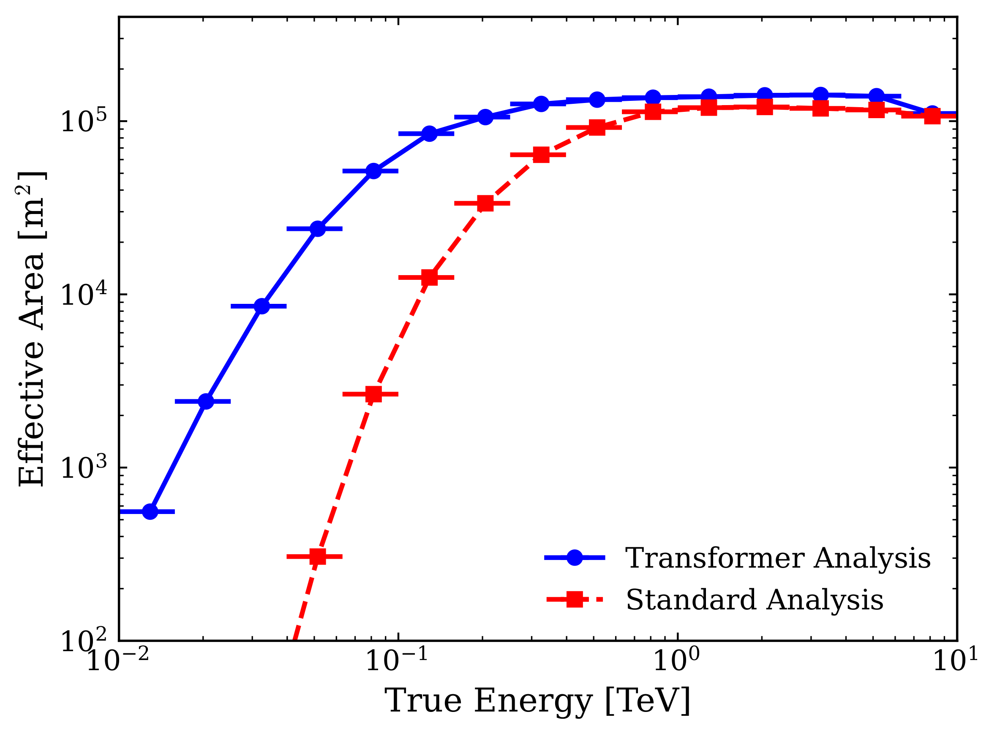
图注：Effective collection area of the \svt\ as a function of true energy, for the deep-learning analysis and the standard analysis.
对应解读：对应“建议重点查看的图表”第3项和“关键图表逐图导读”图3：有效面积随能量曲线。
入选理由：这是最直接支撑论文核心结论的性能图，展示深度学习分析与标准分析的有效收集面积随真实能量变化，可检验0.2 TeV附近约3倍提升以及0.05 TeV附近传统分析接近失效的说法。相比其他候选图，它最直接连接到低能阈值、事件保留率和实际观测灵敏度。
来源与置信度：\(arxiv_source\)；high；\(arxiv_source\) / manuscript.tex:figure[10]
Fig03
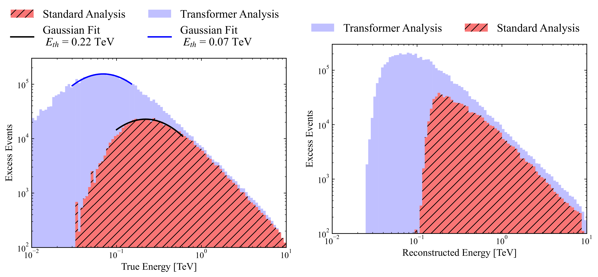
图注：Distribution of the surviving simulated gamma rays against true energy (left) and reconstructed energy (right), for the deep-learning analysis and for the standard analysis applied to the same simulated events. The standard analysis loses essentially all events below $\sim$0.1\,TeV during cleaning and parameterisation, while the transformer, which applies neither, retains them. The energy thresholds were determined with Gaussian fits to the peak of the distributions, yielding $0.07$\,TeV for the deep-learning analysis and $0.22$\,TeV for the standard analysis.
对应解读：对应“建议重点查看的图表”第4项：能量阈值或探测率曲线；也对应日报中阈值从0.22 TeV降至0.07 TeV的关键结果。
入选理由：图中给出幸存伽马事件随真实能量和重建能量的分布，并明确通过峰值高斯拟合得到0.07 TeV与0.22 TeV两个阈值，是验证摘要中阈值降低三倍的关键依据。它还显示标准分析在0.1 TeV以下因清洗和参数化几乎丢失事件。
来源与置信度：\(arxiv_source\)；high；\(arxiv_source\) / manuscript.tex:figure[3]
Fig08

图注：Receiver operating characteristic curves for gamma/hadron classification, in four bins of true energy. In each panel the solid blue curve is the transformer analysis and the dashed red curve the standard analysis, so that line style as well as colour distinguishes the two; the dotted diagonal marks a classifier with no discriminating power. The area under each curve is given in the legend of the corresponding panel.
对应解读：对应“建议重点查看的图表”第5项和“关键图表逐图导读”图4：伽马/强子ROC和AUC，尤其是分能量bin曲线。
入选理由：该图按真实能量分成四个bin展示ROC曲线，并在每个面板标出AUC，可直接检查Transformer的AUC提升是否在低能段也成立，而不是被高能事件主导。它最适合支撑日报中关于AUC从0.80提高到0.91以及低能分类改善的解读。
来源与置信度：\(arxiv_source\)；high；\(arxiv_source\) / manuscript.tex:figure[8]
Fig07
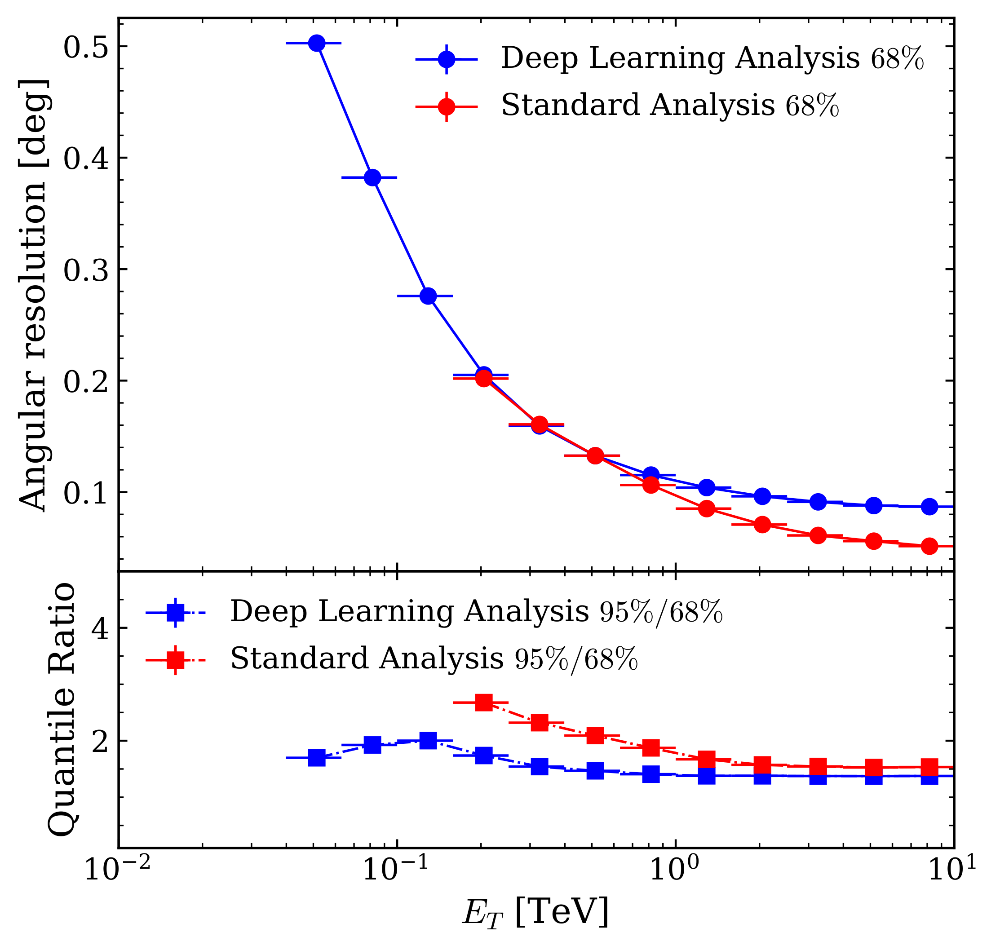
图注：Top panel: angular resolution, defined as the 68\,\% containment radius of the reconstructed source position. When all events surviving the cuts are considered, the deep-learning curve extends to energies about four times lower than the standard analysis. Bottom panel: ratio of the 95\,\% to the 68\,\% containment radius, which quantifies the size of the tails of the distribution. Because the resolution is taken from the $\theta^2$ distribution, these two containments correspond to $1\sigma$ and $2\sigma$, so a 1D-Gaussian gives a ratio of $2$. The deep-learning analysis remains at or below that value across the whole range, whereas the standard analysis rises to $2.7$ in its lowest usable bin, indicating pronounced tails.
对应解读：对应“建议重点查看的图表”第6项和“关键图表逐图导读”图5：角分辨率和方向残差/containment。
入选理由：该图给出68% containment角分辨率随能量变化，以及95%与68% containment半径比值，可判断Transformer是否真的把方向重建延伸到约0.05 TeV，并检查低能端尾部分布是否恶化。相比Fig06的二维位置图，Fig07更定量、更适合嵌入日报性能解读。
来源与置信度：\(arxiv_source\)；high；\(arxiv_source\) / manuscript.tex:figure[7]
Fig04
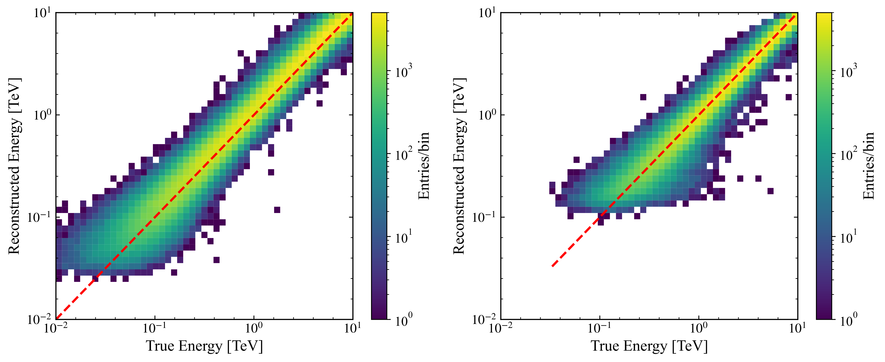
图注：Energy migration matrices after the global gammaness cut and the $\theta^2$ cuts obtained from the sensitivity calculation, for the deep-learning analysis (left) and the standard analysis (right). The colour scale gives the number of entries per bin, is logarithmic and is common to both panels, saturating at $5\times10^{3}$. The red dashed line marks perfect reconstruction. The deep-learning matrix follows that line down to a few tens of GeV, whereas the standard analysis reconstructs essentially nothing below $\sim$0.1\,TeV and instead piles those events up in a horizontal band at $\Erec\simeq0.1$--$0.2$\,TeV.
对应解读：对应“建议重点查看的图表”第7项和“模型拟合/残差诊断”段落：能量迁移、低能偏差和重建残差。
入选理由：能量迁移矩阵直接展示重建能量与真实能量的关系，红色虚线标出完美重建，可检验低能端是否出现系统性高估或事件堆积。图中标准分析在约0.1--0.2 TeV出现水平带，而Transformer沿对角线延伸到几十GeV，是理解阈值降低是否伴随能量偏差的关键诊断。
来源与置信度：\(arxiv_source\)；high；\(arxiv_source\) / manuscript.tex:figure[4]
Fig02
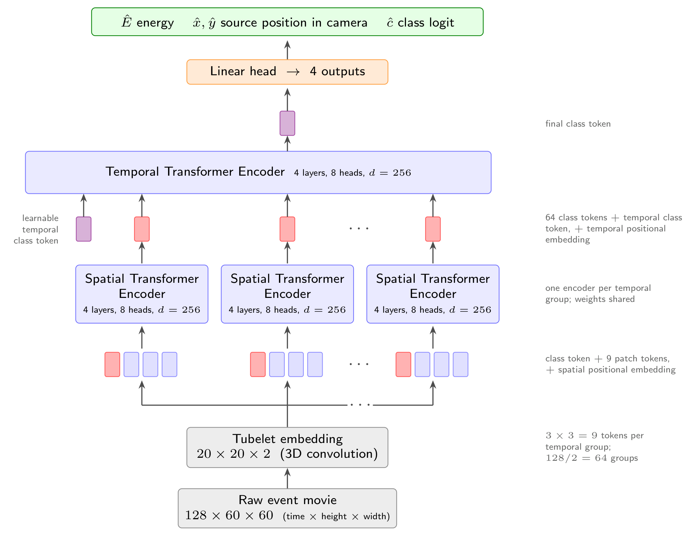
图注：The composite ViViT-FE model used in this work. The raw $128\times60\times60$ event movie is divided into tubelets of $20\times20$ pixels $\times$ 2 frames and embedded by a learned 3D convolution, giving $3\times3=9$ tokens for each of the $128/2=64$ temporal groups. A spatial transformer encoder, with weights shared across groups, acts on each temporal group independently and returns one class token per group. These 64 class tokens, together with a learnable temporal class token and a temporal positional embedding, are then passed to a temporal transformer encoder, which learns the evolution of the image through the event. The temporal class token that emerges from that encoder, drawn in the same colour as the one entering it, is passed to a linear head that outputs the primary energy, the two camera-plane source coordinates and the particle-type logit. No value is discarded at any point, so that the number of values reaching the reconstruction stage is the $4.6\times10^{5}$ of the raw movie, to be compared with the $\mathcal{O}(10)$ of Figure~\(\ref{fig:standard}.\)
对应解读：对应“建议重点查看的图表”第2项和“关键图表逐图导读”图2：视频Transformer架构、多任务头和端到端输入。
入选理由：该图说明原始128×60×60事件视频如何被切成tubelet，经空间Transformer和时间Transformer编码，并通过同一表示输出能量、方向和粒子类型。它支撑日报中关于端到端视频输入、共享编码器和多任务学习的技术解释，是理解性能曲线背后方法差异的必要图。
来源与置信度：\(arxiv_source\)；high；\(arxiv_source\) / manuscript.tex:figure[2]
强相关工作
这篇工作属于 IACT 重建方法和高能伽马射线仪器分析的交叉方向。历史基线是 Hillas 参数化与后续的随机森林、Boosted Decision Tree、模板似然和半解析模型分析；近年则出现了用卷积神经网络、图神经网络和深度学习做 Cherenkov 图像分类/重建的工作。本文的新意在于把事件明确作为带时间维的视频输入，并用视觉 Transformer 做端到端多任务重建。建议检索关键词包括 “IACT Hillas parameters”, “Imaging Atmospheric Cherenkov Telescope deep learning”, “Cherenkov telescope Transformer”, “gamma hadron separation CNN IACT”, “CTA low energy threshold reconstruction”。
它也和 CTA 以及小型/中型 Cherenkov 望远镜的设计取舍有关。CTA 的科学目标之一是扩大能量覆盖并提高瞬变响应能力，而低能阈值通常依赖大镜面、快速相机和精细分析。本文对既有观点形成温和挑战：它不是否认口径重要，而是指出在低光子数事件中，传统分析链可能没有达到硬件允许的信息极限。相反观点或需要警惕的方向是：深度模型在理想蒙特卡洛上表现很好，但在真实夜天光、大气变化、标定误差和域偏移下可能退化。因此应把它与真实数据校准、模板似然分析和 CTA pipeline 研究一起阅读。
同一事件 / 同类源线索：
- https://arxiv.org/abs/2608.31148
- https://www.cta-observatory.org/
- https://www.mpi-hd.mpg.de/hfm/HESS/
- https://magic.mpp.mpg.de/
- https://veritas.sao.arizona.edu/
相似工作：
基础理论 / 方法工作：
- https://ui.adsabs.harvard.edu/abs/1985ICRC....3..445H/abstract
- https://ui.adsabs.harvard.edu/abs/1983ApJ...272..317L/abstract
相反观点 / 张力线索：
（未提供）
2. TeV Gamma Rays and Neutrinos from Winds Driven by Radiatively Inefficient Accretion Flows of Low-Luminosity Active Galactic Nuclei
- 来源：arXiv / astro-ph.HE
- 链接：https://arxiv.org/abs/2608.30596v1
- 作者：Nobuyuki Sakai, John F. Beacom, Kohta Murase
- 评分：novelty 8/10，importance 9/10，relevance 10/10，final 10.00/10
- 推荐理由：High-priority TeV gamma-ray and neutrino modeling tied to LHAASO detection of a non-jetted LLAGN, with implications for NGC 4278, Sgr A*, cosmic-ray acceleration, and multimessenger tests.
中文题目：低光度活动星系核中由辐射低效吸积流风驱动的 TeV 伽马射线和中微子
做了什么：这篇文章把 LHAASO 在非强喷流低光度活动星系核 NGC 4278 中看到的静默期 TeV 伽马射线，解释为辐射低效吸积流产生的外流风在核区外形成激波、加速宇宙线质子后经强子相互作用产生的辐射，而不是通常假设的弱喷流活动。作者以 NGC 4278 为模板，计算风驱动激波中的粒子加速、质子-质子碰撞、伽马射线和中微子输出，并指出只要风功率不超过约 \(2\times10^{43}\,\mathrm{erg\,s^{-1}}\)、注入谱接近 \(E^{-2}\)，就可解释 LHAASO 的静默期 TeV 通量。文章还把同一框架应用到 Sgr A*，说明银河系中心的 TeV 辐射也可由类似机制产生。
为什么重要：重要性在于它把“无强喷流 LLAGN 的 TeV 辐射”从喷流范式中部分解放出来，提出一个与 RIAF 风、Bondi 吸积和核区气体环境直接相连的强子加速机制。如果成立，LLAGN 不只是低亮度黑洞吸积的旁支对象，而可能是一个常见的 TeV 伽马射线和宇宙线加速源族群。
理论 / 观测 / 仪器方法价值：理论上，本文给出了一条从 \(100\,\mathrm{pc}\) 尺度热气体供给、RIAF 质量流率径向剖面、风动能功率，到激波加速和 \(pp\) 多信使输出的闭合链条。观测上，它提供了可检验预言：静默期 TeV 光谱形状、与 GeV 波段的衔接、未来 CTA/LHAASO 监测中的长期稳定性，以及 IceCube/KM3NeT 对近邻 LLAGN 堆叠中微子信号的约束。方法上，它也给出一个可迁移到 Sgr A* 和其他近邻 LINER/LLAGN 的半解析建模框架。
为什么应该关注：如果你关心高能中微子、银河系外宇宙线源、低吸积率黑洞反馈或 LHAASO/CTA 的非喷流源科学，这篇文章值得看。它关注的不是耀变体那类显眼喷流，而是数量更多、长期较暗、过去容易被认为高能辐射效率很低的 LLAGN；一旦 RIAF 风普遍能把少量吸积能转化为 PeV 级质子，那么低光度黑洞的反馈和高能粒子预算都需要重新评估。
展开详细解读：文章讲解、背景、理论、重点章节、图表与相关工作
文章详细讲解
科学问题：LHAASO 报告了来自 NGC 4278 的 TeV 伽马射线信号，而这个源是近邻低光度活动星系核，缺乏典型强相对论喷流。传统解释通常会尝试把月尺度变化的高能活动归因于弱喷流或紧致核区非热电子，但本文刻意聚焦“静默期” TeV 辐射：如果源不处在明显爆发态，是否仍然可以由黑洞吸积本身，特别是 RIAF 风，持续地产生 TeV 光子和中微子？这个问题直接关系到 LLAGN 是否是普遍的宇宙线加速器，而不仅是少数喷流取向源的低亮度版本。
作者怎么做：文章构造了一个风驱动激波模型。黑洞附近的辐射低效吸积流由于无法有效辐射掉引力能，会产生较强外流；外流在核区或星系中心气体环境中形成激波，并在激波处通过一阶费米机制加速质子。加速质子与周围气体发生 \(pp\) 碰撞，产生 \(\pi^0\) 衰变伽马射线以及 \(\pi^\pm\) 衰变中微子。模型的关键输入包括风功率、风速度或激波速度、靶气体密度、加速效率、注入谱指数、最大能量和源距离。作者用 NGC 4278 在 \(100\,\mathrm{pc}\) 尺度的电离气体和 Bondi 吸积估计来检查所需风功率是否物理可行。
关键结果：为了匹配 LHAASO 报告的静默期 TeV 通量，模型需要的风功率为 \(\lesssim2\times10^{43}\,\mathrm{erg\,s^{-1}}\)，宇宙线注入谱取接近 \(2.0\) 的硬谱。这一功率并未超过 Bondi 供给可支持的范围，条件是内流质量流率随半径下降不太陡，即 RIAF 的径向吸积剖面较浅，从而仍有足够能量进入风。强子模型自然伴随中微子输出，但单个 NGC 4278 的中微子通量预计仍接近或低于当前探测阈值，更有希望通过多源堆叠或未来探测器检验。作者还把同一机制用于 Sgr A*，发现用合理参数可以重现银河系中心 TeV 伽马射线，暗示这不是 NGC 4278 的特例。
局限和下一步：当前模型的最大不确定性来自 LHAASO 信号本身的源关联、静默期通量分解、核区气体分布、风的几何和时间演化，以及宇宙线是否真正被禁闭到足够长时间以提高 \(pp\) 效率。若 TeV 辐射来自未分辨的喷流、核星团、脉冲星风星云或星形成相关宇宙线，该解释会被削弱。下一步应包括：用 CTA、LHAASO 后续数据和 Fermi-LAT 长时间数据检验 GeV-TeV 光谱连续性；用 Chandra/ALMA/光学积分场光谱约束核区气体密度；对 LLAGN 样本进行 TeV 和中微子堆叠；以及在数值 RIAF 风模拟中检验所需风功率和激波位置是否自洽。
关键结果是怎么做出来的
本文最核心的证据链从 NGC 4278 的“静默期” TeV 通量开始。作者没有试图解释所有可能的月尺度活动，而是选择 LHAASO 报告中较稳定、较低态的伽马射线部分作为目标量。这一选择很关键，因为风驱动激波模型天然更适合准稳态或长期平均辐射，而不是快速耀发。样本层面本文主要是单源模板研究，并辅以 Sgr A* 作为同类机制的近邻应用，因此其统计目标不是建立一个源族群的显著相关性，而是检验一个物理模型能否在能量预算、光谱和多信使输出上同时自洽。
模型比较的重点不是复杂的贝叶斯证据竞争，而是物理参数空间是否落在观测可接受范围内。作者计算宇宙线质子注入、冷却和逃逸后的稳态分布，再由 \(pp\) 相互作用得到伽马射线谱，并与 LHAASO 的 TeV 通量点或通量带比较。主要可调量包括风功率、宇宙线加速效率、注入谱指数、环境气体密度、激波尺度和扩散/逃逸时间。文章强调，当注入谱指数取 \(2.0\) 左右时，所需风功率 \(\lesssim2\times10^{43}\,\mathrm{erg\,s^{-1}}\)，这比任意调大非热功率更有意义，因为它可由 Bondi 供给和 RIAF 外流理论支撑。
显著性或置信度方面，本文依赖 LHAASO 原始探测结果给出的 TeV 检出，而自身主要评估模型是否穿过观测误差区间，并是否不违反其他波段和中微子上限。读者应重点看光谱能量分布图：模型线是否只在某一能段人为贴合，还是能同时解释 TeV 斜率和归一化；GeV 波段是否过冲 Fermi-LAT 数据或上限；高能端是否因最大能量或 \(\gamma\gamma\) 吸收出现合理截断。若图中给出了不同风功率或不同谱指数的曲线，最重要的是比较它们相对于 LHAASO 数据点的斜率差异，而不是只看归一化。
系统误差主要有三类。第一是源环境：NGC 4278 核区气体密度、温度、Bondi 半径和实际内流率都有观测和模型不确定性，这会直接改变 \(pp\) 效率和风功率需求。第二是传播：宇宙线在核区的扩散系数和湍流水平决定其是否在逃逸前发生足够多 \(pp\) 碰撞；扩散太快会显著降低伽马射线效率。第三是源混淆：TeV 角分辨率有限，弱喷流、未解析星族源或背景源都可能贡献通量。本文的稳健性主要体现在参数扫描和能量预算检验，而不是在观测数据层面重新做源显著性分析。
Sgr A 的应用是本文另一个关键支撑点。银河系中心长期存在 TeV 源，且 Sgr A 也是低吸积率黑洞/RIAF 的原型对象之一。若同一类风驱动强子模型可在不采用极端参数的情况下解释 Sgr A 的 TeV 辐射，就说明 NGC 4278 方案不是为单个源过拟合出来的特例。读者应关注作者是否使用了与 Sgr A 环境相符的气体密度、风功率和扩散尺度，以及模型是否会与 H.E.S.S. 对银河中心弥散发射和点源成分的分解相冲突。
展开背景、理论、公式、模型、章节和图表导读
背景知识
LLAGN 是低 Eddington 比的活动星系核，常见于近邻早型星系、LINER 和低激发射电星系中。它们的辐射亮度远低于类星体，但黑洞质量往往不小，因此低亮度主要来自低吸积率和低辐射效率，而不是中心引擎不存在。NGC 4278 是近邻 LLAGN，具有紧致射电核和弱喷流迹象，但没有耀变体那样强烈指向地球的相对论喷流，因此若它在 TeV 波段被探测到，会迫使我们认真考虑非喷流的高能辐射通道。
RIAF 是理解低 Eddington 比黑洞的标准框架之一。在这种流中，气体密度低、光学薄、库仑耦合弱，吸积释放的能量很大部分被平流进入黑洞或驱动外流，而不是以热辐射形式释放。理论和数值模拟都表明 RIAF 往往伴随强风，质量内流率可随半径向内下降。这些风不仅是黑洞反馈的一种形式，也可能在与周围介质相互作用时形成激波，成为粒子加速场所。
高能天体物理中，TeV 伽马射线常被直觉地归因于喷流，尤其是 AGN 领域长期由 blazar 主导。但这是一种选择效应很强的图像：喷流取向源亮、快变、容易被 Cherenkov 望远镜和空气簇射阵列发现；非指向、低光度、长期稳定的源则更难确认。LHAASO 和未来 CTA 的深度与宽视场能力，正在把注意力推向这些过去被遗漏的稳态或准稳态 TeV 源。
为什么现在值得重新看？一方面，LHAASO 给出了新 TeV 数据，使近邻非强喷流 LLAGN 成为可讨论对象；另一方面，IceCube 的天体中微子背景仍未完全归因于已知源类，低亮度但数量众多的 AGN 族群一直是候选贡献者。若 RIAF 风能够普遍把黑洞吸积能转成宇宙线，LLAGN 的总体贡献可能不是由单个极亮源决定，而是由大量近邻和中等红移低光度核累积形成。
该领域常见误区包括：把“低辐射亮度”等同于“低机械功率”；把“没有强喷流”等同于“不能加速高能粒子”；以及看到 TeV 光子就默认需要电子逆康普顿模型。实际上，在高密度核区，强子 \(pp\) 过程的伽马射线和中微子产额可能相当可观；但反过来，也不能只凭 TeV 通量断言强子起源，因为电子模型、喷流残余、星形成宇宙线和源混淆都可能给出相似的伽马射线谱。
基础理论 / 方法脉络
基本物理图像是：低吸积率黑洞周围存在热、稀薄、几何厚的 RIAF，部分气体向内落入黑洞，另一部分以风的形式带走质量、动量和能量。风撞击周围核区介质形成激波，激波两侧速度不连续，带电粒子在磁湍流中反复穿越激波面，每次获得少量能量，形成近似幂律的宇宙线质子谱。强激波的一阶费米加速在理想情况下给出接近 \(E^{-2}\) 的谱，这正是本文匹配 LHAASO 静默期通量时偏好的注入谱。
加速后的质子会经历多个竞争过程：继续加速、与气体发生 \(pp\) 碰撞、经扩散或对流逃逸、以及在最高能段受有限年龄和有限尺度限制。若 \(pp\) 冷却时间短于或可比逃逸时间，源就接近“强子量热器”，较多宇宙线能量转化为 \(\pi^0\) 衰变伽马射线和 \(\pi^\pm\) 衰变中微子；若逃逸很快，则需要更高风功率才能产生同样 TeV 通量。本文的核心不是单纯假设有宇宙线，而是检查在 NGC 4278 的气体环境中这种转换效率是否足够。
观测量主要是光谱能量分布，即 \(E_\gamma^2\Phi_\gamma\) 随 \(E_\gamma\) 的变化，以及与 LHAASO、Fermi-LAT 和其他高能观测约束的兼容性。强子模型还有一个重要特征：中性 pion 和带电 pion 同时产生，因此伽马射线和中微子通量存在可计算的数量级关系。若未来中微子上限足够低而伽马射线仍被确认，模型的参数空间会被直接压缩；若探测到来自近邻 LLAGN 的堆叠中微子，则会强烈支持这种风驱动强子图像。
本文特定假设包括：风功率可由 RIAF/Bondi 供给支撑；激波区域有足够靶气体；质子注入为幂律且谱指数约为 \(2.0\)；TeV 光子从源区逃出时内部 \(\gamma\gamma\) 吸收不至于完全抹除信号；源长期平均状态可用稳态输运近似描述。主要退化关系出现在风功率、加速效率、气体密度和逃逸时间之间：提高任一能增加观测伽马通量的因素，都可降低其他参数需求。因此，只用 TeV 通量不能唯一确定风功率，必须结合气体观测、X 射线吸积约束和中微子上限。
系统误差还包括仪器角分辨率和背景建模。空气簇射阵列在 TeV 以上有强大统计能力和全天覆盖，但源定位与复杂区域分解不如成像大气 Cherenkov 望远镜。对 NGC 4278 这类较弱源，确认 TeV 信号是否与核区而非邻近未解析源相关，是理解物理机制的前提。对 Sgr A* 更是如此，银河中心既有点源也有弥散宇宙线海，空间模板和背景选择会强烈影响对 RIAF 风成分的归因。
公式与推导
第一步是从低吸积率黑洞的质量供给出发。Bondi 捕获率可写成
其中 \(M_{\rm BH}\) 是黑洞质量，\(\rho_\infty\) 是 Bondi 半径外热气体密度，\(c_s\) 是声速，\(\lambda\) 是与绝热指数有关的无量纲系数。这个式子把 \(100\,\mathrm{pc}\) 或核区热气体观测同可用吸积功率联系起来，是判断所需风功率是否现实的起点。
RIAF 中常用径向内流率剖面表示外流质量损失：
其中 \(r_{\rm B}\) 是 Bondi 半径，\(s\) 描述向内吸积率下降的陡峭程度。较小的 \(s\) 表示“浅剖面”，内区仍保留较多质量和能量，因此更容易提供本文所需的风功率。风的机械功率可近似为
其中 \(\dot{M}_{\rm w}\) 是风质量流率，\(v_{\rm w}\) 是风速，\(\epsilon_{\rm w}\) 是把吸积静质量能转成风机械能的效率。
风驱动激波把一部分机械功率注入宇宙线质子。若注入谱取幂律，
其中 \(Q_p\) 是单位能量单位时间注入率，\(\alpha\) 是谱指数，\(E_{p,\max}\) 是最大质子能量。归一化由
确定，\(\eta_{\rm CR}\) 是宇宙线加速效率。本文偏好的 \(\alpha\simeq2.0\) 对应强激波加速的典型硬谱。
最大能量由加速时间与损失或逃逸时间比较给出。Bohm 极限下可写成数量级关系
其中 \(B\) 是磁场，\(v_{\rm sh}\) 是激波速度，\(e\) 是元电荷，\(\eta_{\rm acc}\) 表示相对 Bohm 扩散的加速低效因子。要求 \(t_{\rm acc}<\min(t_{pp},t_{\rm esc},t_{\rm age})\)，即可估计 \(E_{p,\max}\) 是否足以产生 TeV 伽马射线。
质子与气体碰撞的冷却时间为
其中 \(n_{\rm H}\) 是靶气体数密度，\(\sigma_{pp}\) 是非弹性 \(pp\) 截面，\(\kappa_{pp}\) 是非弹性能量损失率。逃逸时间可用扩散近似写为
其中 \(R\) 是发射区尺度，\(D(E_p)\) 是扩散系数。有效强子转换效率常写成
这说明高气体密度或慢扩散都会提高 TeV 输出。
伽马射线光度与宇宙线功率的数量级关系可概括为
其中约 \(1/3\) 反映 pion 能量在中性和带电通道间的分配，\(E_p\simeq10E_\gamma\) 是 \(pp\) 产生 TeV 光子的典型能量映射。观测到的微分能流为
其中 \(d_L\) 是光度距离，\(\tau_{\gamma\gamma}\) 是内部或河外背景光吸收光深。对近邻 NGC 4278，河外背景光吸收通常不是 TeV 低端的主导误差。
中微子通量与伽马射线同源，单味近似可写为
这里 \(1/6\) 已粗略包含带电 pion 分支和振荡后单味分配。若用观测数据拟合模型，常用泊松或高斯近似似然，例如
其中 \(F_i^{\rm obs}\) 是第 \(i\) 个能段观测通量，\(F_i^{\rm mod}\) 是参数 \(\boldsymbol{\theta}\) 下的模型通量，\(\sigma_i\) 是统计和系统误差合成后的不确定度。这个诊断让读者检查模型是否真正由光谱形状支持，而不只是靠归一化贴合单个数据点。
模型拟合 / 应用方法
本文的拟合对象主要是 NGC 4278 静默期的 TeV 光谱能量分布，以及不能过冲的 GeV、中微子和多波段约束。实际可调参数包括风功率 \(L_{\rm w}\)、宇宙线加速效率 \(\eta_{\rm CR}\)、注入谱指数 \(\alpha\)、最大质子能量 \(E_{p,\max}\)、发射区尺度 \(R\)、靶气体密度 \(n_{\rm H}\) 和扩散系数 \(D(E)\)。其中 \(L_{\rm w}\) 和 \(\eta_{\rm CR}\) 往往以乘积形式控制总非热功率，因此只靠 TeV 归一化很难单独分辨。
统计上，这类工作常采用前向建模：给定一组物理参数，先算稳态质子分布，再通过 \(pp\) 产额核得到伽马射线和中微子谱，最后与观测通量点或上限比较。若数据点数量有限，严格的多参数后验会受先验强烈影响；因此本文更强调“存在合理参数空间”而非给出唯一最佳拟合值。读者在看拟合结果时应检查模型曲线是否同时满足 LHAASO TeV 点、Fermi-LAT GeV 约束和 IceCube 中微子上限，而不是只看 TeV 段是否贴合。
主要退化关系有四个。第一，\(L_{\rm w}\)、\(\eta_{\rm CR}\) 与 \(f_{pp}\) 近似相乘决定强子辐射光度。第二，\(n_{\rm H}\) 与 \(D(E)\) 共同决定 \(f_{pp}\)，高密度和慢扩散在光谱归一化上可能等效。第三，\(\alpha\) 与 \(E_{p,\max}\) 共同影响 TeV 谱斜率和截断位置，若 LHAASO 高能端误差较大，这两个参数会相关。第四，发射区位置影响气体密度、磁场和 \(\gamma\gamma\) 吸收，因此同一个 TeV 通量可以来自较小而高密度的区域，也可以来自较大而低效率但更高功率的区域。
残差诊断应关注能量相关结构。如果模型在低 TeV 低估而在高 TeV 过高，可能说明注入谱太硬或最大能量处理不合适；如果 GeV 段过冲，可能说明强子谱延伸过宽、低能宇宙线过多，或者需要低能截断/更复杂逃逸；如果只有一个 TeV 宽能段支撑模型，则不能声称已经区分强子风和弱喷流电子模型。对 Sgr A* 应特别检查空间模板残差，因为银河中心 TeV 辐射有点源和弥散成分混合问题。
模型可能失败的场景包括：后续观测发现 NGC 4278 的 TeV 辐射高度快速变化，明显指向紧致喷流区；更高角分辨率观测把信号定位到非核区源；X 射线或光学气体诊断显示 Bondi 供给远低于所需；或 IceCube/KM3NeT 给出低到排除强子归一化的中微子上限。反过来，如果未来看到稳定 TeV 辐射、硬谱、与核区气体结构相关的延展成分，或 LLAGN 样本中出现可堆叠的中微子相关信号，本文模型会显著增强。
重点章节 / 结果段落怎么读
-
引言与观测动机：应先抓住作者为何避开月尺度耀发、转而解释静默期 TeV 辐射。这里的重点是 NGC 4278 的源属性：近邻、低光度、无强喷流、LHAASO 检出。读者应区分“解释 LHAASO 报告的静默期通量”和“解释该源所有高能活动”这两个命题。
-
RIAF 风与能量预算：这一部分通常给出 Bondi 吸积、RIAF 径向内流率、风功率估计和 NGC 4278 气体观测约束。读者应重点看所需 \(L_{\rm w}\lesssim2\times10^{43}\,\mathrm{erg\,s^{-1}}\) 如何从吸积供给中获得，以及对径向剖面参数的依赖是否强。
-
粒子加速与多信使辐射模型：这里是论文的技术核心。应看清作者如何设定质子注入谱、最大能量、\(pp\) 效率、逃逸和伽马射线/中微子产额。特别要检查 \(\alpha=2.0\) 是否是固定假设还是由数据偏好，以及改变扩散或密度后结论是否保持。
-
NGC 4278 的光谱拟合结果：这一节应结合 SED 图阅读。重点是模型线与 LHAASO 静默期 TeV 点的相对位置，是否违反 Fermi-LAT 或其他波段上限，中微子预言是否低于当前上限。不要只看最佳曲线，要看参数变化带来的包络。
-
Sgr A 应用与讨论：这一节的价值在于跨源检验。读者应看同一模型参数是否需要对 Sgr A 做非常极端的调整，是否能与 H.E.S.S. 的银河中心 TeV 数据相容，以及作者如何讨论 LLAGN 作为源族群的普遍性。
-
稳健性、局限和可检验预言：若论文有附录或讨论段，应优先检查系统误差：气体密度、风速度、源距离、扩散系数、背景源混淆和中微子上限。这里决定本文是一个可推广的物理方案，还是一个参数调节空间较大的单源解释。
建议重点查看的图表
-
NGC 4278 多波段 SED 和 LHAASO 静默期 TeV 数据：看横轴能量、纵轴 \(E^2\Phi\) 或 \(\nu F_\nu\)，模型曲线是否穿过误差条，以及是否过冲 GeV/X 射线约束。
-
风功率或宇宙线功率参数扫描图：看达到 LHAASO 通量所需的 \(L_{\rm w}\) 是否低于 Bondi/RIAF 可供给范围，置信带或允许区是否很窄。
-
不同注入谱指数的伽马射线谱：重点比较 \(\alpha\simeq2.0\) 与更软谱对 TeV 斜率的影响，确认硬谱是否由观测要求而非任意选择。
-
\(pp\) 效率、冷却时间和逃逸时间诊断：看 \(t_{pp}\)、\(t_{\rm esc}\)、\(t_{\rm acc}\) 随能量的交点，判断最大能量和辐射效率是否自洽。
-
中微子通量预言图：看单源通量相对 IceCube 或 KM3NeT 灵敏度的位置，以及是否需要堆叠多个 LLAGN 才可检验。
-
Sgr A* 应用图：看模型是否能同时解释银河中心 TeV 谱的归一化和斜率，并注意图中是否区分点源和弥散成分。
-
能量预算表或参数表：检查风速度、发射区半径、气体密度、加速效率等是否落在观测或模拟可接受范围，而非极端调参。
-
稳健性检验图或附录表：看改变扩散系数、密度剖面、最大能量、吸收后，结论是否仍然需要类似的风功率。
关键图表逐图导读
图 1：若论文给出 NGC 4278 的多波段光谱能量分布，横轴通常是光子能量或频率，纵轴是 \(E_\gamma^2\Phi_\gamma\) 或 \(\nu F_\nu\)。数据点可能包括 Fermi-LAT、LHAASO 和其他波段约束，模型线代表风驱动 \(pp\) 伽马射线。读图时应看 TeV 段的斜率是否由 \(\alpha\simeq2.0\) 的强子谱自然给出；陷阱是只看模型穿过 LHAASO 点，而忽略 GeV 上限或非同时观测造成的状态差异。
图 2：若有参数空间图，横轴可能是风功率 \(L_{\rm w}\)、气体密度 \(n_{\rm H}\) 或发射区尺度 \(R\)，纵轴可能是所需宇宙线效率或预测 TeV 通量。模型允许区通常由 LHAASO 通量带、能量预算上限和其他波段上限共同限定。读者应检查 \(L_{\rm w}\lesssim2\times10^{43}\,\mathrm{erg\,s^{-1}}\) 是宽泛允许还是边界值；若允许区贴近最大供能线，模型的稳健性就较弱。
图 3：若有时间尺度图，横轴通常为质子能量 \(E_p\)，纵轴为 \(t_{\rm acc}\)、\(t_{pp}\)、\(t_{\rm esc}\) 或源年龄。交点给出 \(E_{p,\max}\) 和主要损失通道。主要结论应是质子可被加速到产生 TeV 伽马射线所需能量，并且在逃逸前有非忽略的 \(pp\) 相互作用概率。读图陷阱是把最高能量可达性等同于高辐射效率；两者分别由加速和禁闭控制。
图 4：若有中微子预言图，横轴是中微子能量 \(E_\nu\)，纵轴是 \(E_\nu^2\Phi_\nu\)，曲线可能与 IceCube 点源灵敏度、堆叠灵敏度或未来探测器比较。该图的重点不是声称单源必然可见，而是说明伽马射线模型对应的中微子通量是否处于可检验范围。陷阱是忽略 flavor 振荡、角分辨率和长期积分时间对灵敏度曲线的影响。
图 5：若有 Sgr A 应用图，横轴和纵轴同样为 TeV SED，数据可能来自 H.E.S.S. 或其他银河中心观测。模型线应与银河中心点源或中心弥散成分之一比较。读者要特别注意数据是否已经扣除了弥散背景，以及模型发射区尺度是否与观测角分辨率兼容；否则同一条谱线可能被错误地解释为 Sgr A 本体。
图 6：若论文含参数表，应把它当作关键图来读。表中的 \(M_{\rm BH}\)、\(d_L\)、\(n_{\rm H}\)、\(R\)、\(v_{\rm w}\)、\(\eta_{\rm CR}\)、\(\alpha\) 和 \(E_{p,\max}\) 共同决定结论。最容易忽略的读图陷阱是某些参数来自观测，某些来自理论假设，某些只是为了拟合选取；三者的不确定性级别并不相同。
论文原图 / 可嵌入图片
Fig02
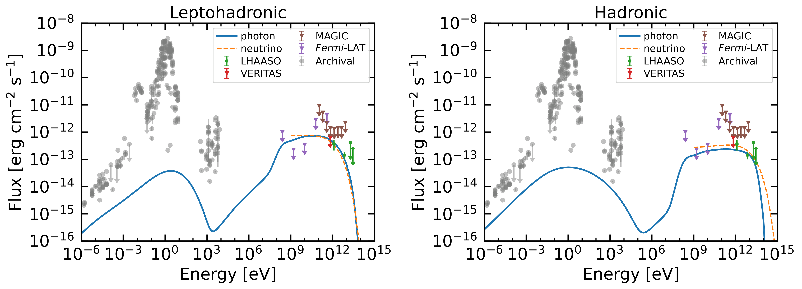
图注：\(\textit{Left}\): Multiwavelength SEDs for the leptohadronic scenario. Adopted parameters are shown in Table~\(\ref{tab:parameters}.\) The blue curve shows the total nonthermal photon spectrum while the orange dashed line indicates the all-flavor neutrino spectrum. Green circles correspond to data from LHAASO during the quiet period \(\citep{2024ApJ...971L..45C},\) while the red, purple, and brown triangles are 95\% confidence-level upper limits for the quiet period from VERITAS \(\citep{VERITAS_2026},\) \(\textit{Fermi}-LAT\) \(\citep{VERITAS_2026},\) and MAGIC \(\citep\)[post-flare dataset,][]{MAGIC_2026}, respectively. The gray thin symbols indicate archival data compiled by \citet{https://doi.org/10.26132/ned1}. \(\textit{Right}\): Same as the left panel but for the hadronic scenario.
对应解读：对应“建议重点查看的图表”第1项和“关键图表逐图导读”图1，以及模型拟合段落中对 NGC 4278 静默期多波段 SED、LHAASO TeV 点、Fermi/VERITAS/MAGIC 上限和中微子伴随输出的讨论。
入选理由：这是最核心的结果图，直接展示 NGC 4278 在轻强子与纯强子两种情形下的多波段 SED，包含 LHAASO 静默期 TeV 数据、Fermi-LAT/VERITAS/MAGIC 上限和档案多波段数据，可检验模型曲线是否穿过 TeV 误差条且不明显过冲 GeV 或其他波段约束。相比只看单一能段的图，它最能支撑日报对强子风模型可行性和多信使约束的详细解读。
来源与置信度：\(arxiv_source\)；high；\(arxiv_source\) / TeV-NGC4278.tex:figure[2]
Fig03
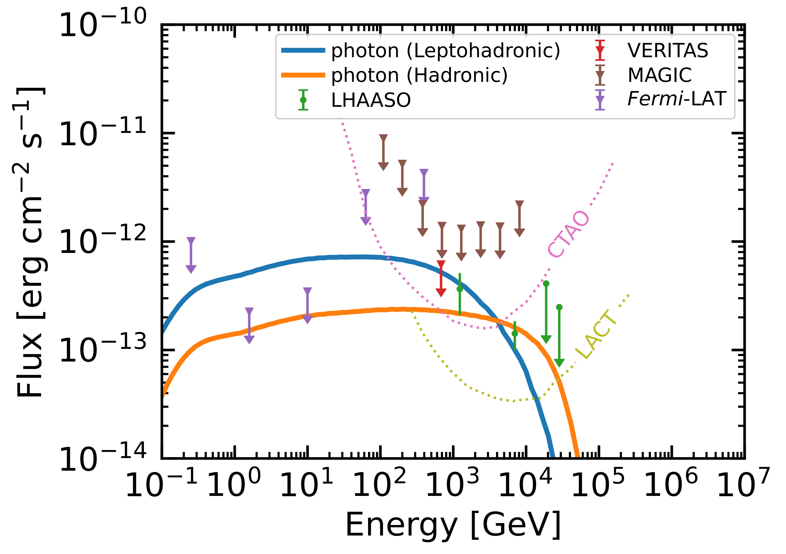
图注：Gamma-ray SEDs for the leptohadronic (blue) and hadronic (orange) scenarios. Green circles show LHAASO data obtained during the quiet period \(\citep{2024ApJ...971L..45C},\) while the red, purple, and brown triangles are 95\% confidence-level upper limits for the quiet period from VERITAS \(\citep{VERITAS_2026},\) \(\textit{Fermi}-LAT\) \(\citep{VERITAS_2026},\) and MAGIC \(\citep\)[post-flare dataset,][]{MAGIC_2026}, respectively. The pink and olive dotted lines indicate the sensitivities of the CTAO \(\citep\)[$\sim50$~hr,][]{2019scta.book.....C} and the LACT \(\citep\)[$\sim500$~hr,][]{2025ChPhC..49c5001Z}.
对应解读：对应“建议重点查看的图表”第1、3、8项，以及模型拟合段落中关于 TeV 谱形、GeV 上限、未来 CTAO/LACT 检验和不同模型情景比较的讨论。
入选理由：该图聚焦伽马射线 SED，把轻强子与纯强子模型直接与 LHAASO 静默期数据、VERITAS/Fermi-LAT/MAGIC 上限以及 CTAO/LACT 灵敏度放在一起，特别适合判断 TeV 斜率与归一化是否合理、是否会违反 GeV-TeV 约束，以及后续观测能否区分模型。它比多波段总 SED更清楚地服务于高能伽马射线拟合诊断。
来源与置信度：\(arxiv_source\)；high；\(arxiv_source\) / TeV-NGC4278.tex:figure[3]
Fig01
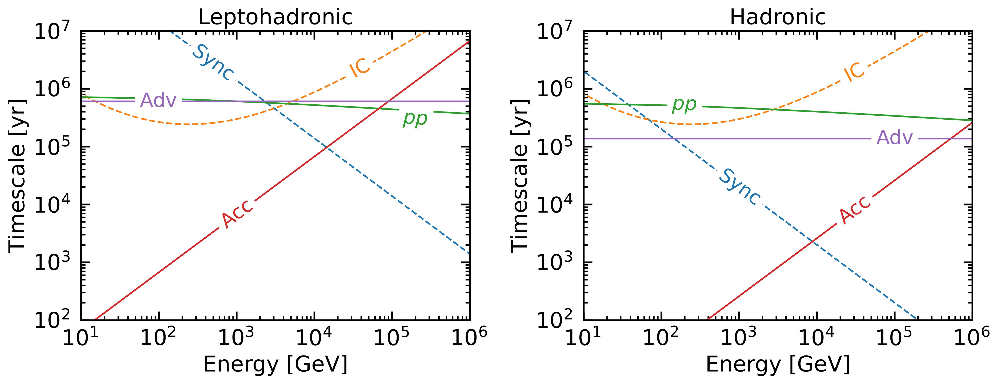
图注：\(\textit{Left}\): Timescales of CR electrons and protons in the leptohadronic scenario. Solid lines indicate processes that occur for hadrons or equally for protons and electrons, while dashed lines show processes that occur only for electrons. Colors correspond to different processes, including synchrotron (blue), inverse Compton (IC, orange), \(\textit{pp}\) interactions (green), DSA (red), and advection (purple). \(\textit{Right}\): Same as the left panel but for the hadronic scenario.
对应解读：对应“建议重点查看的图表”第4项和“关键图表逐图导读”图3，即 pp 效率、冷却时间、逃逸/平流时间、DSA 加速时间与最大能量自洽性的诊断。
入选理由：该图给出宇宙线电子和质子的关键时间尺度，包括同步辐射、IC、pp、DSA 和平流过程，并区分轻强子与纯强子情景。它能直接检验日报强调的核心物理问题：质子是否能被加速到产生 TeV 伽马射线所需能量，以及在逃逸前是否有足够 pp 相互作用概率。
来源与置信度：\(arxiv_source\)；high；\(arxiv_source\) / TeV-NGC4278.tex:figure[1]
Fig04
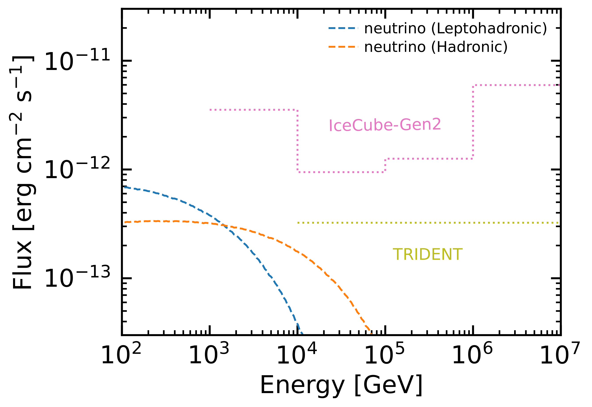
图注：Similar to Figure~\(\ref{fig:HESEDs}\) but for all-flavor neutrinos. The blue and orange dashed curves correspond to the leptohadronic and hadronic scenarios. The pink dotted steps and the olive dotted line indicate the 90\%~confidence-level sensitivities for 10~yr of IceCube-Gen2 \(\citep\)[][]{2021JPhG...48f0501A} and TRIDENT \(\citep\)[][]{2023NatAs...7.1497Y} observations, respectively. Note that the former is quasi-differential, assuming a spectral index of 2.0 within each energy bin, whereas the latter is integrated, assuming the same index over the whole energy range. We multiply the original sensitivities in the literature by a factor of 3 to convert from per-flavor fluxes to all-flavor ones, assuming a flavor ratio of 1:1:1.
对应解读：对应“建议重点查看的图表”第5项和“关键图表逐图导读”图4，以及模型拟合段落中关于 IceCube/KM3NeT 类未来中微子检验、单源通量可探测性的讨论。
入选理由：该图展示模型预言的全味中微子通量，并与 IceCube-Gen2 和 TRIDENT 灵敏度比较，能支撑日报中“单源不一定可见但未来或堆叠可检验”的判断。它还明确说明了全味转换和灵敏度曲线假设，是多信使预测不可替代的图。
来源与置信度：\(arxiv_source\)；high；\(arxiv_source\) / TeV-NGC4278.tex:figure[4]
Fig05
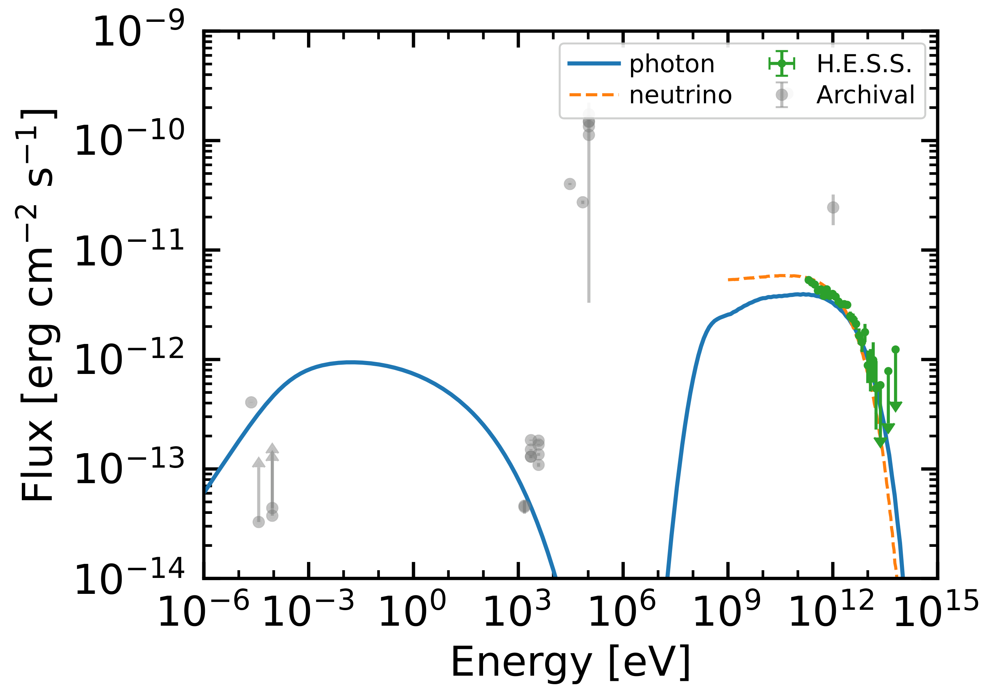
图注：Similar to Figure~\(\ref{fig:MWLSEDs}\) but for Sgr~A, with green points indicating gamma-ray data from H.E.S.S. \(\citep{2016Natur.531..476H}.\) Among the archival data reported by \citet{https://doi.org/10.26132/ned1}, the two $22$~GHz VERA points are the only ones we convert into lower limits, because their interferometric resolution is much finer than the shock scale (see Section~\ref{sec:Sgr A}).
对应解读：对应“建议重点查看的图表”第6项和“关键图表逐图导读”图5，即 Sgr A 应用图，以及详细解读中关于 RIAF 风机制可能普适于 LLAGN 的讨论。
入选理由：该图把同一机制应用到 Sgr A，并与 H.E.S.S. 银河中心伽马射线数据及多波段档案数据比较，是论文从 NGC 4278 个例推广到近邻 LLAGN/银河中心的关键证据。虽然与主拟合对象 NGC 4278 相比优先级略低，但对验证模型普适性和日报中的 Sgr A* 段落非常重要。
来源与置信度：\(arxiv_source\)；high；\(arxiv_source\) / TeV-NGC4278.tex:figure[5]
强相关工作
同一源背景方面，应把本文与 LHAASO 关于 NGC 4278 的 TeV 探测论文或通告放在一起读，并查找 NGC 4278 的射电核、弱喷流、Chandra X 射线核区气体、LINER/LLAGN 多波段研究。检索关键词可用 “NGC 4278 LHAASO TeV gamma rays”, “NGC 4278 low luminosity AGN jet”, “NGC 4278 Chandra Bondi accretion”, “NGC 4278 LINER radio core”。如果 LHAASO 结果的源关联或静默期/活动期分解发生变化，本文的物理解释也要相应重估。
同类工作方面，RIAF 中的非热粒子加速、LLAGN 作为高能中微子源、以及 Sgr A 的强子 TeV 模型都有较长历史。本文与这些工作的区别是把 RIAF 风在外部激波中的 \(pp\) 辐射作为重点，而不是只考虑黑洞附近 RIAF 内部湍流加速、磁重联，或喷流 SSC/EC 辐射。建议检索 “RIAF cosmic ray acceleration”, “LLAGN neutrino gamma-ray”, “accretion disk wind shock cosmic rays”, “Sgr A TeV hadronic model”。
相反观点或张力主要来自弱喷流解释、电子逆康普顿模型和源混淆问题。若 NGC 4278 的 TeV 辐射呈现快速变化或与射电喷流活动同步，弱喷流模型会更有优势；若 GeV-TeV 光谱可由单区或多区轻子模型自然解释且无中微子伴随，强子风模型就不是唯一方案。对 Sgr A*，历史张力还包括 TeV 点源 HESS J1745-290、中心分子区弥散发射和可能的 PeVatron 解释之间的成分分解。
同一事件 / 同类源线索：
- https://arxiv.org/abs/2608.30596
- https://arxiv.org/pdf/2608.30596
- https://ned.ipac.caltech.edu/byname?objname=NGC%204278
- https://simbad.u-strasbg.fr/simbad/sim-id?Ident=NGC%204278
- https://simbad.u-strasbg.fr/simbad/sim-id?Ident=Sgr%20A*
相似工作：
基础理论 / 方法工作：
- https://ui.adsabs.harvard.edu/abs/1952MNRAS.112..195B/abstract
- https://ui.adsabs.harvard.edu/abs/1994ApJ...428L..13N/abstract
- https://ui.adsabs.harvard.edu/abs/1977ICRC...11..132B/abstract
- https://ui.adsabs.harvard.edu/abs/1978MNRAS.182..147B/abstract
相反观点 / 张力线索：
3. Decisive evidence for a global cosmic-ray feature in gamma-ray data
- 来源：arXiv / astro-ph.HE
- 链接：https://arxiv.org/abs/2608.28757v1
- 作者：Fernando Valenciano, Pedro De la Torre Luque, Daniele Gaggero, Jorge Martin Camalich
- 评分：novelty 8/10，importance 9/10，relevance 10/10，final 10.00/10
- 推荐理由：High-priority Fermi-LAT diffuse gamma-ray and Galactic cosmic-ray propagation result. The claimed global 20--30 GeV gamma-ray spectral break tied to local CR nuclei, with correlated systematics treated and 4.44 sigma global preference, is directly relevant and potentially important.
中文题目：伽马射线数据中银河系尺度宇宙线谱特征的决定性证据
做了什么：这篇文章用 17 年的 Fermi-LAT 银河盘弥散伽马射线数据，检验本地宇宙线核素谱中约几十 \,\(\mathrm{GeV}\) 处的谱硬化是否只是太阳邻域现象，还是整个银河盘的传播特征。作者显式处理了 Fermi-LAT 有效面积等相关仪器系统误差，在内银河盘弥散辐射谱中找到约 \(20\text{--}30\,\mathrm{GeV}\) 的谱折断，模型改进量为 \(\Delta\chi^2=39.78\)，对应全局显著性 \(4.44\sigma\)。折断能量和谱指数变化 \(\Delta\gamma\simeq 0.20\) 与本地宇宙线核素谱硬化一致，支持这不是局部源或太阳邻域效应，而是银河盘尺度的宇宙线传播性质。
为什么重要：宇宙线谱硬化长期存在两类解释：源注入谱变化、邻近源贡献，或传播扩散性质在某个刚度附近改变。若同一特征能在银河盘弥散 \(\gamma\) 射线中出现，就说明它不只属于地球附近测到的宇宙线样本，而是更接近全银河宇宙线海的性质。这对理解宇宙线从 \(\mathrm{GeV}\) 到膝区的传播机制，以及弥散 \(\gamma\) 射线作为宇宙线示踪器的可靠性，都有直接影响。
理论 / 观测 / 仪器方法价值：理论上，这项结果支持宇宙线扩散系数的刚度依赖在几十 \(\mathrm{GV}\) 附近发生变化，例如从 Kolmogorov 型湍流标度向 Kraichnan 型标度过渡。观测上，它说明银河盘 \(\gamma\) 射线在至少到百 \(\mathrm{GeV}\) 的能段内主要由 \(\pi^0\) 衰变贡献主导，因此可以作为远离太阳邻域的宇宙线质子和核素谱探针。方法上，论文强调相关系统误差会显著影响谱折断显著性，是未来弥散辐射分析和宇宙线多信使拟合必须严肃处理的部分。
为什么应该关注：如果你关心宇宙线硬化、银河弥散 \(\gamma\) 射线建模、暗物质间接探测背景，或高能中微子银河贡献，这篇论文都值得看。它把本地直接探测的宇宙线谱特征和银河盘大尺度 \(\gamma\) 射线联系起来，给出一个可检验的传播图像：宇宙线谱中的某些结构可能是全银河扩散物理，而不是某个局部源偶然叠加。
展开详细解读：文章讲解、背景、理论、重点章节、图表与相关工作
文章详细讲解
科学问题：本地宇宙线直接探测实验已经确认，在刚度约几百 \(\mathrm{GV}\) 附近，质子和核素谱相对低能外推出现硬化。问题在于，这个硬化究竟是太阳邻域附近源、局部磁场环境或时间涨落造成的局部现象，还是整个银河盘宇宙线传播的普遍特征。弥散 \(\gamma\) 射线提供了独立检验：若银河盘气体中的宇宙线质子谱也存在相同硬化，它们通过 \(pp\) 碰撞产生的 \(\pi^0\) 衰变 \(\gamma\) 射线谱应在相应能量处出现可测的折断。
作者怎么做：论文分析了 17 年 Fermi-LAT 数据，聚焦银河盘方向的弥散 \(\gamma\) 射线谱，并将其与宇宙线传播模型联系起来。关键不是简单拟合一个折线谱，而是在统计处理中纳入能量相关且彼此相关的仪器系统误差，尤其是有效面积、能量响应和弥散模板可能带来的协方差。作者比较无折断模型和带谱折断模型，检验折断能量、幅度和空间一致性是否与本地宇宙线核素谱相符。
关键结果：在内银河盘区域，数据偏好约 \(20\text{--}30\,\mathrm{GeV}\) 的 \(\gamma\) 射线谱折断，统计量改进为 \(\Delta\chi^2=39.78\)，折算全局显著性为 \(4.44\sigma\)。由于 \(\pi^0\) 衰变 \(\gamma\) 射线能量通常对应母体质子能量的约十分之一量级，这一 \(\gamma\) 射线折断自然对应本地宇宙线核素在数百 \(\mathrm{GV}\) 刚度处的硬化。测得谱指数变化 \(\Delta\gamma\simeq 0.20\)，也与 AMS-02、PAMELA、CREAM 等直接宇宙线实验报告的硬化幅度相近。
局限和下一步：结论依赖于银河弥散辐射分量分解，包括 \(\pi^0\) 衰变、逆康普顿散射、轫致辐射、点源残留和气体柱密度模板。虽然作者强调相关系统误差处理增强了结果可信度，但内银河区的气体分布、源群未解析贡献、能量标定与大尺度背景模板仍可能影响折断幅度。下一步需要用不同天空区域、不同气体环模型、更新的 Fermi-LAT 事件类、HAWC/LHAASO/CTA 高能延伸以及直接宇宙线传播联合拟合来检验该特征是否能从几十 \(\mathrm{GeV}\) 连续追踪到更高能，并最终关联到宇宙线膝区。
关键结果是怎么做出来的
数据和样本选择方面，核心样本是 17 年 Fermi-LAT \(\gamma\) 射线观测，目标区域为银河盘，特别是内银河盘。选择银河盘是因为那里的气体柱密度高，\(pp\) 碰撞产生的 \(\pi^0\) 衰变 \(\gamma\) 射线相对更强，更适合追踪宇宙线核子谱。与高纬天空相比，银河盘的优势是信号强，劣势是分量复杂：逆康普顿、轫致辐射、未解析点源和气体模板误差都会进入谱形残差。
统计证据链的核心是模型比较。作者将无全局谱折断的弥散谱模型与允许存在折断的模型比较，得到 \(\Delta\chi^2=39.78\)。这个数值不是简单的单能点偏差，而是跨能段谱形系统性改善。论文报告的全局显著性为 \(4.44\sigma\)，意味着作者考虑了寻找折断能量和可能区域选择带来的试验因子，而不是只给局部显著性。
最关键的参数是折断位置和斜率变化。\(\gamma\) 射线折断位于约 \(20\text{--}30\,\mathrm{GeV}\)，谱指数变化 \(\Delta\gamma\simeq 0.20\)。如果弥散辐射由 \(\pi^0\) 衰变主导，母体宇宙线质子能量大致比 \(\gamma\) 射线能量高一个数量级，因此这个能量尺度与本地宇宙线在数百 \(\mathrm{GV}\) 附近的硬化自然对应。论文最有说服力之处在于能量尺度和幅度同时吻合，而不是只看到一个任意谱弯曲。
支持结论的图表应包括银河盘不同经度或径向区域的 \(\gamma\) 射线谱、无折断模型的残差、带折断模型后的残差压低、\(\Delta\chi^2\) 随折断能量或斜率变化的轮廓，以及系统误差协方差处理前后的显著性变化。特别要检查折断是否集中在某个明亮子区域，还是在内银河盘多处一致出现；若只由少数复杂区域驱动，全球解释会弱得多。
系统误差方面，作者强调相关仪器系统误差是分析的中心。对于谱折断搜索，逐能点独立误差会低估或误判谱形结构，因为有效面积误差通常在相邻能量间相关。稳健性检验应当包括改变能量范围、天空掩膜、点源处理、弥散模板、协方差矩阵设定和背景分量自由度。读者需要关注论文是否展示了这些改变下折断能量和 \(\Delta\gamma\) 的稳定性。
展开背景、理论、公式、模型、章节和图表导读
背景知识
研究对象是银河弥散 \(\gamma\) 射线辐射。银河盘中的高能 \(\gamma\) 射线主要来自三类过程：宇宙线质子和核子撞击星际气体产生 \(\pi^0\)，随后 \(\pi^0\rightarrow 2\gamma\)；宇宙线电子与星光、红外和微波背景发生逆康普顿散射；以及电子在气体库仑场中产生轫致辐射。在银河盘、尤其是气体丰富区域，\(\pi^0\) 衰变通常是从 \(\mathrm{GeV}\) 到几十甚至上百 \(\mathrm{GeV}\) 的主导分量。
历史问题来自直接宇宙线测量。PAMELA、AMS-02、CREAM、DAMPE 等实验显示，质子和氦核谱并非单一幂律，而是在刚度 \(\sim 200\text{--}300\,\mathrm{GV}\) 附近变硬。这个发现打破了早期简单扩散模型中源注入谱加单一扩散指数的图像。争论焦点是硬化来自源谱本身、不同源族叠加、局部年轻源贡献，还是扩散系数刚度依赖的变化。
为什么现在值得重新看，是因为 Fermi-LAT 已积累了足够长时间基线，弥散 \(\gamma\) 射线统计误差在许多能段已经很小，限制主要转向系统误差。早期分析常受限于事件统计、仪器响应版本和背景模板；17 年数据使得几十 \(\mathrm{GeV}\) 的谱细节可以被更严肃地检验。同时，AMS-02 等直接宇宙线数据已经把本地谱硬化测得很精确，使跨信使比较有了清晰目标。
该领域常见误区之一是把地球附近测到的宇宙线谱直接等同于全银河平均谱。宇宙线虽然会扩散，但在不同能量、不同距离和不同源分布下，局部谱可能偏离银河平均。另一个误区是把弥散 \(\gamma\) 射线中的谱弯曲自动归因于 \(\pi^0\) 衰变；实际上逆康普顿分量、未解析源和气体模板误差也能造成能谱形状变化。因此这篇论文的重要性在于它试图用空间一致性、能量对应和系统误差协方差来排除更平凡的解释。
基础理论 / 方法脉络
基本物理图像是：宇宙线核子在银河磁场湍流中扩散，同时与星际气体相互作用。若某一区域的宇宙线质子谱为近似幂律，气体柱密度已知，则 \(\pi^0\) 衰变 \(\gamma\) 射线谱在高于阈值足够多的能量上大体继承母体质子谱的斜率。因此，银河盘 \(\gamma\) 射线谱可以作为远程宇宙线谱仪，只是能量映射较宽且依赖强子产生截面。
宇宙线传播通常用扩散方程描述。稳态近似下，源注入、空间扩散、能量损失、对流、再加速和破碎共同决定观测谱。对几十 \(\mathrm{GeV}\) 以上的核子，能量损失和太阳调制不再是主导，扩散项与源项的平衡更关键。若源注入谱为 \(Q(R)\propto R^{-\nu}\)，扩散系数为 \(D(R)\propto R^{\delta}\)，逃逸主导时观测谱近似为 \(N(R)\propto R^{-(\nu+\delta)}\)。因此扩散指数 \(\delta\) 的变化会直接表现为宇宙线谱指数变化。
本文关心的物理解释是扩散湍流标度的转变。Kolmogorov 湍流常对应 \(\delta\simeq 1/3\)，Kraichnan 湍流常对应 \(\delta\simeq 1/2\)。如果不同刚度范围由不同湍流级联或阻尼机制控制，宇宙线逃逸时间的刚度依赖会改变，进而在核素谱和 \(\pi^0\) 衰变 \(\gamma\) 射线谱中留下相似的折断。论文报告的 \(\Delta\gamma\simeq 0.20\) 与这种 \(\delta\) 变化量级接近。
观测和统计上，难点不是是否能看到银河盘 \(\gamma\) 射线，而是能否把真实谱特征与仪器响应和模板误差区分开。Fermi-LAT 的有效面积、点扩散函数、能量重建和前景模型误差在能量上相关，会影响谱曲率。若用独立误差条逐点拟合，可能高估显著性；若协方差过于保守，又可能淹没真实特征。因此本文的关键方法价值在于把相关系统误差纳入 \(\chi^2\) 或似然比较，并用全局显著性评价折断。
公式与推导
第一步，从宇宙线稳态扩散的最简图像出发。忽略对流、再加速和高能核子的连续能量损失，宇宙线数密度 \(N(\mathbf{x},R)\) 满足
其中 \(R\) 是刚度，\(D(R)\) 是扩散系数，\(Q(\mathbf{x},R)\) 是源注入率。该式说明在高能核子近似下，谱形主要由注入和逃逸共同决定。
第二步，若扩散系数为幂律
且源注入为 \(Q(R)=Q_0(R/R_0)^{-\nu}\)，在漏箱或一维薄盘近似下宇宙线驻留时间 \(\tau_{\rm esc}\sim H^2/D(R)\)，于是
这里 \(H\) 是扩散晕尺度高，\(\nu+\delta\) 给出本地或银河平均核子谱指数。
第三步，若扩散湍流在特征刚度 \(R_b\) 附近改变，可写成平滑折断扩散系数
其中 \(s\) 控制折断平滑度，\(\delta_1\) 和 \(\delta_2\) 是低、高刚度扩散指数。若源谱不同时折断，则观测谱指数变化近似为
论文报告的 \(\Delta\gamma\simeq 0.20\) 可与这一扩散指数变化直接比较。
第四步，将宇宙线质子谱连接到 \(\pi^0\) 衰变 \(\gamma\) 射线发射率。单位体积、单位能量的 \(\gamma\) 射线发射率可写为
其中 \(n_{\rm gas}\) 是气体数密度，\(n_p\) 是宇宙线质子微分数密度，\(d\sigma_{pp\rightarrow \gamma}/dE_\gamma\) 是强子产生微分截面。该式是用 \(\gamma\) 射线追踪宇宙线核子谱的核心。
第五步，观测到的某方向 \((l,b)\) 上强度为视线积分
其中 \(I_{\rm IC}\)、\(I_{\rm brem}\) 和 \(I_{\rm src}\) 分别代表逆康普顿、轫致辐射和源残留。论文的物理结论要求 \(\pi^0\) 项在所选银河盘能段内占主导，否则谱折断的宇宙线核子解释会变弱。
第六步，能量尺度的直观映射可用近似关系表示为
即几十 \(\mathrm{GeV}\) 的 \(\gamma\) 射线主要对应数百 \(\mathrm{GeV}\) 的母体质子。这个宽映射解释了为什么 \(E_\gamma\simeq20\text{--}30\,\mathrm{GeV}\) 的折断可对应本地宇宙线刚度 \(R\sim \mathrm{few}\times100\,\mathrm{GV}\) 的硬化。
第七步，谱折断拟合常用分段或平滑折断幂律，例如
其中 \(E_b\) 是 \(\gamma\) 射线折断能量，\(\Gamma_1\) 和 \(\Gamma_2\) 是折断前后谱指数，\(\Delta\Gamma=\Gamma_2-\Gamma_1\)。若谱变硬，则 \(\Delta\Gamma<0\)，论文常用幅度可按绝对斜率变化理解为约 \(0.20\)。
第八步，包含相关误差的谱拟合统计量可写为
其中 \(\mathbf{d}\) 是能谱数据向量，\(\mathbf{m}(\boldsymbol{\theta})\) 是模型预测，\(\mathbf{C}\) 是包含统计误差和相关系统误差的协方差矩阵。比较无折断模型和带折断模型得到
本文报告 \(\Delta\chi^2=39.78\)，并在考虑试验因子后给出全局显著性 \(4.44\sigma\)，这是证据强度的统计表达。
模型拟合 / 应用方法
这类分析拟合的主要量包括弥散 \(\gamma\) 射线能谱归一化、低能和高能谱指数、折断能量 \(E_b\)、折断平滑度以及各背景分量的归一化或模板系数。若直接从传播模型出发，还会拟合扩散系数归一化 \(D_0\)、扩散指数 \(\delta\)、源注入指数 \(\nu\)、气体环归一化和逆康普顿场强度等。本文的重点是检验是否需要一个与宇宙线硬化对应的谱折断，而不是完整重建所有银河传播参数。
似然或 \(\chi^2\) 的构造必须处理协方差。Fermi-LAT 高统计量下，泊松误差并非唯一限制；相邻能量 bin 的有效面积误差、能量色散误差和弥散模板误差是相关的。协方差矩阵 \(\mathbf{C}\) 的非对角项会改变某种宽谱结构的显著性。如果忽略相关性，可能把一组同向系统偏差误认为物理折断；如果相关性建模过强，则会降低对真实谱特征的敏感度。
参数退化主要有三类。第一，\(\pi^0\) 衰变谱折断与逆康普顿分量谱形变化退化，尤其在几十 \(\mathrm{GeV}\) 附近电子谱和辐射场模型不确定时。第二，气体柱密度模板和宇宙线密度分布退化，因为观测到的是二者乘积的视线积分。第三，未解析点源族，特别是银河盘毫秒脉冲星、脉冲星风云和超新星遗迹残留，可能在某些区域产生类似谱曲率。
残差诊断应看两个层面：能量方向和空间方向。若无折断模型在 \(20\text{--}30\,\mathrm{GeV}\) 附近出现连续多个能量 bin 的同号残差，而带折断模型能系统性压低这些残差，这是谱特征证据。若残差只集中于个别经度、个别明亮气体复合体或点源附近，则可能是模板问题。稳健模型应在不同天空掩膜、不同能段边界、不同背景自由度下给出相近的 \(E_b\) 和 \(\Delta\gamma\)。
实际应用上，这种拟合框架可用于检验宇宙线膝区前后的全银河谱结构，也可服务于暗物质间接探测，因为暗物质信号常被银河弥散背景谱形和空间模板限制。若银河盘 \(\gamma\) 射线确实由 \(\pi^0\) 衰变主导到百 \(\mathrm{GeV}\)，那么未来联合 Fermi-LAT、LHAASO、HAWC 和 CTA 数据时，可以把 \(\gamma\) 射线谱折断当作宇宙线传播参数的强约束，而不是任意背景修正项。
重点章节 / 结果段落怎么读
数据/样本部分应首先看作者如何定义银河盘区域、能量范围、Fermi-LAT 事件选择和点源掩膜。这里决定了信号中 \(\pi^0\) 衰变相对逆康普顿和源残留的比例，也决定了系统误差是否可控。特别要注意内银河盘与外银河盘是否分开处理，以及是否展示不同区域的一致性。
方法部分应重点读系统误差建模。论文标题中的“decisive evidence”是否可信，很大程度取决于协方差矩阵如何构造、哪些仪器误差被视为相关、弥散模板误差如何传播到能谱，以及全局显著性如何从局部 \(\Delta\chi^2\) 修正而来。
主结果部分应围绕三项数值：折断能量 \(E_b\simeq20\text{--}30\,\mathrm{GeV}\)、模型改进 \(\Delta\chi^2=39.78\)、全局显著性 \(4.44\sigma\)，以及谱指数变化 \(\Delta\gamma\simeq0.20\)。读者应检查这些数值是否来自单一区域还是多区域联合，置信区间是否包含本地宇宙线预期，以及是否与 \(\pi^0\) 衰变能量映射一致。
讨论部分应看作者如何区分传播解释和替代解释。若他们论证 \(\gamma\) 射线发射到百 \(\mathrm{GeV}\) 由 \(\pi^0\) 衰变主导，就需要说明逆康普顿、轫致辐射和未解析源不会产生相同全局折断。关于 Kolmogorov 到 Kraichnan 湍流转变的解释也应被视为“相容”而非唯一证明。
附录/稳健性检验部分若存在，应优先检查不同事件类、不同天空掩膜、不同能量 binning、不同弥散模板和不同协方差假设下的结果。对这篇论文来说，稳健性检验与主图同等重要，因为显著性来自谱形细节而不是单个明亮瞬变事件。
建议重点查看的图表
-
银河盘 \(\gamma\) 射线能谱图：看 \(E^2\Phi(E)\) 或类似形式下，在 \(20\text{--}30\,\mathrm{GeV}\) 是否出现系统性弯折，以及误差条是否包含相关系统误差。
-
无折断模型与带折断模型残差图：看残差是否在折断能量附近连续同号，带折断模型是否显著消除结构，而不是只改善一个能量 bin。
-
\(\Delta\chi^2\) 或似然轮廓图：看 \(E_b\) 与 \(\Delta\gamma\) 的置信区间，确认最佳点是否与本地宇宙线硬化预期重合。
-
不同银河经度或不同径向区域的分区结果：看折断是否具有空间一致性，尤其是否跨内银河盘出现，而非由银心附近复杂背景单独驱动。
-
系统误差协方差矩阵或相关系数图：看相邻能量间相关结构是否合理，相关系统误差处理是否会人为制造宽谱折断。
-
分量分解图：看 \(\pi^0\) 衰变、逆康普顿、轫致辐射和点源残留各自贡献，确认几十到百 \(\mathrm{GeV}\) 能段内 \(\pi^0\) 分量确实占主导。
-
与本地宇宙线数据的对比图：看 \(\gamma\) 射线推断的母体质子谱折断能量和斜率变化是否与 AMS-02 等核素谱在误差内一致。
关键图表逐图导读
图 1：通常应是观测区域或银河盘强度图。横轴和纵轴可能是银河经度 \(l\) 与纬度 \(b\)，颜色表示某能段 \(\gamma\) 射线计数率或强度。读图重点是样本区域是否避开最复杂的银心和明亮点源，或是否用掩膜处理这些区域。陷阱是漂亮的全天图不能直接证明谱折断，区域选择才决定后续统计解释。
图 2：应重点寻找银河盘能谱及最佳拟合模型。横轴为 \(E_\gamma\)，纵轴可能为 \(\Phi(E)\)、\(E^2\Phi(E)\) 或强度。数据点代表 Fermi-LAT 能谱，模型线代表无折断和带折断情形。若带折断模型在 \(20\text{--}30\,\mathrm{GeV}\) 附近改变斜率并贴合数据，而无折断模型在相邻多个 bin 留下系统残差，这是核心证据之一。
图 3：残差或拉力图最值得细看。横轴仍是 \(E_\gamma\)，纵轴可能是 \((d-m)/\sigma\) 或协方差加权残差。关键不是某一点是否超过 \(3\sigma\)，而是残差是否呈现跨能段相关结构。读图陷阱是如果误差条只显示统计误差，会夸大视觉显著性；必须确认是否包含相关系统误差。
图 4：似然或 \(\Delta\chi^2\) 轮廓图应展示 \(E_b\) 与 \(\Delta\gamma\) 或 \(E_b\) 与折断平滑度的二维置信区间。横轴可能是折断能量，纵轴是谱指数变化。读者要看最佳拟合点是否远离无折断边界，以及置信区域是否覆盖本地宇宙线核素谱对应值。若轮廓狭长，说明折断能量与斜率变化存在退化。
图 5：空间一致性图可能按银河经度段或环区给出最佳 \(E_b\)、\(\Delta\gamma\) 或显著性。横轴为区域编号、经度或 Galactocentric 半径，纵轴为折断参数。真正支持“global”的证据应表现为多个内盘区域相容，而不是单个区域显著、其他区域无约束。
图 6：分量分解或稳健性检验图应显示 \(\pi^0\)、逆康普顿、轫致辐射和点源残留贡献，或显示不同系统误差假设下的 \(\Delta\chi^2\)。读图陷阱是某些分量归一化可调时会吸收谱折断；因此要看作者是否限制了背景自由度，或是否在多种模板下得到相同结论。
论文原图 / 可嵌入图片
Fig02
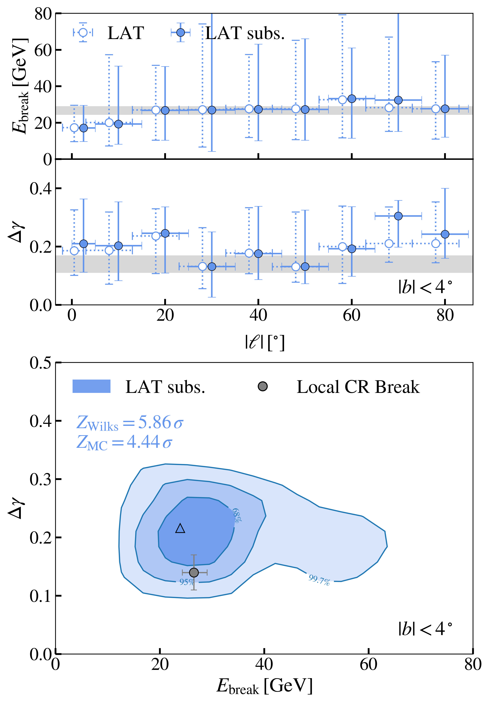
图注：\(\textit{Top panel:}\) Best-fit break energy $E_{\mathrm{break}}$ (top) and spectral-index change $\Delta\gamma$ (bottom) from SBPL parameterisation (Eq.~\ref{eq:sbpl}) inferred from \(\textit{Fermi}-LAT\) data. The gray band indicates the expectation from local CR measurements, assuming $E_\gamma \simeq 0.09\,E_p$. \(\textit{Bottom panel:}\) Global-fit confidence contours for a model with a common $E_{\mathrm{br}}$ and $\Delta\gamma$ across nine longitude windows. Confidence levels are constructed using Wilks' theorem from the profiled statistic $\Delta\chi^2_{\mathrm{prof}}$ and are shown for comparison with the local CR break. $Z_{\rm Wilks}$ and $Z_{\rm MC}$ denote the significance estimated via Wilks' theorem and MC realizations, respectively.
对应解读：对应“建议重点查看的图表”第3、4、7项，以及“关键图表逐图导读”中关于图4似然/Δχ²轮廓、图5空间一致性和与本地宇宙线数据对比的部分。
入选理由：这张图直接展示折断能量 \(E_break\)、谱指数变化 Δγ、九个经度窗口的共同拟合置信轮廓，以及与本地宇宙线测量预期的灰色带对比，是支撑论文核心结论“global cosmic-ray feature”和“与本地CR硬化一致”的最关键证据。它还给出 Wilks 与 MC 显著性信息，最贴合日报中关于 Δχ²/置信区间、空间一致性和 AMS-02 等本地宇宙线对比的重点。
来源与置信度：\(arxiv_source\)；high；\(arxiv_source\) / main.tex:figure[2]
Fig01
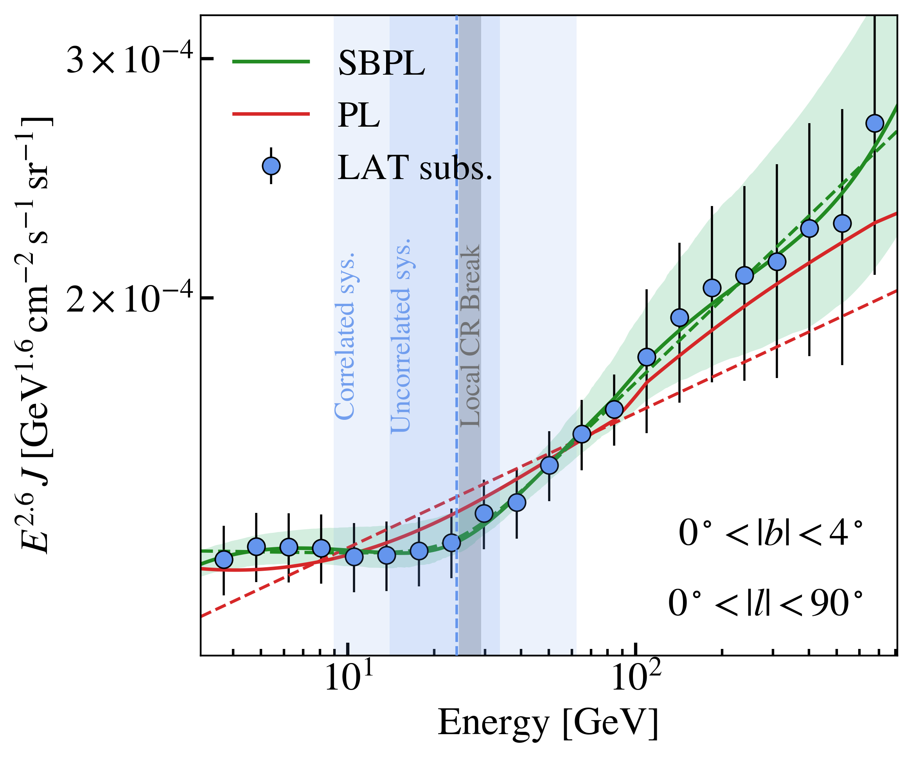
图注：\(\textit{Fermi}-LAT\) spectral energy distribution (SED) for $|b|<4^\circ$, averaged over $0<|l|<90^\circ$, after subtraction of the foreground components. Error bars combine statistical and effective-area systematic uncertainties in quadrature. The spectral break is clearly visible in the residual emission. The unbroken (PL; red), and smoothly broken (SBPL; green) power-law are shown, together with the 1$\sigma$ uncertainty band for the SBPL case. Dashed lines are the standard fits; solid lines are the fits obtained when the energy-correlated effective-area nuisance parameters are left free and set to their best-fit values. For completeness, we also show the energy band uncertainty without considering correlations.
对应解读：对应“建议重点查看的图表”第1、2、5项，以及“关键图表逐图导读”中关于银河盘γ射线能谱、无折断/带折断模型比较、误差条和相关系统误差处理的部分。
入选理由：这张图给出 Fermi-LAT 银河盘 SED，在 20–30 GeV 附近可直接查看谱折断，并同时叠加无折断 PL 与平滑折断 SBPL 模型、SBPL 的1σ不确定带，以及考虑或不考虑能量相关有效面积 nuisance 参数时的拟合结果。它最适合说明谱折断不是单纯视觉特征，而是在包含统计误差和有效面积系统误差后仍由带折断模型更好描述。
来源与置信度：\(arxiv_source\)；high；\(arxiv_source\) / main.tex:figure[1]
强相关工作
这篇工作直接连接两条文献线索：一条是本地直接宇宙线谱硬化，代表性实验包括 PAMELA、AMS-02、CREAM、DAMPE；另一条是 Fermi-LAT 对银河弥散 \(\gamma\) 射线和宇宙线梯度问题的长期研究。同类检索关键词可用“cosmic ray spectral hardening AMS-02 proton helium”、“Fermi-LAT diffuse gamma-ray Galactic plane cosmic-ray hardening”、“pion decay gamma rays cosmic ray propagation break”。
相反或竞争解释包括局部源模型、源注入谱折断模型、不同源族叠加模型，以及银河不同半径扩散性质变化模型。这篇论文若被后续确认，将削弱纯局部解释，但不必然排除源注入谱也有结构。建议检索“nearby source explanation cosmic ray hardening”、“spatially dependent diffusion gamma rays”、“Kolmogorov Kraichnan transition cosmic ray diffusion”。
由于本文不是单个瞬变或命名天体事件，而是银河盘弥散辐射和宇宙线全局特征研究，\(source_context_links\) 主要给出同类源、目录、综述和相关实验页面，而非同一事件链接。
同一事件 / 同类源线索：
相似工作：
基础理论 / 方法工作：
相反观点 / 张力线索：
4. The First Array-Wide Diffuse Flux Search for UHE Neutrinos with the Askaryan Radio Array
- 来源：arXiv / astro-ph.HE
- 链接：https://arxiv.org/abs/2608.30989v1
- 作者：Alan Salcedo-Gomez, Marco Stein Muzio, for the ARA Collaboration
- 评分：novelty 8/10，importance 8/10，relevance 9/10，final 9.35/10
- 推荐理由：First array-wide ARA diffuse UHE neutrino search with decade-scale livetime and improved detector/simulation framework; strongly relevant to high-energy neutrino astronomy and future radio arrays.
中文题目：ARA 阵列首次整体搜索超高能中微子弥散通量
做了什么：这篇文章报告 Askaryan Radio Array（ARA）首次把南极冰下 5 个台站作为一个统一阵列来做超高能中微子弥散通量搜索，数据覆盖 2013 年 1 月到 2023 年 12 月。目标是在几 EeV 以上寻找中微子诱发的 Askaryan 射电脉冲；方法上，作者把台站级触发、噪声、电子学、天线响应、中微子相互作用和带电轻子传播都纳入同一仿真与事件筛选框架。重要之处不只是多用数据，而是第一次用全阵列一致的背景抑制和 cut 优化来给出冰内射电探测器对弥散超高能中微子通量的最强检验之一。若没有候选事例，它将约束宇宙线源演化和宇宙成因中微子模型；若有候选事例，则可能是冰内射电阵列首次观测到超高能中微子。
为什么重要：EeV 以上中微子是检验最高能宇宙线起源、源环境光场和宇宙学传播的少数直接信使之一。ARA 已经积累了冰内射电阵列中很长的 livetime，但过去多是单台站或局部分析；这篇工作的关键是把十年量级数据、5 个独立台站和更新后的探测器模型整合起来，使曝光量、背景预期和通量上限可以在统一统计框架下解释。
理论 / 观测 / 仪器方法价值：对观测而言，它给出 ARA 阵列级弥散搜索的有效体积、选择效率、背景估计和候选事例判断路径；对方法而言，它把数据驱动噪声、电子学响应、天线响应修正和粒子传播模型更新合并到同一分析链。对未来仪器而言，它直接服务于 RNO-G 和 IceCube-Gen2 Radio 的 cut 设计、盲分析策略、系统误差预算和灵敏度预估。
为什么应该关注：如果你关心超高能宇宙线源、宇宙成因中微子、冰内射电探测技术，或下一代大体积中微子台阵，这篇文章都值得看。它不是单纯刷新一个上限，而是在回答：真实南极冰中十年级射电数据的背景能否被压到足够低、仿真能否可信地外推到 EeV 能段、以及现有 ARA 数据离发现或排除主流模型还有多远。
展开详细解读：文章讲解、背景、理论、重点章节、图表与相关工作
文章详细讲解
科学问题：本文面向的是超高能中微子弥散通量，即来自全天大量不可分辨天体源和宇宙线传播过程的总体中微子背景。EeV 能段的中微子数密度极低，但穿透力强，且与最高能宇宙线的产生和传播直接相关。ARA 的基本思路是利用南极冰作为巨大靶体：中微子在冰中相互作用产生强烈粒子簇射，带电粒子过剩通过 Askaryan 效应辐射出纳秒级、宽频射电脉冲。本文的核心问题是：把 ARA 十年数据和全部台站联合起来后，是否能看到候选中微子，或者给出几 EeV 以上最严格的冰内射电弥散通量限制。
作者怎么做：从摘要可知，文章使用 2013 年 1 月到 2023 年 12 月数据，覆盖 ARA 五个自治台站。每个台站有埋设到约 200 米深的接收天线，独立运行、独立触发、噪声环境和电子学状态也不同。因此阵列级分析并不是简单把事件列表相加，而是要建立统一的事件处理、背景拒绝、cut 优化和曝光量计算框架。作者还更新了探测器表征和仿真：包括数据驱动噪声模型、电子学模型、修订天线响应、更新中微子相互作用截面与带电轻子传播。
关键结果：摘要使用“expected either to identify ... or to set ... limits”的表述，说明 arXiv 摘要强调的是搜索框架和预期输出；在阅读正文时应确认最终是否开盲、是否存在候选事例、以及若无候选时给出的通量上限曲线。无论结果是哪一种，本文最关键的产物是阵列级有效曝光量和背景预期。若候选事例数与背景相容，统计结果通常会转化为能量相关的弥散通量上限；若出现不可由热噪声、连续波、人为活动或校准脉冲解释的事件，就需要通过波形一致性、重建方向、极化、深度和与外部瞬变目录的关联进一步判断。
局限和下一步：射电中微子搜索的限制主要来自三类系统误差：冰介质和射线追踪、天线与电子学响应、以及极低背景区的尾部分布外推。ARA 台站分散且年代跨度长，硬件状态、触发阈值、噪声温度、坏通道和校准覆盖不可能完全一致。下一步应包括公开更细的 livetime 分解、各台站单独与合并灵敏度、cut 稳健性、背景控制区验证，以及把这一经验迁移到 RNO-G 和 IceCube-Gen2 Radio 的统一分析框架中。
关键结果是怎么做出来的
本文的证据链首先从样本定义开始：数据来自 ARA 2013 年 1 月至 2023 年 12 月的五个台站，这是冰内射电阵列中非常长的 livetime。读者需要在正文中确认每个台站的有效运行时间、去除校准、维护、强连续波干扰和异常噪声时段后的 livetime，以及各台站硬件配置是否随年份变化。阵列级结果的可信度很大程度上取决于这些质量切分是否透明，因为 EeV 中微子候选预期数通常远小于常规触发总数。
事件筛选的关键不是触发数，而是从大量热噪声、人为射频干扰、校准脉冲和可能的表面事件中筛出纳秒级相干 Askaryan 脉冲。文章强调了统一事件处理和背景拒绝，因此重点应看它如何定义信号区和控制区：例如是否使用盲分析，是否在未开盲数据上只优化 cut，是否通过时间混合、边带、反向 cut 或模拟噪声估计背景尾部。若最终背景预期为 \(b\)，观测到候选数 \(n\)，那么发现显著性或上限都依赖 \(P(n\mid b)\) 及系统误差卷积，而不是单个漂亮波形。
模型比较方面，本文的核心诊断应包括信号效率与背景漏率的 trade-off。对弥散搜索，常见优化目标是最小化期望上限或最大化模型发现潜力，而不是追求最高重建质量。读者应寻找 cut 优化图、有效体积随能量变化曲线、各台站贡献表、背景预期表和最终候选事件表。如果文章给出无候选结果，关键数字应是 \(90\\%\) 置信度下的事件数上限 \(s_{90}\) 及其转化为通量上限的能量范围；如果给出候选，关键是该候选在所有质量变量上的位置是否落在预先定义的信号区。
系统误差方面，摘要明确列出了修订天线响应、数据驱动噪声与电子学模型、中微子相互作用和带电轻子传播更新。读者应检查这些更新是否只改变归一化，还是改变能量依赖和角度依赖。比如天线增益和冰衰减长度影响有效体积，中微子截面影响相互作用概率但也影响地球吸收，噪声模型影响触发效率和背景尾部。稳健性检验应包括逐台站结果、逐年结果、不同噪声状态下的效率、以及替代仿真模型下的通量上限变化。
支撑结论的图表应至少包括：阵列布设和数据 livetime 图、分析流程图、背景估计与 cut 优化图、模拟信号和数据控制样本在判别变量空间的分布、有效面积或有效体积随能量曲线、最终通量上限与模型比较图。若这些图之间的归一化或样本选择不一致，阵列级声明就会变弱；若逐台站贡献与硬件状态相符，并且背景边带能预测开盲区，则结果更可信。
展开背景、理论、公式、模型、章节和图表导读
背景知识
研究对象是 EeV 及以上超高能中微子。它们可能来自宇宙线在源内光场或气体中发生强子相互作用，也可能来自超高能宇宙线在传播中与宇宙微波背景或红外背景相互作用产生的所谓宇宙成因中微子。与 TeV 到 PeV 中微子相比，EeV 中微子的通量更低，但与最高能宇宙线的成分、最大加速能量和源演化关系更直接。
历史上，IceCube 已经发现了 TeV 到 PeV 天体中微子弥散通量，但 EeV 能段尚未有稳健的天体中微子发现。传统光学 Cherenkov 阵列在 EeV 能段有效体积不足，而射电探测利用 Askaryan 效应，可以用相对稀疏的天线监测巨大的冰体积，因此成为超高能中微子下一阶段的关键技术路线。ARA、ARIANNA、ANITA、RNO-G 和 IceCube-Gen2 Radio 都在不同几何和平台上探索这个方向。
ARA 位于南极，天线部署在冰下，目标是捕捉中微子诱发簇射在冰中产生的宽频、短时、相干射电脉冲。与气球实验 ANITA 相比，冰下台站的 livetime 可以长期积累，且本地噪声环境相对稳定；与表面阵列相比，深埋天线能降低表面人为背景和温度相关噪声。但深冰探测也对冰折射率模型、射线传播、天线方向响应和原位校准提出更高要求。
为什么现在值得重新看：ARA 已经积累了十年量级数据，且过去的探测器响应、噪声和粒子传播模型已有更新。随着 RNO-G 建设和 IceCube-Gen2 Radio 规划推进，旧数据的阵列级再分析不仅能刷新通量限制，也能暴露真实长期运行台阵中的系统误差来源。一次严格的阵列级 ARA 搜索可以成为未来射电中微子分析的试验场。
常见误区之一是把“有效体积很大”等同于“很容易发现中微子”。实际上，EeV 中微子通量模型差异可达数量级，且地球吸收、触发阈值、冰衰减和天线响应都会显著影响实际曝光量。另一个误区是认为射电脉冲只要足够亮就一定是信号；真实数据中热噪声涨落、连续波污染、校准脉冲、飞机或地面活动都可能产生复杂背景，必须通过盲分析和控制样本约束。
基础理论 / 方法脉络
基本物理图像是：高能中微子进入冰体后，通过带电流或中性流相互作用把一部分能量转移给强子和电磁簇射。簇射中正负电荷数不完全抵消，形成随时间快速发展的净负电荷团。当辐射波长大于或可比簇射横向尺度时，不同粒子辐射相干叠加，射电场强近似随簇射能量线性增长，这就是 Askaryan 效应。
ARA 的可观测量不是中微子本身，而是天线端接收到的电压波形。中微子能量、入射方向、相互作用顶点、簇射类型和冰内传播路径共同决定到达各天线的脉冲时间、极化、频谱和幅度。探测器链路还会把真实电场卷积上天线有效高度、放大器、滤波器、线缆和数字化响应，因此更新天线与电子学模型会直接改变信号效率和重建质量。
本文的分析假设应可概括为弥散、近似各向同性的超高能中微子通量，通过蒙特卡洛模拟计算在给定能量和方向下的探测概率。关键量包括有效面积或有效体积、livetime、信号选择效率、背景漏率、以及通量上限。因为不同 ARA 台站独立运行，阵列级曝光量需要按台站和时间段求和，而不能只用名义几何体积乘以总时间。
统计方法的核心是低计数泊松过程。对给定通量模型，预期信号数由通量、有效面积和 livetime 积分得到；观测到的候选数与预期背景共同决定发现显著性或排除上限。由于候选数可能是 \(0\)、\(1\) 或少数几个，系统误差的处理非常重要：背景尾部、信号效率、能标和响应函数的不确定性都应进入似然或通过 nuisance 参数传播。
主要 degeneracy 包括：天线增益与通量归一化退化、冰衰减长度与有效体积退化、噪声温度与触发效率退化、中微子截面与地球吸收退化。选择效应则包括触发阈值偏向高能近距离事件、几何布设偏向特定方向和顶点范围、以及强背景 cut 可能牺牲低信噪比信号。阅读本文时应特别关注作者如何用数据驱动模型缓解这些退化。
公式与推导
第一步，从弥散中微子通量定义开始。若单味或全味微分通量为 \(\Phi(E_\nu)\)，单位可理解为每能量、面积、时间、立体角的粒子数，则在能量区间和立体角内的入射数为
这里 \(E_\nu\) 是中微子能量，\(dA\) 是入射面积元，\(dt\) 是时间元，\(d\Omega\) 是立体角元。弥散搜索通常不假定单个源方向，而是对大范围天空积分。
第二步，中微子在冰中相互作用的概率由相互作用长度控制。对冰密度 (\
\(ho_{\rm ice}\))、阿伏伽德罗常数 \(N_A\)、中微子-核子截面 (\sigma_{\nu N}(E_\
u))，相互作用长度为
在路径长度 \(L\) 远小于或可比 \(\lambda_\nu\) 的冰体内，相互作用概率可写为 \(P_{\rm int}=1-\exp[-L/\lambda_\]\)
u])。这一步连接粒子物理截面与探测器靶质量。
第三步，高能中微子穿过地球时会被吸收。若沿弦路径的柱密度为 \(X(\theta)\)，其中 \(\theta\) 表示天顶角，则存活概率近似为
这说明更大的截面一方面提高冰中相互作用概率，另一方面增强地球吸收，因此 \(\sigma_{\nu N}\) 对接受度的影响不是简单线性。
第四步，Askaryan 信号的频域电场可用缩放关系理解。对簇射能量 \(E_{\rm sh}=yE_\nu\)，其中 \(y\) 是非弹性能量转移，距离观测点 \(R\) 处的电场幅度近似满足
这里 \(L_{\rm att}(\omega)\) 是频率相关冰衰减长度，\(F(\omega,\theta_{\rm view})\) 描述 Cherenkov 锥附近的角分布和频谱结构。该式说明能量、距离、冰吸收和观测角共同决定信号能否触发。
第五步，天线和电子学把电场变成电压。若天线有效高度为 \(h_{\rm eff}(\omega,\hat n, p)\)，电子学传递函数为 \(G(\omega)\)，则接收电压频谱可写成
其中 \(\hat n\) 是入射方向，\(p\) 是极化，\(n_\omega\) 是噪声。本文强调修订天线响应和数据驱动电子学模型，正是因为它们进入 \(V_\omega\) 的前向模型。
第六步，触发和筛选效率可写为对隐变量积分。给定 \(E_\nu\) 和方向 \(\Omega\)，有效面积满足
这里 \(dV\) 是可能相互作用体积元，\(\epsilon_{\rm trig}\) 是触发效率，\(\epsilon_{\rm sel}\) 是离线选择效率，\(W_{\rm geom}\) 表示几何投影和台站可见性权重。阵列级分析需要对台站和时间段分别计算该量。
第七步，预期信号数由曝光量积分得到：
其中 \(i\) 标记台站或稳定运行时期，\(T_i\) 是对应 livetime。这个公式是把模拟和观测结果转成通量限制或模型事件数的核心。
第八步，低计数统计通常采用泊松似然。若观测候选数为 \(n\)，预期背景为 \(b\)，信号为 \(\mu_s\)，则
实际分析还会把 \(b\)、效率和能标的不确定性作为 nuisance 参数引入，并通过剖面似然或边缘化处理。
第九步，若无显著候选，可用事件数上限转化为通量上限。对参考谱形 \(\Phi(E)=\Phi_0 f(E)\)，若 \(90\\%\) 置信度事件数上限为 \(s_{90}\)，则
这解释了为什么改进 \(A_{\rm eff}\)、增加 \(T_i\)、降低背景和提高效率都会改善上限。
第十步，若需要报告候选显著性，可用背景尾概率
或含系统误差的卷积形式来计算。这里 \(n_{\rm obs}\) 是开盲后候选数。该量可转换成等效高斯显著性，但在低背景、小样本情形下，读者应优先看原始 \(p\) 值、背景估计方法和试验因子。
模型拟合 / 应用方法
本文这类分析的“模型拟合”不一定表现为拟合一条天体光谱，而是表现为用前向模拟和数据控制样本拟合探测器响应、背景分布和信号选择效率。拟合量包括噪声功率谱、触发阈值、通道增益、时间延迟、天线方向响应、连续波污染特征、以及判别变量尾部。每一项都会影响最终的 \(A_{\rm eff}\)、背景预期 \(b\) 和信号事件数 \(\mu_s\)。
参数估计常用混合策略：探测器响应部分依赖校准脉冲和实验室测量，噪声与背景部分依赖真实数据边带，信号接受度依赖蒙特卡洛。似然可以是波形级的，也可以是最终计数级的。阵列级搜索尤其需要把不同台站、不同年份的 nuisance 参数分开处理，否则会把某一阶段的好状态错误推广到整个十年数据。
残差诊断应从控制区开始看。比如模拟热噪声的触发率是否复现真实数据，校准脉冲重建方向是否无偏，连续波过滤后频谱残差是否稳定，背景判别变量尾部是否能由边带预测。若控制区残差在接近 cut 边界处变大，那么即使最终无候选，通量上限也可能过于乐观；若候选事件靠近被屏蔽频段、坏通道或强人类活动时段，则需要极其谨慎。
主要退化包括响应归一化与通量归一化、冰模型与重建顶点、噪声温度与低能效率、截面与地球吸收。对于弥散谱形，能量重建往往较弱，许多结果以能量积分上限或准微分上限给出；这意味着读者不能把上限曲线每个能点理解为独立测量。若论文比较多个宇宙成因模型，应检查它是用同一曝光量积分模型谱，还是只用图上曲线做视觉比较。
模型可能失败的场景包括：背景尾部非平稳、罕见人为脉冲未被控制区捕获、天线响应在实冰环境中与实验室测量不一致、冰内双折射或层状结构导致射线追踪偏差、以及 tau 轻子传播在高能端的模型差异。实际应用中，这篇文章的价值在于把这些误差以阵列级方式整理出来，为未来更大规模射电阵列设定分析基线。
重点章节 / 结果段落怎么读
-
数据与探测器章节：优先阅读台站布设、天线深度、运行年份、livetime、坏通道和数据质量 cut。阵列级结果是否可信，首先取决于每个台站和年份的有效曝光是否定义清楚。读者应记录各台站是否同质，以及哪些时期被剔除。
-
仿真与探测器响应章节：这是本文相对旧 ARA 分析的核心增量。重点看数据驱动噪声、电子学响应、修订天线响应、中微子相互作用和带电轻子传播模型如何进入模拟链。不要只看最终灵敏度曲线，应追踪这些更新分别改变了效率、能量阈值还是角度接受度。
-
事件重建与背景拒绝章节：重点看波形清理、连续波过滤、脉冲相干性、方向或顶点重建、表面事件 veto、校准事件剔除和盲分析策略。这里决定候选事件是否真能与热噪声和人为背景区分。
-
Cut 优化与统计解释章节：重点看优化目标是期望上限、发现潜力还是固定背景漏率。记录最终背景预期、信号效率、系统误差以及是否对多台站、多年份、多 cut 尝试做了试验因子或盲分析保护。
-
结果与模型比较章节：若无候选，读最终 \(90\\%\) 置信度通量上限曲线、与 IceCube、ANITA、Auger、ARA 旧结果和模型曲线的比较；若有候选，读候选事件表、波形、重建方向、极化、频谱、环境状态和事后检验。讨论章节应说明结果对 RNO-G 和 IceCube-Gen2 Radio 的具体方法启示。
建议重点查看的图表
-
阵列布局与 livetime 图：看五个台站位置、天线深度、各年份有效 livetime，以及数据质量剔除比例。阵列级搜索最怕名义 livetime 与可用 livetime 混淆。
-
探测器响应或校准对比图：看校准脉冲在数据和仿真中的波形、幅度、频谱和到达时间残差。修订天线与电子学模型是否真的改善数据-模拟一致性，应由这类图支撑。
-
背景判别变量分布图：看热噪声、控制区数据、模拟信号在相干性、脉冲性、重建质量或频谱变量上的分离。尤其要看 cut 附近的尾部分布，而不只是峰值区域。
-
Cut 优化或信号效率-背景漏率曲线：看最终 cut 是否接近期望上限最优点，是否逐台站分别优化，是否有过拟合风险。若信号效率突然下降，应追问牺牲了哪个能区或方向。
-
有效面积、有效体积或曝光量随能量曲线：看几 EeV 以上灵敏度从何处开始上升，各台站贡献是否合理，系统误差带是否随能量扩大。
-
最终候选事件表或开盲结果图：看 \(n_{\rm obs}\)、\(b\)、\(s_{90}\) 或候选事件质量变量。若出现候选，必须检查波形、频谱、方向和环境 veto。
-
通量上限与模型比较图：看 ARA 阵列级结果相对旧 ARA、ARIANNA、ANITA、IceCube、Auger 的位置，以及对强源演化 cosmogenic 模型是否有排除能力。
关键图表逐图导读
图 1：通常应是 ARA 台站布局、天线配置或数据集概览。横纵坐标可能是南极局部坐标、台站相对位置或年份与 livetime。读图时看五个台站是否全部纳入最终分析、哪些时期贡献最大、以及是否存在明显运行空档。陷阱是把部署年份当成有效 livetime；真正有用的是质量 cut 后的 live exposure。
图 2：建议重点看探测器响应校准图。坐标轴可能是频率与增益、时间残差、波形幅度或数据/仿真比值。数据点应来自校准脉冲或环境噪声，模型线来自更新后的天线和电子学响应。主要结论应是新版模型能否在关键频段复现实测响应；读图陷阱是平均响应很好但个别通道或方向残差很大。
图 3：背景与信号判别变量分布图。横轴可能是相干性、脉冲性、重建相关系数或某个机器/手工判别量，纵轴是事件数或归一化概率密度。应比较控制区数据、背景模型和模拟中微子。关键是最终 cut 线附近背景尾部是否由数据约束；不要被对数纵轴下的视觉分离误导。
图 4：cut 优化图或二维信号区图。横纵坐标可能是两个最终判别变量，模拟信号以颜色或等高线表示，背景控制样本为散点。读者应看信号区是否预先定义、背景外推是否跨越太远、以及候选事件若存在是否位于高信号效率区域而不是 cut 边缘。
图 5：有效面积、有效体积或曝光量曲线。横轴通常为 \(E_\nu\)，纵轴为 \(A_{\rm eff}\)、\(V_{\rm eff}\Omega\) 或曝光量。不同颜色可能代表台站、年份或系统误差上下限。主要结论是 ARA 阵列在哪个能区最敏感；读图陷阱是忽略谱形权重，因为宽能段曝光不等于对所有模型同等敏感。
图 6：最终通量限制图。横轴为 \(E_\nu\)，纵轴通常为 (E_\
u^2\Phi(E_\
u))。数据/模型线包括本文 ARA 阵列级上限、旧实验上限和若干宇宙成因模型。应看系统误差带、置信度定义和单味/全味约定。陷阱是把准微分上限当作实际测量点，或忽略不同实验能量响应宽度。
论文原图 / 可嵌入图片
Fig03
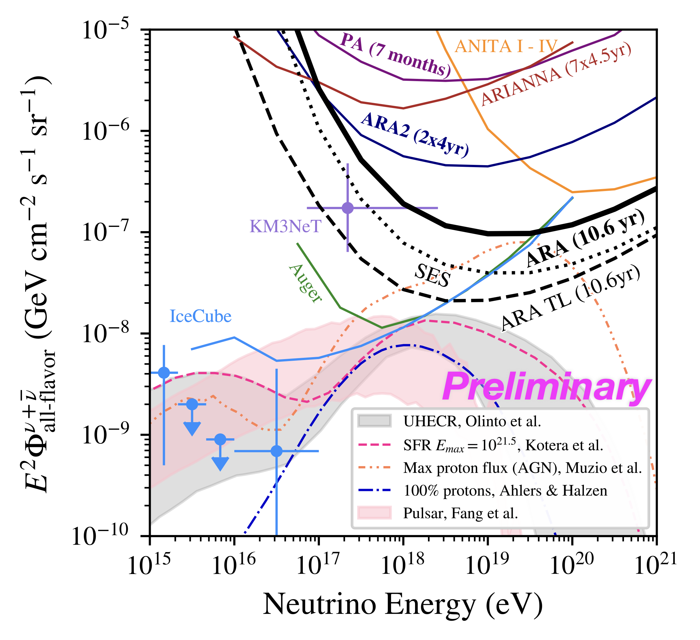
图注：Upper limit on the diffuse UHE neutrino flux set by this analysis (bold black line). The analysis-level single event sensitivity (SES) and trigger-level (TL) upper limit are shown for reference. Flux measurements and constraints from other experiments and previous ARA searches, along with model predictions, are also shown.
对应解读：对应“建议重点查看的图表”第7项“通量上限与模型比较图”，以及“关键图表逐图导读”中的图6/最终通量限制图。
入选理由：这是本文核心科学结论图：给出本次阵列级分析得到的弥散超高能中微子通量上限，并与旧 ARA、其他实验约束和理论模型比较。它直接支撑日报中关于几 EeV 以上灵敏度、是否达到最严格限制、以及对宇宙成因模型排除能力的解读，比布局或配置图更能体现最终物理结果。
来源与置信度：arxiv_source；high；arxiv_source / main.tex:figure[3]
Fig02
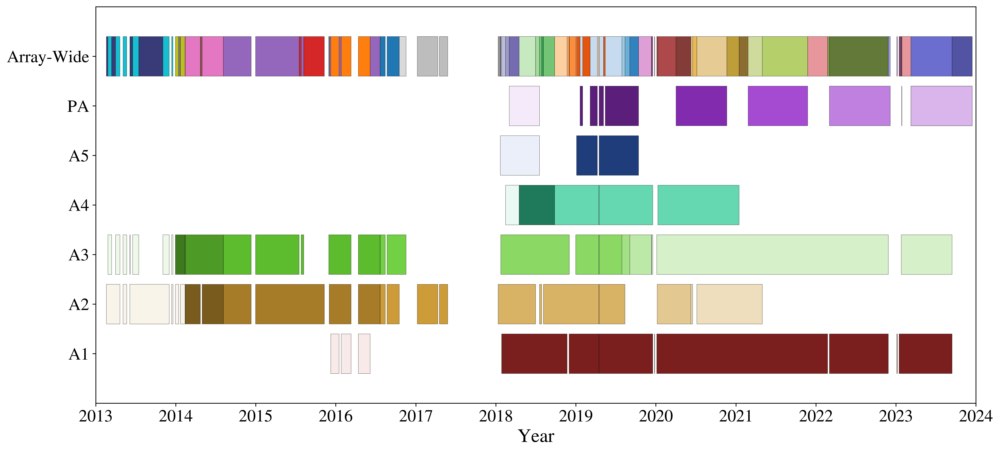
图注：ARA detector configurations from January 2013 to December 2023. The lower rows show the station-level configurations of A1--A5 and the PA, while the top row shows the corresponding array-wide configurations. Repeated colors in a row denote the same configuration.
对应解读：对应“建议重点查看的图表”第1项“阵列布局与 livetime 图”中关于各年份、各台站运行状态和阵列级数据集构成的部分，也支撑“详细解读”中十年五台站联合分析的说明。
入选理由：该图展示 2013–2023 年 A1–A5 与 PA 的探测器配置变化，是理解阵列级分析为何需要分台站、分年份处理 nuisance 参数和曝光量的关键图。虽然 caption 未直接给出质量 cut 后 livetime，但它能说明不同阶段硬件配置并非恒定，避免把十年数据简单视为均一曝光。
来源与置信度：arxiv_source；high；arxiv_source / main.tex:figure[2]
Fig01
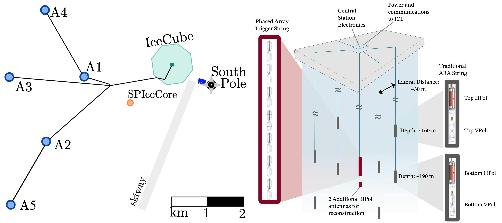
图注：ARA's array layout (left) and station layout (right), shown for station A5. Each ARA station has four holes drilled into the ice and instrumented with radio antennas (shown in grey). A5 additionally has the phased array (PA) detector string (shown in red) deployed in the center of the four outer strings. A1--A3 have an installed lateral distance baseline of 14~m.
对应解读：对应“建议重点查看的图表”第1项“阵列布局与 livetime 图”，以及“关键图表逐图导读”中的图1：ARA 台站布局、天线配置或数据集概览。
入选理由：该图给出 ARA 阵列总体位置关系和单站天线布设，包括 A5 的 phased array 字符串，有助于读者理解南极冰中射电阵列的几何结构、台站独立运行和不同探测器子系统的物理含义。它对实验方法解释很有价值，但不直接展示最终背景、效率或通量限制，因此排序低于 Fig03 和 Fig02。
来源与置信度：arxiv_source；high；arxiv_source / main.tex:figure[1]
强相关工作
这篇工作属于同类源/同类技术背景下的超高能中微子弥散搜索。应与 ARA 早期单台站或部分台站搜索、ARIANNA 南极表面射电阵列搜索、ANITA 气球实验的超高能中微子限制、IceCube EeV 搜索、Pierre Auger Observatory 的下行和地球掠射 tau 中微子限制一起比较。检索关键词可用“ARA diffuse UHE neutrino search”、“Askaryan Radio Array neutrino flux limit”、“ARIANNA UHE neutrino limit”、“ANITA ultrahigh energy neutrino limit”、“IceCube cosmogenic neutrino search”、“Auger neutrino limit”。
基础理论方面，应追溯 Askaryan 效应、冰中射电传播、宇宙成因中微子和最高能宇宙线组成模型。相反或张力观点主要来自宇宙线组成和源演化的不确定性：若最高能宇宙线以重核为主或源演化较弱，EeV 中微子通量可能远低于当前射电阵列灵敏度；若强源演化或高最大刚度质子成分占优，则 ARA 阵列级上限可能已经开始切入模型空间。检索关键词可用“cosmogenic neutrino proton composition”、“UHECR composition cosmogenic neutrino flux”、“radio detection neutrinos Askaryan review”。
同一事件 / 同类源线索：
相似工作：
- https://arxiv.org/abs/1906.01670
- https://arxiv.org/abs/1512.01125
- https://arxiv.org/abs/1803.02719
- https://arxiv.org/abs/1504.05397
基础理论 / 方法工作：
- https://doi.org/10.1016/0029-5582(62)90765-8
- https://arxiv.org/abs/astro-ph/9807282
- https://arxiv.org/abs/1105.2854
相反观点 / 张力线索：
5. ALMA Observations of DEM L241/LMC P3 in the Large Magellanic Cloud: Evidence for the Formation of Cool Molecular Jets Driven by a Microquasar
- 来源：arXiv / astro-ph.HE
- 链接：https://arxiv.org/abs/2608.30489v1
- 作者：Yasuo Fukui, Bhuvana G. R., Hidetoshi Sano, Kisetsu Tsuge, Rami Z. E. Alsaberi, Rin Yamada, Yuya Asano, Aya Bamba
- 评分：novelty 8/10，importance 8/10，relevance 9/10，final 9.35/10
- 推荐理由：ALMA evidence for cool molecular jets driven by the gamma-ray binary/microquasar LMC P3; connects sub-mm diagnostics to gamma-ray source origin and microquasar discovery.
中文题目：ALMA 对大麦哲伦云 DEM L241/LMC P3 的观测：微类星体驱动冷分子喷流形成的证据
做了什么：这篇文章用 ALMA 的 CO 分子谱线观测研究大麦哲伦云中的 γ 射线双星 DEM L241/LMC P3。作者在该源附近发现一条长约 \(8\,{\rm pc}\)、宽约 \(1\,{\rm pc}\) 的单侧喷流状 CO 结构，并可能存在第二条较弱、方向略有不同的 CO 喷流候选体。该 CO 结构在天空投影上与 LMC P3 明显对齐，且其气体动温度约为 \(33\)--\(60\,{\rm K}\)，显著高于邻近非喷流分子云的约 \(15\,{\rm K}\)。作者认为，这种高温且缺少明显辐射加热源的分子气体，更自然地解释为微类星体喷流冲击周围星际介质后形成的冷分子喷流。
为什么重要：LMC P3 是目前已知最亮的 γ 射线双星之一，但其高能辐射究竟来自脉冲星风相互作用，还是来自吸积盘和相对论性喷流，一直是关键问题。若 CO 喷流确实由该系统驱动，它将为“吸积—喷流”图像提供一个几乎独立于 X 射线和 γ 射线谱拟合的环境证据。更重要的是，冷分子气体通常不被视为寻找微类星体喷流的首要示踪物，因此这项工作把亚毫米分子谱线观测引入高能双星研究。
理论 / 观测 / 仪器方法价值：本文的价值在于把 ALMA 的高空间分辨率 CO 谱线数据、分子气体温度诊断和微类星体喷流—星际介质相互作用模型联系起来。对理论而言，它提供了检验磁流体数值模拟中“喷流压缩并加热分子云、形成狭长 CO 结构”的观测对象。对观测而言，它提示 CO 形态、速度结构和激发温度可以作为寻找隐藏微类星体的辅助方法。对方法而言，它展示了如何从冷分子气体而非直接高能辐射，反推紧致双星是否存在喷流反馈。
为什么应该关注：如果你关心 γ 射线双星的能量来源、微类星体反馈、或喷流与多相星际介质相互作用，这篇文章都值得看。它不是又一次给 LMC P3 做宽波段能谱拟合，而是提出了一个可用 ALMA 直接检查的环境证据链：位置对齐、喷流状形态、异常高温、无明显辐射加热源，以及与数值模拟形态相符。即使最终解释仍需更高灵敏度和多谱线确认，它也给出了一个很有操作性的想法：冷分子气体可能记录了高能双星喷流的机械作用。
展开详细解读：文章讲解、背景、理论、重点章节、图表与相关工作
文章详细讲解
科学问题：DEM L241/LMC P3 是位于大麦哲伦云中的高质量双星系统，包含一颗 O 型星和一个紧致天体，并且是极亮的 \(\gamma\) 射线源。长期争论在于，LMC P3 的高能辐射是否主要来自年轻脉冲星风与恒星风的碰撞，还是来自紧致天体从 O 星风中吸积后形成的微类星体喷流。前者不必要求持续吸积盘，后者则预言应有准直外流对周围介质产生机械反馈。本文抓住的核心问题是：在这个系统附近，是否能找到喷流与星际分子气体相互作用的直接环境痕迹。
作者怎么做：作者使用 ALMA 观测 CO 分子谱线，重点寻找 LMC P3 周围的冷分子气体形态、速度和激发状态。他们在 CO 发射中识别出一条长约 \(8\,{\rm pc}\)、宽约 \(1\,{\rm pc}\) 的单侧狭长结构，并指出该结构与 LMC P3 的位置呈现显著对齐。此外，数据中还有另一条更弱、方向略有差异的 CO 喷流候选体。作者比较喷流状区域与邻近普通分子云的 CO 谱线性质，推断喷流状气体的动温度约为 \(33\)--\(60\,{\rm K}\)，而附近非喷流云仅约 \(15\,{\rm K}\)。
关键结果：最重要的观测结果不是单一的“看到一条丝状云”，而是多条证据同时指向受喷流影响的分子气体。第一，CO 结构呈细长准直形态，尺度达到数秒差距，宽度约为长度的八分之一。第二，它的长轴方向与 LMC P3 对齐，源位于几何上合理的驱动位置附近。第三，喷流状 CO 的温度显著偏高，且没有找到足以解释该加热的明显辐射源。第四，作者将这种形态与已有微类星体喷流撞击环境分子云的磁流体模拟相比较，认为观测到的 CO 喷流可由高速喷流压缩、加热并拖曳周围分子气体形成。
局限和下一步：本文的解释依赖形态对齐、温度异常和理论相似性，但真正要把“CO 喷流”与“LMC P3 喷流”锁定，还需要更多运动学证据。例如，高分辨率速度场是否显示沿喷流轴的系统性加速或冲击展宽？多条 CO 转动跃迁、\({}^{13}{\rm CO}\)、\({\rm C}^{18}{\rm O}\)、\({\rm HCO}^{+}\)、\({\rm SiO}\) 等冲击示踪线是否给出一致的密度和温度？喷流年龄、动能和 LMC P3 可提供的机械功率是否在数量级上闭合？下一步应结合更深 ALMA 多谱线观测、X 射线和射电连续谱喷流搜索，以及三维磁流体模拟的合成观测来检验这个图像。
关键结果是怎么做出来的
本文最重要的证据链从 ALMA CO 数据中的空间结构开始。样本不是大规模巡天统计，而是对单个已知高能源 DEM L241/LMC P3 的定向观测。作者在目标场中搜索与 LMC P3 相关的分子气体，识别出一条约 \(8\,{\rm pc}\) 长、\(1\,{\rm pc}\) 宽的单侧 CO 喷流状特征，并记录另一个较弱、方向略不同的候选结构。这里的“事件数”不是瞬变事件计数，而是空间—速度数据立方体中的显著发射结构数、其像素连续性、速度通道连续性和与目标源的几何关系。
显著性判断主要来自形态和物理一致性，而非一个简单的 \(p\) 值。读者应关注论文中 CO 积分强度图、通道图和位置—速度图是否显示喷流结构在多个速度通道中连续存在，而不是噪声峰或成图伪影。还要看作者是否把喷流候选体与邻近分子云、ALMA 主波束响应、缺失短间距造成的过滤效应区分开来。若喷流只在少数通道或边缘灵敏度区域出现，结论会变弱；若它在空间和速度上都连贯，证据会更强。
温度结果是第二个关键环节。作者给出喷流状 CO 的动温度约 \(33\)--\(60\,{\rm K}\)，而附近非喷流云约 \(15\,{\rm K}\)。这个比较比绝对温度值更关键，因为 CO 激发分析通常受光学深度、束填充因子、局域热平衡假设和同位素丰度影响。读者应检查作者如何从谱线强度或线比得到温度，是否采用了局域热平衡近似，是否比较了同一数据集内相邻区域以减小校准系统误差。
模型比较方面，作者把三类解释放在一起权衡：普通分子云偶然投影、外部辐射源加热、以及微类星体喷流冲击。普通云解释难以同时解释准直形态、与 LMC P3 对齐和高温；辐射加热解释需要附近有足够强的紫外或红外加热源，但摘要指出没有发现明显辐射热源；喷流冲击解释则自然给出狭长形态、局部加热和与紧致双星对齐。因此本文的统计逻辑更接近“多观测约束下的物理可然性比较”，而不是单一参数显著性检验。
支撑结论的图表应包括：CO 积分强度图显示喷流几何；速度通道图显示结构是否在速度空间连续；谱线剖面或位置—速度图显示运动学异常；温度或线比图显示喷流区比背景云更热；以及与 LMC P3、DEM L241 壳层、X 射线或 γ 射线位置叠加的多波段图。主要系统误差包括 ALMA 缺失短基线导致的扩展发射过滤、CO 光学厚度导致柱密度和温度偏差、LMC 视线中复杂云结构的投影混淆，以及喷流年龄和速度未知导致的能量预算不确定。
展开背景、理论、公式、模型、章节和图表导读
背景知识
LMC P3 是大麦哲伦云中一个非常特殊的高能双星系统，位于超新星遗迹或星云复合体 DEM L241 附近。它包含一颗大质量 O 型星和一个紧致天体，观测上具有周期性高能辐射，被归类为 \(\gamma\) 射线双星。与银河系中的 LS 5039、LS I \(+61^{\circ}303\)、PSR B1259\(-63\) 等对象类似，LMC P3 的关键问题是紧致天体到底是年轻脉冲星还是吸积黑洞或中子星。
\(\gamma\) 射线双星领域长期存在两种基本图像。脉冲星风模型认为，高能辐射来自相对论性脉冲星风与大质量恒星风的碰撞，非热粒子在冲击区产生同步辐射和逆康普顿辐射。微类星体模型则认为，紧致天体从伴星风或溢流物质中吸积，形成吸积盘和喷流，高能辐射由喷流或喷流—风相互作用产生。仅凭高能光变和能谱，两个模型有时很难完全区分。
这篇文章把问题转移到周围星际介质。若 LMC P3 具有机械功率可观的喷流，那么喷流不只会产生非热辐射，也会撞击、压缩、加热和扰动周围气体。在有分子云的环境中，喷流可能诱导冷分子气体形成狭长结构，或者在冲击后使 CO 激发温度升高。这种环境反馈的时间尺度可比瞬时高能辐射更长，因此可能记录系统过去的平均喷流活动。
为什么现在值得重新看？一方面，ALMA 具有足够高的角分辨率和灵敏度，可以在 LMC 距离上分辨几秒差距尺度的分子结构；另一方面，微类星体喷流与多相星际介质相互作用的数值模拟已经能预言 CO 形态和温度特征。观测能力和理论合成图像都到了可以比较的阶段。
该领域常见误区是把“看到细长分子云”直接等同于“看到喷流”。事实上，湍流、壳层膨胀、恒星风泡、超新星遗迹冲击、甚至视线投影都可能产生丝状 CO 结构。另一个误区是认为冷分子气体不可能与相对论喷流有关；实际上喷流本身很热且快，但它可以通过冲击和剪切作用重塑周围较冷的分子云，观测到的 CO 并不是喷流等离子体本体，而是被喷流塑形的环境气体。
基础理论 / 方法脉络
基本物理图像是：紧致天体若从 O 型星风中吸积，可能形成吸积盘，并沿旋转轴发射准直喷流。喷流携带动量、能量和磁场，在穿过周围星际介质时形成弓形激波、 cocoon 或湍动混合层。若喷流撞上已有分子云，它可以压缩较冷气体、增强 CO 发射，并通过冲击耗散把气体从典型暗云温度加热到几十开尔文。
CO 是冷分子气体最常用的示踪线之一。\({}^{12}{\rm CO}\) 的低阶转动跃迁容易被激发，但也常常光学厚；\({}^{13}{\rm CO}\) 或更高阶跃迁可帮助约束光学深度、柱密度和激发温度。本文关心的核心量包括 CO 积分强度、谱线中心速度、线宽、空间长宽比、与 LMC P3 的方位角对齐，以及由线强或线比推断的动温度。
若气体处于近似局域热平衡，转动态粒子数由激发温度描述；若密度不足以热化，非局域热平衡效应会让同一线比对应多组密度和温度。这就是分子谱线诊断中的典型退化：温度、密度、柱密度、光学厚度和束填充因子会彼此补偿。因此，本文中喷流区比邻近非喷流云更热的相对比较，比单独给出绝对温度更有说服力。
形态诊断同样需要小心。ALMA 干涉阵可能过滤大尺度弥散发射，使剩余图像更偏向紧凑或丝状结构；主波束校正会在边缘放大噪声；不同速度分量在 LMC 视线中可能投影重叠。可靠的喷流解释应要求 CO 结构在多个速度通道连续、与候选驱动源几何相关、温度或线宽异常，并且不能被已知恒星形成区或辐射源轻易解释。
本文使用的理论假设可概括为：LMC P3 若是微类星体，其喷流可在若干秒差距尺度内向周围分子云输入机械能；观测到的 CO 丝状结构不是相对论喷流本身，而是被喷流冲击和塑形后的冷分子气体。这个框架的关键可检验预言包括喷流轴向准直、局部升温、可能的速度扰动、冲击示踪分子增强，以及动能需求不超过系统长期可提供的喷流功率。
公式与推导
第一步从双星风吸积的数量级估计开始。若紧致天体质量为 \(M_{\rm X}\)，相对恒星风速度为 \(v_{\rm rel}\)，局部风密度为 \(\rho_{\rm w}\)，Bondi-Hoyle-Lyttleton 吸积率可写作
其中 \(G\) 是引力常数，\(c_{\rm s}\) 是风中声速。这个式子说明，只要 O 星风在紧致天体轨道处提供足够密度，吸积盘和喷流就可能有机械能来源。
第二步把吸积转为喷流功率。若喷流机械效率为 \(\eta_{\rm j}\)，则
其中 \(c\) 是光速。本文并不需要精确知道 \(P_{\rm j}\)，但需要判断它是否足以加热和推动长度为数秒差距的 CO 结构。
第三步估计被扰动分子气体的质量。对 CO 观测，常用经验转换为
其中 \(N_{\rm H_{2}}\) 是分子氢柱密度，\(W_{\rm CO}=\int T_{\rm mb}(v){\rm d}v\) 是 CO 积分强度，\(X_{\rm CO}\) 是 CO 到 \({\rm H}_{2}\) 的转换因子。LMC 的金属丰度低于银河系，因此 \(X_{\rm CO}\) 可能不同，这是质量估计的重要系统误差。
第四步由柱密度积分得到气体质量：
其中 \(\mu\) 是包括氦在内的平均分子量，\(m_{}\)
m H}) 是氢原子质量，\(D\) 是 LMC 距离，\(\Omega\) 是喷流状结构的角面积。这个式子把 ALMA 的表面亮度结构转化为喷流可能作用过的分子气体总量。
第五步估计冲击或湍动运动的动能：
其中 \(\Delta v\) 可取相对于环境云的速度偏移或非热线宽的量级。若 \(E_{}\)
m kin}) 除以喷流年龄得到的功率小于合理的 \(P_{\rm j}\)，微类星体解释在能量上就是可行的。
第六步描述分子气体温度诊断。若近似局域热平衡，转动能级布居满足
其中 \(N_{u}\) 是上能级柱密度，\(g_{u}\) 是统计权重，\(N_{}\)
m tot}) 是总 CO 柱密度，(Q(T_{
m ex})) 是配分函数，\(E_{u}\) 是上能级能量，\(k\) 是玻尔兹曼常数，\(T_{\rm ex}\) 是激发温度。多跃迁线比可由此约束温度，但光学深度和密度会引入退化。
第七步写出辐射转移中的亮温关系：
其中 \(J_{\nu}(T)=h\nu/k[\exp(h\nu/kT)-1]^{-1}\)，\(T_{\rm bg}\) 是背景温度，\(\tau_{\nu}\) 是光学深度，\(f_{\rm b}\) 是束填充因子。这个式子解释了为什么仅凭一条 \({}^{12}{\rm CO}\) 强线很难唯一确定真实温度。
第八步用冲击加热的能量方程联系观测到的高温：
其中 \(n\) 是气体数密度，\(T_{\rm jet}\) 和 \(T_{\rm cloud}\) 分别是喷流状气体和普通云的温度，\(\epsilon_{\rm th}\) 是冲击动能转化为热能的效率，\(\rho\) 是被冲击气体密度，\(v_{\rm s}\) 是冲击速度。本文报告的 \(33\)--\(60\,{\rm K}\) 对比 \(15\,{\rm K}\) 正是这一诊断的观测入口。
第九步是形态显著性的统计表述。可把喷流模型 \({\cal M}_{\rm jet}\) 与随机云模型 \({\cal M}_{\rm cloud}\) 的数据似然比写作
其中 \(I\) 表示 CO 强度图，\(v\) 表示速度场，\(T\) 表示温度诊断，\(\theta\) 表示与 LMC P3 的方位角和位置关系。虽然本文主要是观测解释而非完整贝叶斯模型比较，这个式子说明了证据来自强度、速度、温度和几何的联合约束。
模型拟合 / 应用方法
这类 ALMA 分子谱线工作首先要拟合的是每个空间像素或选区中的 CO 谱线。常见做法包括高斯分解，得到谱线峰值亮温、中心速度、速度弥散和积分强度。对于喷流状结构，读者应特别关注线宽是否比背景云更大，中心速度是否沿喷流方向有梯度，以及是否存在多个速度成分叠加造成的假宽线。
温度和柱密度估计通常需要辐射转移模型。若只有少数 CO 线，作者可能采用局域热平衡或简化线比诊断；若有多跃迁和同位素线，则可用非局域热平衡模型如 LVG 或 RADEX 类方法拟合 \(T_{\rm kin}\)、\(n_{\rm H_{2}}\)、\(N_{\rm CO}\) 和 \(\tau\)。这些参数之间强烈退化：较高温度加较低密度可能产生与较低温度加较高密度类似的线比；束填充因子也会改变亮温解释。
几何模型拟合则关注喷流候选体的长度、宽度、位置角和与 LMC P3 的偏移。一个理想的检验是把喷流轴线拟合为直线或轻微弯曲轨迹，然后计算 LMC P3 到该轴线的垂直距离是否小于结构宽度和定位误差。还可比较随机放置同样数量丝状云时与 LMC P3 对齐的概率，不过摘要未说明本文是否做了严格的随机化检验。
系统误差是解释强度的关键。ALMA 的短间距缺失会影响扩展 CO 发射，使得云边缘或丝状残余被突出；通量校准误差会传播到温度和质量；LMC 中复杂的速度场会导致不同云在视线方向重叠；DEM L241 的壳层、恒星风泡或早期超新星活动也可能扰动分子气体。稳健的结论需要在不同成图权重、速度积分范围、背景扣除方式和区域定义下保持。
实际应用上，本文提出的拟合框架可以推广到其他高能双星和微类星体候选体：先用高能或射电目录选源，再用 ALMA 或其他毫米阵列检查周围 CO 是否存在准直、热化异常的分子结构。若配合冲击示踪线和高分辨率连续谱喷流观测，这种方法可能成为寻找隐藏吸积系统的环境筛选工具。
重点章节 / 结果段落怎么读
-
数据/观测设置：读者应先看 ALMA 观测的谱线、角分辨率、速度分辨率、灵敏度和覆盖区域。关键问题是 \(8\,{\rm pc}\) 长、\(1\,{\rm pc}\) 宽的结构是否被充分采样，主波束边缘和缺失短间距是否影响结论。
-
CO 形态结果：重点阅读积分强度图、通道图和喷流候选体的定义。需要确认作者如何划定单侧 CO 喷流、如何识别第二条较弱候选体，以及这些结构相对于 LMC P3、DEM L241 和附近普通分子云的位置关系。
-
温度和物理条件分析：这一部分决定“冲击加热”是否成立。读者应查看作者如何从 CO 数据推断 \(33\)--\(60\,{\rm K}\) 的动温度，以及邻近非喷流云的 \(15\,{\rm K}\) 是如何作为对照样本选取的。
-
喷流驱动解释：这里应关注作者如何排除辐射加热和普通云投影，如何把观测到的 CO 结构与微类星体喷流—分子云相互作用模拟相联系。不要只看结论句，要看能量、几何和温度三者是否一致。
-
讨论和展望：最后看作者对 LMC P3 高能辐射起源的推论是否过度。CO 喷流支持吸积和喷流模型，但并不自动排除所有脉冲星风模型；真正的区分还需要射电喷流、轨道相位相关吸积迹象或更直接的紧致天体性质约束。
建议重点查看的图表
-
CO 积分强度总图：看喷流状结构是否真的细长、连续，并与 LMC P3 位置对齐；注意主波束边缘和噪声水平。
-
速度通道图：检查 CO 喷流是否在多个相邻速度通道中存在，而不是单通道噪声或成图伪影。
-
位置—速度图：看沿喷流轴是否有速度梯度、线宽增强或相对于背景云的偏移，这是动力学关联的关键。
-
CO 谱线剖面对比图：比较喷流区与非喷流云的峰值、线宽和多速度成分；注意宽线是否可能由多个窄成分叠加。
-
温度或线比图：检查 \(33\)--\(60\,{\rm K}\) 高温区域是否空间上对应喷流结构，而不是由局部强辐射源或噪声放大造成。
-
多波段叠加图：看 CO 喷流与 X 射线、射电、红外、恒星分布和 DEM L241 壳层的相对位置，以评估替代加热源。
-
模拟对比图或示意图：检查观测形态与微类星体喷流撞击分子云模拟的相似性是否具体到长宽比、弯曲、温度和速度，而不仅是视觉类比。
关键图表逐图导读
图 1：建议把它作为场景图来读。横纵轴通常是赤经和赤纬或投影坐标，底图可能是 CO 积分强度，叠加 LMC P3、DEM L241 和其他多波段源的位置。关键是看 LMC P3 是否位于喷流状 CO 结构的合理起点或轴线附近。读图陷阱是：天空投影上的对齐并不等于三维物理连接，需要结合速度信息。
图 2：若论文给出 CO 速度通道图，应逐通道看喷流结构的连续性。坐标轴仍为空间位置，每个面板对应不同 LSR 或 LMC 参考系速度。真正可靠的结构应在相邻速度通道中平滑出现，并且不随噪声随机跳动。读图陷阱是只看最漂亮的一个通道，而忽略前后通道是否支持同一结构。
图 3：位置—速度图应是动力学判断的核心。横轴可能是沿喷流轴的距离，纵轴是径向速度，颜色表示 CO 亮度。若喷流驱动成立，可能看到沿轴向的速度偏移、展宽或局部扰动。读图陷阱是把 LMC 背景速度场中的普通梯度误认为喷流加速，所以必须与邻近非喷流切片比较。
图 4：谱线剖面对比图可显示喷流区与背景云的差异。横轴为速度，纵轴为亮温或通量密度，不同颜色代表喷流区、候选喷流区和普通分子云。重点看喷流区是否有更宽线宽、更高激发线比或异常速度翼。陷阱是低信噪比翼部很容易受基线扣除和成图权重影响。
图 5：温度或线比图应直接检验高温结论。横纵轴为空间坐标，颜色为 \(T_{\rm kin}\)、\(T_{\rm ex}\) 或某个 CO 线比。关键是高温区域是否沿喷流形态分布，并且与已知红外或紫外加热源不重合。陷阱是线比在弱发射区域误差会急剧增大，需看误差图或信噪比掩膜。
图 6：若有与数值模拟的对比图，应看模拟是否只是形态相似，还是同时给出温度、密度、速度和尺度的一致性。坐标轴可能是模拟投影尺度或合成 CO 强度。主要结论应是微类星体喷流能在分子云中产生狭长冷分子结构；陷阱是模拟参数空间很宽，单个相似图像不能唯一证明真实物理机制。
论文原图 / 可嵌入图片
Fig01

图注：(a) Multiwavelength overview of the SNR DEM L241 region. Red shows Chandra X-ray emission in 0.3$-$10 keV, green shows [S {\sc ii}] optical emission from DeMCELS, and blue shows H$\alpha$ emission from DeMCELS. Overlaid contours represent ASTE $^{12}$CO($J$=3--2) emission. The yellow boxes indicate the ALMA ACA observation mosaic region. (b) ALMA $^{12}$CO($J$=3--2) emission integrated over the velocity range 285.6$-$288.0 km s$^{-1}$ that shows jet clouds. The contour shows the ALMA $^{12}$CO($J$=3--2) emission integrated over the velocity range 279.6--283.6 km s$^{-1}$, representing the ambient molecular cloud, at a significance level of 3$\sigma$. The position of the point source is marked with a star symbol.
对应解读：对应“建议重点查看的图表”中的1 CO积分强度总图和6多波段叠加图，以及“关键图表逐图导读”的图1场景图。
入选理由：这张图同时给出DEM L241区域的X射线、光学发射、ASTE/ALMA CO分布和LMC P3点源位置，是判断8 pc级喷流状CO结构是否细长、连续并与LMC P3对齐的核心证据。它还显示环境分子云与喷流云的不同速度积分范围，有助于评估形态关联是否可能只是背景云投影。相比其他候选图，它最直接支撑论文的主发现和日报中对多波段环境、几何起点、替代加热源的讨论。
来源与置信度：arxiv_source；high；arxiv_source / sample701.tex:figure[1]
Fig03
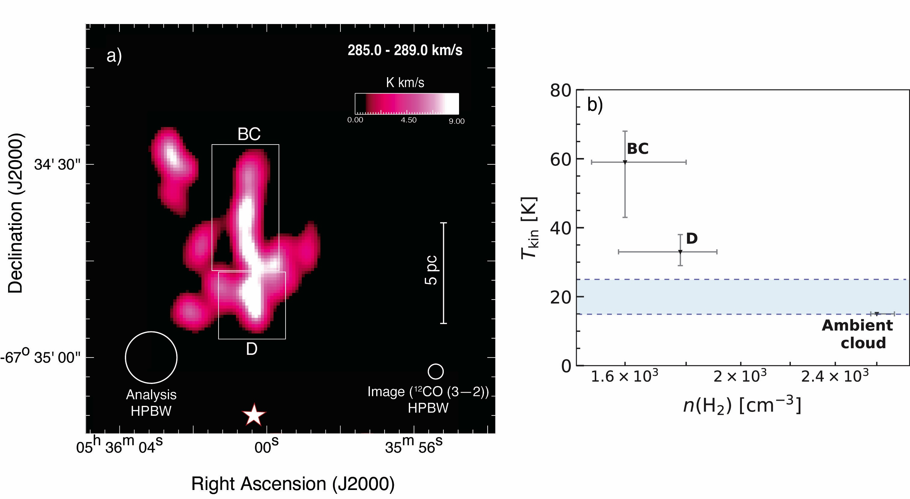
图注：a) Intensity map of jet clouds in velocity range 285$-$289 km s$^{-1}$. The boxes indicate the pixel regions selected for estimating physical properties. b) Kinetic temperature of jet clouds BC and D along with ambient cloud estimated in this study are plotted against their density. The horizontal dotted lines indicate the typical temperature range of unshocked cloud in LMC including the uncertainties.
对应解读：对应“建议重点查看的图表”中的5温度或线比图，以及“关键图表逐图导读”的图5温度诊断和模型拟合段落中关于动温度、密度、物理参数估计的讨论。
入选理由：这张图把喷流云BC、D和环境云的选区位置与温度—密度估计放在一起，直接检验摘要中最关键的物理结论：喷流状CO气体达到33--60 K，而普通非喷流云约为15 K。它比单纯形态图更能支撑‘冲击加热而非普通冷云’的解释，并可用于讨论温度估计的退化、区域定义和系统误差。
来源与置信度：arxiv_source；high；arxiv_source / sample701.tex:figure[3]
Fig02
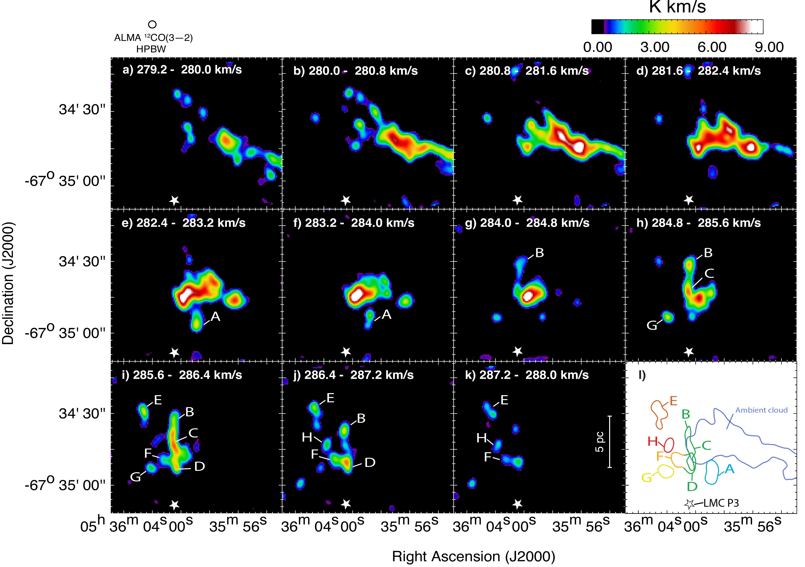
图注：Panels (a)$-$(k) present the velocity channel maps from the ALMA $^{12}$CO ($J$=3--2) observations, with a velocity interval of 0.8 km s$^{-1}$. Panel (l) shows the spatial distribution of all identified clouds, displayed as contours in different colors.
对应解读：对应“建议重点查看的图表”中的2速度通道图，以及“关键图表逐图导读”的图2逐通道连续性检查。
入选理由：这张图给出ALMA 12CO J=3--2的多个0.8 km/s速度通道，可检查喷流状CO结构是否在相邻速度通道中连续出现，而不是单一通道噪声、成图伪影或偶然斑块。它是验证喷流云在速度空间中真实存在的重要图，但相较Fig01和Fig03，对温度异常和多波段替代解释的支撑较间接。
来源与置信度：arxiv_source；high；arxiv_source / sample701.tex:figure[2]
Fig04
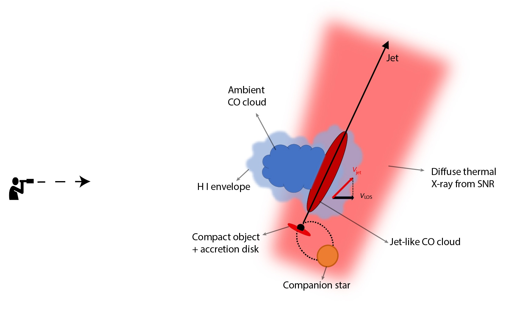
图注：Schematic side-view illustration of the large-scale geometry of the binary system and detected CO clouds within the SNR. The main molecular cloud is located in the foreground of the SNR and is surrounded by an envelope of H I gas. Interaction between the jet launched from the binary system and the ambient gas associated with this envelope is proposed to have produced the jet-like CO cloud located behind the main cloud.
对应解读：对应“建议重点查看的图表”中的7模拟对比图或示意图，以及详细解读中关于LMC P3喷流与前景主分子云、HI包层和SNR几何关系的解释。
入选理由：这是一张几何示意图，能帮助读者理解作者提出的三维场景：双星喷流与SNR内外气体、主分子云和HI包层相互作用并形成背后的喷流状CO云。它对解释框架有帮助，但不是直接观测诊断图，也不包含模拟定量对比、谱线残差或置信区间，因此科学证据权重低于CO积分图、通道图和温度诊断图。
来源与置信度：arxiv_source；high；arxiv_source / sample701.tex:figure[4]
强相关工作
这项工作与 \(\gamma\) 射线双星的两类解释直接相关：脉冲星风模型和微类星体吸积喷流模型。LMC P3 作为河外 \(\gamma\) 射线双星，已有同源发现和多波段研究，读者可检索关键词 “LMC P3 gamma-ray binary”, “DEM L241 compact object”, “Fermi LMC P3”, “O star compact object binary”。这些研究主要从 X 射线、\(\gamma\) 射线和光学轨道调制讨论系统性质，而本文增加了分子气体环境证据。
同类工作方面，作者提到银河系微类星体候选 HESS J1023-575 附近也有可能由微类星体驱动的 CO 喷流。这意味着本文可能不是孤例，而是一个新观测策略的第二个样本。建议检索 “HESS J1023-575 CO jets microquasar”, “molecular jets microquasar ALMA”, “microquasar jet molecular cloud interaction”。基础理论方面，应同时阅读相对论喷流与星际介质相互作用、CO 激发诊断、以及 \(\gamma\) 射线双星综述。相反观点则集中在：丝状 CO 是否可能由恒星风泡、超新星遗迹壳层或随机 LMC 分子云投影造成；检索关键词可用 “gamma-ray binaries pulsar wind model”, “LMC P3 pulsar wind”, “molecular cloud filament projection”.
同一事件 / 同类源线索：
- https://arxiv.org/abs/2608.30489
- https://arxiv.org/pdf/2608.30489
- https://simbad.u-strasbg.fr/simbad/sim-id?Ident=LMC%20P3
相似工作：
基础理论 / 方法工作：
相反观点 / 张力线索：
（未提供）
6. Cascades from ultra-high-energy neutrinos
- 来源：arXiv / astro-ph.HE
- 链接：https://arxiv.org/abs/2608.30562v1
- 作者：Gaetano Di Marco, Rhorry Gauld, Rafael Alves Batista, Alfonso García-Soto, Miguel Á. Sánchez-Conde
- 评分：novelty 8/10，importance 8/10，relevance 8/10，final 9.00/10
- 推荐理由：Introduces a CRPropa-based framework for UHE neutrino propagation, absorption, and secondary cascades, relevant to cosmogenic/extreme-source neutrino predictions and future observatories.
中文题目：超高能中微子传播中的级联效应
做了什么：这篇论文做的是一件过去常被简化处理的事：把能量高到 \,\(10^{21}\,\mathrm{eV}\) 以上的中微子在宇宙学距离上传播时，和宇宙中微子背景、光子背景发生的 \,\(\nu\nu\)、\(\nu\bar\nu\)、\(\nu\gamma\) 相互作用系统地放进蒙特卡洛传播框架。作者开发了 \,\(\nu\)propa，作为 CRPropa 的扩展，接入事例发生器、专门计算的截面以及真空味振荡，追踪初级中微子的吸收、能量再分配和由重轻子、规范玻色子、夸克强子化产生的次级中微子、质子和电磁粒子。对位于 \,\(z=10\) 的高红移源，结果显示初级通量在 \,\(\sim10^{21}\,\mathrm{eV}\) 以上被强烈吸收，但大量次级中微子会部分补偿这种亏损，并把能量搬运到较低能段。重要性在于，未来超 EeV 中微子实验若要约束超重暗物质、宇宙弦、原初黑洞等早期宇宙高能过程，不能只把传播看成红移加振荡，而必须计算完整的相互作用级联。
为什么重要：超高能中微子通常被说成“几乎无阻尼的宇宙信使”，但在 \,\(10^{21}\,\mathrm{eV}\) 以上、尤其是高红移传播时，这个近似会失效。宇宙中微子背景和辐射背景虽稀薄，却有足够长的传播距离让 \,\(Z\) 共振、深度非弹性散射和 \,\(\nu\gamma\) 过程改变可观测谱形。本文的重要性在于把这些效应从若干解析估计和单通道计算推进到可复用的传播工具，使理论源模型可以直接生成接近观测端的通量预言。
理论 / 观测 / 仪器方法价值：对理论而言，它提供了从源注入谱到地球通量的统一级联计算接口，可用于检验超重暗物质衰变、拓扑缺陷、宇宙弦尖峰、原初黑洞蒸发或吸积等模型。对观测而言，它告诉未来 GRAND、IceCube-Gen2、RNO-G、POEMMA、BEACON 等超高能中微子设施在解释非探测上限或候选事件时，应把传播吸收和次级补偿作为模型系统误差的一部分。对方法而言，\(\nu\)propa 把 CRPropa 的宇宙线传播思想扩展到极高能中微子多通道级联，并把粒子物理事例发生器与宇宙学传播连接起来。
为什么应该关注：如果你关心 \,\(\gtrsim\mathrm{EeV}\) 中微子天文学，这篇文章直接影响“看到或没看到一个通量”该如何解释。一个源模型在源端可能预测很硬、很高能的中微子谱，但传播后地球上看到的可能是被吸收后的高能截断和低能次级堆积；反过来，观测上限也不能简单反推源端总能量预算。本文给出的是未来做这类推断时可能成为基础模块的传播框架。
展开详细解读：文章讲解、背景、理论、重点章节、图表与相关工作
文章详细讲解
科学问题：论文关注的是超高能中微子在宇宙学距离上传播时是否仍可被近似为只经历宇宙红移和味振荡。常规高能中微子天文学在 \,\(\mathrm{TeV}\) 到 \,\(\mathrm{EeV}\) 区间通常可忽略中微子与背景场的相互作用；但当能量上升到 \,\(10^{21}\,\mathrm{eV}\) 甚至更高时，宇宙中微子背景 \,\(\mathrm{C}\nu\mathrm{B}\) 和宇宙光子背景提供了足够多的靶粒子，使 \,\(\nu\nu\)、\(\nu\bar\nu\)、\(\nu\gamma\) 过程累积出可观光深。这不仅吸收初级中微子，还通过重轻子、规范玻色子和强子喷注的衰变产生新的中微子、质子和电磁级联粒子。
作者怎么做：作者构建了 \,\(\nu\)propa，这是 CRPropa 的一个中微子传播扩展。它把宇宙学传播、背景场演化、真空味振荡、相互作用抽样、末态粒子生成和次级粒子继续传播合在一个蒙特卡洛框架中。关键技术点是把多种 \,\(\nu\nu\)、\(\nu\bar\nu\)、\(\nu\gamma\) 截面与事例发生器连接起来，而不是只用总截面乘一个吸收因子。这样可以记录能量如何从初级中微子转移到次级中微子、电磁粒子和重子成分。
关键结果：作为示例，论文研究了位于 \,\(z=10\) 的高红移源。结果显示，当源端注入包含 \,\(\sim10^{21}\,\mathrm{eV}\) 以上能量时，传播后初级通量出现强吸收，说明极高能中微子并非完全透明信使。与此同时，相互作用末态产生的大量次级中微子会把部分能量重新填充到较低能段，因此观测端谱形不是简单指数衰减，而是“高能亏损加低能补偿”的级联谱。这个结论对早期宇宙高能源尤其重要，因为高红移意味着背景密度更高、传播路径更长、相互作用累计效应更强。
局限和下一步：本文更像是一篇框架和物理效应展示论文，而不是对某一个具体源模型或实验数据的拟合论文。示例源红移和注入谱用于说明传播效应，并不穷尽超重暗物质、宇宙弦或原初黑洞的模型空间。下一步自然是把 \,\(\nu\)propa 与具体宇宙学源分布、喷注或衰变谱、实验有效面积和非探测似然连接起来；同时需要继续评估截面外推、背景中微子质量谱、末态强子化模型、电磁级联在宇宙磁场中的传播等系统误差。
关键结果是怎么做出来的
本文最重要的证据链不是某个已观测事件，而是一个传播计算框架及其对高红移源的基准演示。样本选择上，作者没有从探测器事件表出发，而是从源端注入的超高能中微子群体出发，设定高红移 \,\(z=10\) 作为强传播效应的测试场景。蒙特卡洛中的“事件数”对应大量模拟粒子历史：每个初级中微子沿宇宙学路径传播，按能量、红移和背景粒子密度抽样相互作用，并继续跟踪由末态衰变或强子化产生的次级粒子。
显著性意义在这里不是传统观测论文的 \,\(5\sigma\) 检出，而是物理效应相对于“无相互作用传播”基线的谱形差异。核心比较应是：只考虑红移和振荡时的到达通量，与加入 \,\(\nu\nu\)、\(\nu\bar\nu\)、\(\nu\gamma\) 吸收及再生后的通量之间的比值。若论文图中展示初级、次级和总通量，读者应检查在 \,\(\gtrsim10^{21}\,\mathrm{eV}\) 处初级分量是否显著下降，以及较低能段是否出现由级联产生的补偿分量。
统计和模型比较主要体现在传播核的构建，而不是对观测数据做贝叶斯或频率学拟合。每个能量区间的结果来自蒙特卡洛抽样，理论不确定性来自相互作用截面、末态事例发生器、背景场模型和有限模拟统计。若论文给出不同相互作用通道的开关比较，最应关注的是哪些通道主导吸收、哪些通道主导次级中微子再生，以及 \,\(\nu\bar\nu\) 的共振结构是否在谱中留下可辨认的能量特征。
支撑结论的图表应包括总截面或相互作用长度随能量变化的图、传播后谱形图、初级与次级成分分解图、以及不同背景或通道贡献比较图。表格若列出可用过程和末态，应检查是否覆盖中微子反中微子湮灭、深度非弹性通道、带电流和中性流贡献、以及 \,\(\nu\gamma\) 产生重粒子的阈值过程。稳健性检验的关键是关掉某类通道或改变源红移后，主要结论是否仍成立：高能吸收是否仍在，次级中微子是否仍能显著回填低能端。
主要系统误差在最高能区尤其值得重视。粒子物理截面需要外推到实验室无法直接验证的质心能区；强子化模型决定能量如何分配给介子、重子和电磁粒子；宇宙中微子背景的质量本征态和可能的非热性质会影响共振能量与靶粒子动量分布；电磁级联还依赖宇宙射电背景和磁场。本文的价值在于给出可更换模块的计算框架，使这些系统误差可以在后续具体源模型中被逐项扫描，而不是隐藏在一个简单吸收因子里。
展开背景、理论、公式、模型、章节和图表导读
背景知识
研究对象是能量远高于通常 IceCube 天体中微子样本的超高能中微子，特别是 \,\(\mathrm{EeV}\) 以上乃至 \,\(10^{21}\,\mathrm{eV}\) 以上的粒子。这类中微子可能来自常规宇宙线与背景光子的相互作用，也可能来自更外推的早期宇宙或新物理源，例如超重暗物质衰变、拓扑缺陷、宇宙弦或原初黑洞相关过程。能量越高，单个中微子的探测概率越高，但预期通量越低，因此传播理论误差会直接影响未来大体积实验的解释力。
历史上，中微子被称为最透明的宇宙信使，是因为弱相互作用截面很小。对 \,\(\mathrm{TeV}\) 到 \,\(\mathrm{PeV}\) 的天体中微子而言，除了地球吸收和源内相互作用，宇宙学传播确实几乎只是红移、几何稀释和味振荡。但在极端能量下，情况变了：即使背景粒子密度低，只要传播路径达到宇宙学尺度，光深也可能接近或超过一。特别是 \,\(\nu\bar\nu\) 通过 \,\(Z\) 玻色子共振的过程长期以来就被用于讨论所谓 \,\(Z\)-burst 或超高能中微子吸收特征。
现在重新看这个问题的原因有两方面。第一，未来射电探测阵列、月球或大气掠射探测方案正在把灵敏度推进到 \,\(\mathrm{EeV}\) 以上，理论预言需要从数量级估计变为可与有效面积卷积的谱。第二，粒子物理和宇宙线传播工具已经成熟到可以把末态事例发生器、强子化模型和宇宙学传播整合起来，不必只做单通道解析光深。本文正是利用 CRPropa 生态把中微子传播做成可复用的数值模块。
该领域常见误区之一是把“中微子不受磁场偏转”误读为“中微子传播完全无损”。磁场偏转确实可以忽略，但弱相互作用在足够高能和足够长路径上仍会累积。另一个误区是只关心初级中微子被吸收，而忽略末态再生：一次相互作用并不意味着能量从中微子通道完全消失，很多能量会通过介子、轻子和玻色子衰变回到中微子，只是能量更低、味组成可能改变。第三个误区是把所有传播效应等价为一个能量依赖衰减因子；这会漏掉多代级联造成的谱形重塑。
基础理论 / 方法脉络
基础物理图像可以从光深开始理解：中微子在背景粒子海中传播，单位路径发生相互作用的概率由背景数密度和相互作用截面决定。对普通天体中微子，截面太小、能量不足以打开许多通道，所以平均自由程远大于宇宙尺度；但在 \,\(10^{21}\,\mathrm{eV}\) 以上，质心能足以产生重粒子，且某些共振或深度非弹性过程会显著提高相互作用概率。
本文涉及的靶场包括宇宙中微子背景和宇宙辐射背景。宇宙中微子背景的温度很低，但数量密度可观；如果靶中微子在今天已经非相对论，入射中微子能量与质心能之间的关系近似由靶中微子质量控制。宇宙光子背景包括微波背景、红外光背景和射电背景等，不同能段决定不同 \,\(\nu\gamma\) 阈值过程的相互作用长度。
模型假设上，\(\nu\)propa 把传播拆成连续红移损失、随机相互作用、末态生成和味振荡。红移改变粒子能量和背景密度；相互作用由总截面决定何时发生，由微分分布和事例发生器决定末态粒子种类与能量分配；真空味振荡在宇宙学距离上通常相干性丢失，可用振荡平均概率把源端味组成映射到地球端。
观测方法的连接点是地球端微分通量，而不是单个传播历史。未来实验看到的是有效面积加权后的事件率，因此传播代码必须输出按能量、味、粒子种类分解的通量。常见退化包括源端注入谱的高能截止与传播吸收之间的退化、源红移分布与相互作用光深之间的退化、以及次级再生通量与源端低能注入之间的退化。若不显式建模传播级联，这些退化会被错误归因于源物理。
公式与推导
第一步是写出宇宙学传播中的能量红移。对自由传播的超相对论粒子，观测能量 \,\(E_0\) 与红移 \,\(z\) 处能量 \,\(E(z)\) 的关系为
这里 \,\(E_0\) 是地球端能量，\(E(z)\) 是相互作用发生时的能量。这个关系决定了同一个地球端能量在高红移处对应更高质心能。
第二步是相互作用光深。若背景靶粒子数密度为 \,\(n_b(z)\)，总截面为 \,\(\sigma_i(E,z)\)，则某一通道 \,\(i\) 的光深可写成
其中 \,\(z_s\) 是源红移，\(H(z)\) 是哈勃参数，\(c\) 是光速。若忽略再生，初级通量会近似乘上 \,\(\exp[-\sum_i\tau_i]\)。
第三步是理解 \,\(\nu\bar\nu\) 共振能量。若靶背景中微子近似静止、质量为 \,\(m_\nu\)，入射中微子与反中微子产生 \,\(Z\) 玻色子的共振条件为
这里 \,\(m_Z\) 是 \,\(Z\) 玻色子质量。该式说明中微子质量越小，共振所需入射能量越高；有限温度和质量本征态会展宽实际吸收特征。
第四步是把吸收推广为含再生的输运方程。对味 \,\(\alpha\) 的中微子微分通量 \,\(\Phi_\alpha(E,z)\)，可以示意写为
其中 \,\(\Gamma_\alpha\) 是总相互作用率，\(K_{\beta\to\alpha}\) 是从高能 \,\(E'\) 再生到低能 \,\(E\) 的核。本文的蒙特卡洛框架本质上是在数值抽样这个输运问题。
第五步是相互作用率与平均自由程。对各向同性背景，简化情形下可写为
这里角括号表示对背景粒子能量和入射角的平均。该式让读者判断某个能段是否进入强吸收区：当 \,\(\lambda_i\) 小于或接近宇宙学路径长度时，传播效应不可忽略。
第六步是味振荡平均。宇宙学距离上振荡相位通常平均掉，源端味通量 \,\(\Phi^S_\beta\) 到地球端味通量 \,\(\Phi^\oplus_\alpha\) 的映射为
其中 \,\(U_{\alpha i}\) 是 PMNS 混合矩阵。本文在传播过程中处理真空味振荡，使味组成可与探测器响应相连。
第七步是源端到地球端的通量卷积。若共动源率密度为 \,\(\mathcal{R}(z)\)，单源注入谱为 \,\(Q(E,z)\)，传播核为 \,\(\mathcal{P}(E_s,z\to E_0)\)，则弥散通量可写成
\(\mathcal{P}\) 包含红移、吸收、再生和味变化，是 \,\(\nu\)propa 这类代码真正要输出的对象。
第八步是与实验事件率连接。给定探测器对味 \,\(\alpha\) 的有效面积 \,\(A_{{\rm eff},\alpha}(E)\) 和曝光时间 \,\(T\)，预期事件数为
这说明传播级联不仅改变理论谱形，也改变可观测事件数和能量分布，特别是在有效面积快速随能量变化的射电探测实验中。
第九步是非探测或候选事件的似然诊断。若能量分箱中观测到 \,\(n_k\) 个事件、预期信号加背景为 \,\(\mu_k(\theta)+b_k\)，泊松似然为
这里 \,\(\theta\) 可包括源谱参数、红移分布和传播模型选项。未来把本文框架用于数据解释时，模型比较和上限推断会落到这个似然层面。
模型拟合 / 应用方法
本文本身主要是传播框架和基准情形展示，不是对现有观测数据的参数拟合；但它定义了后续拟合的核心对象。拟合量通常会包括源端注入谱归一化、谱指数、高能截止、源红移分布、味组成、以及不同候选源模型的物理参数，例如超重暗物质质量和寿命、宇宙弦张力或原初黑洞质量函数。\(\nu\)propa 输出的传播后通量可与实验有效面积卷积，形成事件率模型。
似然层面，未来应用通常会使用泊松计数似然或非齐次泊松点过程似然。如果数据只有上限，关键是用零事件或少事件的泊松概率约束模型归一化；如果有候选事件，则需联合能量重建概率、方向接受度和背景模型。传播级联会改变不同能段的相对事件数，因此不应只用总通量归一化做一维比较，而应利用谱形信息。
参数退化会很强。源端高能截止降低、传播吸收增强、源红移提高都能导致地球端高能亏损；源端本身有低能成分和传播产生的次级中微子都能解释较低能段的通量增强；味组成变化和探测器不同通道有效面积也会相互混淆。打破这些退化需要多能段、多探测技术和对电磁或宇宙线次级信号的联合约束。
系统误差应在拟合中显式参数化。截面外推、背景辐射场、宇宙中微子质量和动量分布、强子化模型、宇宙学源演化、探测器有效体积和能量标定都会改变结论。实际应用中可把不同传播设置作为离散 nuisance model，或对关键截面和背景强度设置连续 nuisance parameters，并通过 profile likelihood 或贝叶斯边缘化传播到最终上限。
模型可能失败的地方也很清楚：若源内环境本身已经产生强吸收或级联，单独的星际传播核不能代表全部物理；若新物理改变中微子截面或衰变性质，标准模型传播代码会给出偏置解释；若最高能段蒙特卡洛统计不足，次级尾部可能有数值噪声。读者在使用这类工具时应检查能量守恒、粒子数统计误差、通道开关测试和与解析极限的一致性。
重点章节 / 结果段落怎么读
数据/物理输入部分应首先阅读。重点看作者列出了哪些 \,\(\nu\nu\)、\(\nu\bar\nu\)、\(\nu\gamma\) 通道，截面来自解析计算、专门数值计算还是事例发生器接口。这里决定了框架是否真正覆盖超高能传播的主要能量损失路径，也决定后续结果可用于哪些能区。
方法部分应关注 \,\(\nu\)propa 与 CRPropa 的接口。读者应确认代码如何处理宇宙学红移、相互作用抽样、末态粒子继续传播、味振荡平均或显式演化，以及如何保存初级和次级成分。若文章给出流程图或伪代码，这部分比摘要中的物理结论更值得细读。
截面和相互作用长度结果部分是理解物理尺度的关键。建议看不同背景和不同通道在能量上的主导区间，尤其是 \,\(\sim10^{21}\,\mathrm{eV}\) 附近为什么开始出现强吸收。读者应区分总截面的上升、背景密度随红移增加、以及共振阈值这三类因素。
基准源传播结果部分是论文主结论所在。对于 \,\(z=10\) 源，重点看传播后初级通量、次级中微子通量和总通量的分解；如果有与“只红移加振荡”模型的比较，应优先阅读。这里直接展示高能吸收和低能补偿。
讨论和展望部分应看作者如何连接超重暗物质、宇宙弦和原初黑洞等源模型，以及他们是否指出未来实验的适用范围。附录或稳健性检验若包含截面验证、能量守恒测试、与已有传播估计对比，也应检查，因为框架论文的可信度很大程度取决于这些技术细节。
建议重点查看的图表
-
相互作用截面随能量变化图：检查 \,\(\nu\nu\)、\(\nu\bar\nu\)、\(\nu\gamma\) 各通道在何处打开、是否有共振峰、不同近似或计算结果是否连续衔接。
-
平均自由程或光深图：横轴通常是中微子能量，纵轴可能是 \,\(\lambda\) 或 \,\(\tau\)。关键是看 \,\(\lambda\) 何时接近哈勃尺度或源到地球距离，以及高红移是否显著增强吸收。
-
传播后能谱图：应同时查看无相互作用基线、只含吸收、含吸收加再生的结果。最重要趋势是 \,\(\gtrsim10^{21}\,\mathrm{eV}\) 初级通量下降和较低能量次级通量上升。
-
初级与次级成分分解图：看次级中微子、质子和电磁粒子分别占多少能量，是否存在多代级联造成的宽能量分布。
-
不同相互作用通道开关比较图：检查去掉 \,\(\nu\gamma\) 或去掉 \,\(\nu\bar\nu\) 后谱形变化，判断主导通道是否依赖能量和红移。
-
味组成或振荡结果图：如果有，检查源端味比经过传播和振荡后是否接近期望的平均振荡结果，以及高能相互作用是否造成味依赖修正。
-
数值稳健性或能量守恒诊断：如果附录有表或图，应看总注入能量在所有末态通道中的回收程度，以及蒙特卡洛统计误差是否控制在主要结论以下。
关键图表逐图导读
图 1：若论文首先给出相互作用通道或截面图，横轴应是入射中微子能量或质心能，纵轴是总截面。数据点或曲线可能分别代表 \,\(\nu\nu\)、\(\nu\bar\nu\)、\(\nu\gamma\) 的不同末态。读图时要注意阈值和共振位置，不要把某一通道在局部能区的高截面误认为全能段主导；背景粒子密度和红移还会改变实际相互作用率。
图 2：平均自由程或光深图通常最直接说明“中微子是否透明”。横轴为地球端或传播中能量，纵轴为 \,\(\lambda\) 或 \,\(\tau\)，可能叠加哈勃尺度或不同红移曲线。关键结论是 \,\(\sim10^{21}\,\mathrm{eV}\) 以上光深迅速增加。读图陷阱是能量定义：有些曲线用局域能量，有些用观测能量，二者差一个 \,\((1+z)\) 因子。
图 3：基准 \,\(z=10\) 源的传播后中微子谱应是主结果图。横轴为能量，纵轴为微分通量或能量加权通量，模型线可能包括源端谱、无相互作用传播谱、初级残余谱、次级谱和总谱。读者要看高能端吸收是否相对于无相互作用基线达到数量级水平，以及次级谱在哪个能段开始主导。
图 4：如果有末态成分图，横轴可能仍为能量，纵轴为不同粒子种类的通量或能量份额。这里应读出能量是否主要留在中微子通道，还是显著进入电磁级联和重子通道。陷阱是电磁粒子后续还会受宇宙光背景和磁场影响，图中若只显示产生谱，不一定等同于最终可观测伽马射线谱。
图 5：通道开关或模型变体比较图用于判断结论稳健性。模型线可能分别表示只开 \,\(\nu\bar\nu\)、加入 \,\(\nu\gamma\)、加入全部末态再生等。关键不是哪条线最高，而是总谱形是否对某个不确定通道过度敏感；若低能次级补偿主要由少数高不确定性通道贡献，后续用于数据约束时就要放大系统误差。
图 6：若论文有流程图或代码验证图，应检查粒子传播步骤是否闭合：注入、红移、抽样相互作用、调用事例发生器、衰变或强子化、记录次级、继续传播。对框架论文而言，这类图的价值不低于结果谱图，因为它告诉你哪些物理过程被显式模拟，哪些只是有效近似。
论文原图 / 可嵌入图片
Fig09
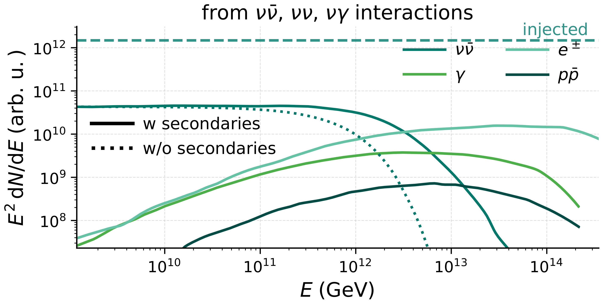
图注：Observed energy spectra from a equal-flavoured neutrino source placed at redshift~10, which emits as a power-law with spectral index~$-2$ in the energy range of the figure (labelled dashed gray line). All the implemented neutrino-(anti)neutrino and neutrino-photon interactions are activated for the three C$\nu$B mass states and the~CMB. The colours of the lines indicate the observed particle, while the linestyle distinguishes between the simulations in which secondaries are traced (solid) or not (dotted).
对应解读：对应“建议重点查看的图表”第3、4项，以及“关键图表逐图导读”图3和图4：z=10 基准源传播后能谱、初级吸收与次级再生、不同稳定信使成分。
入选理由：这是最直接支撑日报核心结论的主结果图：源位于 z=10、注入为等味中微子幂律谱，并同时开启全部已实现的中微子-中微子、中微子-反中微子和中微子-光子相互作用。图中用实线/点线区分是否追踪次级粒子，用颜色区分观测到的粒子种类，正好展示高能端初级通量被吸收、低能端由次级中微子等成分补偿的级联谱形。
来源与置信度：arxiv_source；high；arxiv_source / main.tex:figure[9]
Fig03
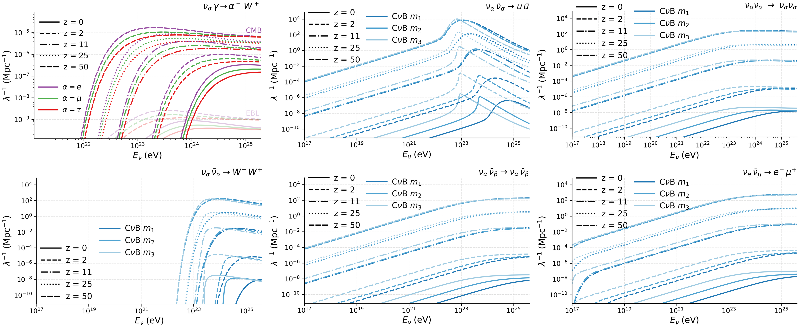
图注：The inverse mean free paths of some interaction channels that involve a neutrino of energy $E_{\nu}$ propagating through the cosmic either neutrino or microwave background (see Sec.~\ref{sec:cosmBackg}).
对应解读：对应“建议重点查看的图表”第2项，以及“关键图表逐图导读”图2：平均自由程或光深诊断。
入选理由：该图给出不同相互作用通道的 inverse mean free path 随入射中微子能量的变化，是判断超高能中微子何时不再透明的关键物理诊断。它比单纯的背景密度图更直接连接到吸收强弱，可用于理解日报中提到的约 10^21 eV 以上传播效应迅速增强。
来源与置信度：arxiv_source；high；arxiv_source / main.tex:figure[3]
Fig02
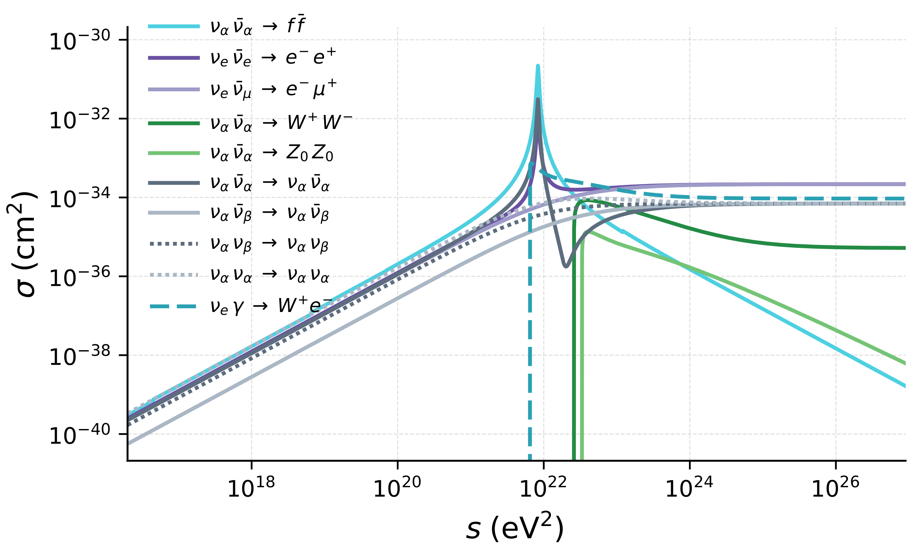
图注：Cross section as function of the centre-of-mass energy for interactions between (anti)neutrinos of different flavours~\cite{berezinsky1992neutrino}, as well as the on-shell W-boson production in neutrino-photon interactions.
对应解读：对应“建议重点查看的图表”第1项，以及“关键图表逐图导读”图1：相互作用截面随质心能变化。
入选理由：该图展示不同味中微子之间相互作用以及中微子-光子 on-shell W 产生的截面，是理解各通道阈值、共振结构和能区主导性的基础。日报特别提醒不要只凭局部截面峰值判断全能段贡献，因此这张截面图应作为解释平均自由程和传播谱之前的核心图。
来源与置信度：arxiv_source；high；arxiv_source / main.tex:figure[2]
Fig10
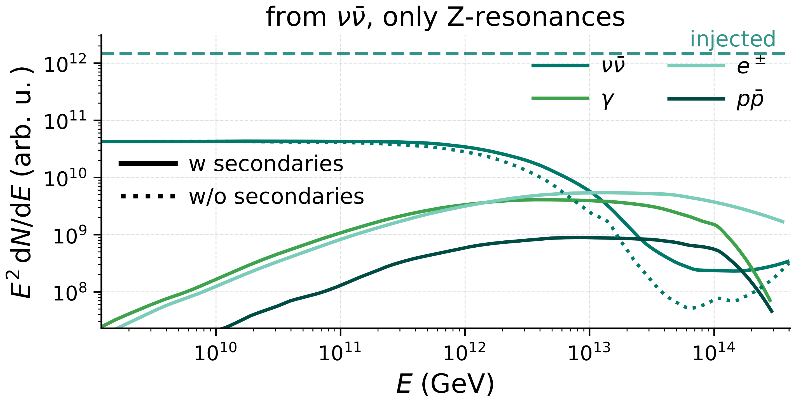
图注：The same energy spectra as Fig.~\ref{fig:spectraAll}, this time activating only the Z-resonant neutrino-antineutrino channels.
对应解读：对应“建议重点查看的图表”第5项，以及“关键图表逐图导读”图5：只开启 Z 共振中微子-反中微子通道的模型变体比较。
入选理由：Fig10 与 Fig09 的设置高度可比，但只激活 Z-resonant neutrino-antineutrino channels，因此非常适合判断总谱形对特定相互作用通道的依赖。它能支撑日报中关于通道开关测试、主导通道和系统误差敏感性的讨论。
来源与置信度：arxiv_source；high；arxiv_source / main.tex:figure[10]
Fig07
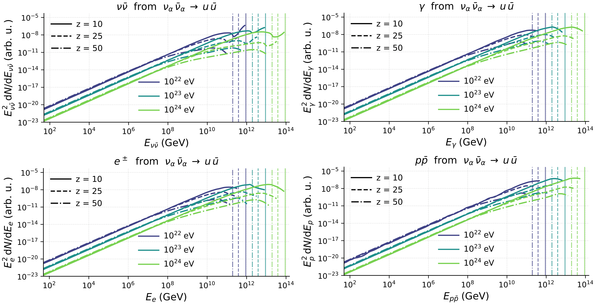
图注：Energy spectra of the stable messengers produced by the propagation of extremely energetic neutrinos through the C$\nu$B, activating only one interaction channel. The colour legend indicates the energy of the monochromatic sources, while linestyle refers to its redshift, as given in the legend. The dotted vertical lines are the yet redshifted source energies. Each energy spectrum is normalised to its own source energies.
对应解读：对应“建议重点查看的图表”第4、5项：单通道开启时稳定信使的能谱和级联产物分解。
入选理由：该图逐一开启单个相互作用通道，并显示极高能中微子穿过 CνB 后产生的稳定信使能谱，颜色和线型还区分源能量与红移。它比总谱图更适合追踪能量如何从初级中微子转移到次级中微子、质子和电磁成分，也能帮助识别哪些通道负责宽能量分布的级联产物。
来源与置信度：arxiv_source；high；arxiv_source / main.tex:figure[7]
Fig04
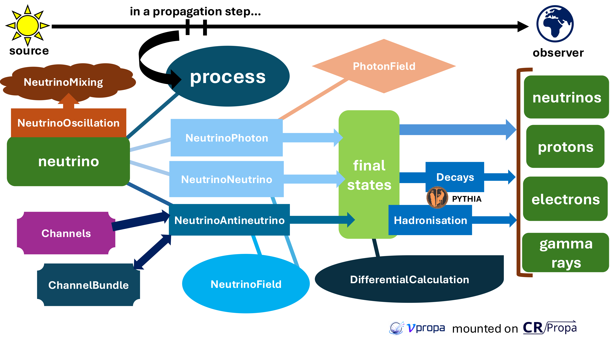
图注：Chart on the workflow of the~\texttt{$\nu$propa} code. The blocks represent the various modules, classes or frameworks of the code. The \texttt{process} function is the main one in~CRPropa: it acts on the propagating particle according to the active modules.
对应解读：对应“建议重点查看的图表”第7项和“关键图表逐图导读”图6：νpropa 代码流程与传播模块闭合性。
入选理由：本文是传播框架论文，代码 workflow 图能说明注入、传播、相互作用抽样、调用事件发生器、衰变/强子化、记录并继续传播次级粒子的整体流程。它虽然不是结果谱图，但能支撑日报中关于哪些物理过程被显式模拟、哪些环节影响能量守恒和数值稳健性的解读。
来源与置信度：arxiv_source；high；arxiv_source / main.tex:figure[4]
强相关工作
这篇工作与早期关于超高能中微子和宇宙中微子背景相互作用的研究直接相关，尤其是 \,\(\nu\bar\nu\to Z\) 共振吸收、所谓 \,\(Z\)-burst 设想、以及用超高能中微子探测宇宙中微子背景的讨论。不同之处在于，本文不只讨论单个共振或解析光深，而是将多通道相互作用和末态级联放进传播蒙特卡洛。检索关键词可用 “ultra-high-energy neutrino propagation cosmic neutrino background absorption Z resonance cascade”。
它也与宇宙线传播工具 CRPropa、 cosmogenic neutrino 预言和未来超高能中微子实验灵敏度研究相连。对于常规宇宙线产生的 cosmogenic neutrinos，传播源主要是质子或核与背景光子相互作用；本文则强调中微子本身在更高能端的传播不再完全透明。检索关键词可用 “CRPropa neutrino propagation”, “cosmogenic neutrinos EeV”, “GRAND IceCube-Gen2 RNO-G POEMMA ultra high energy neutrino sensitivity”。
潜在张力或相反观点来自一些简化源模型：若只在 \,\(\lesssim10^{20}\,\mathrm{eV}\) 讨论中微子，传播相互作用确实很小，复杂级联框架可能不是必要；但对高红移、超高能注入模型，这种简化会低估谱形重塑。读者应把本文看成高能极端模型的必要修正，而不是对所有中微子天文学能段的通用大改写。
同一事件 / 同类源线索：
相似工作：
基础理论 / 方法工作：
相反观点 / 张力线索：
（未提供）
7. Anomalous horizontal track-like events at the HAWC observatory: candidate neutrino-induced charged leptons from the Pico de Orizaba volcano
- 来源：arXiv / astro-ph.HE
- 链接：https://arxiv.org/abs/2608.28951v1
- 作者：Hermes León Vargas, Andrés Sandoval
- 评分：novelty 8/10，importance 7/10，relevance 9/10，final 9.00/10
- 推荐理由：Reanalysis of anomalous HAWC horizontal track-like events as possible Earth-skimming neutrino-induced leptons is highly relevant to high-energy neutrino astronomy and ground-based air-shower instrumentation. Significance is modest and based on published information, but the event-level background arguments are worth checking.
中文题目：HAWC 观测站的异常水平径迹事件：来自 Pico de Orizaba 火山方向的中微子诱发带电脉子候选体
做了什么：这篇文章不是报告一套新观测，而是对 HAWC 合作组已公开的地球掠射中微子搜索结果做独立再分析。作者聚焦两个异常的水平径迹状事件：它们来自 Pico de Orizaba 火山最大遮挡厚度方向，光电荷沉积异常大，并落在 HAWC 原分析中最难由普通大气背景解释的区域。作者利用公开的 Monte Carlo 电荷分布、散射缪子背景模型和火山过burden，论证这两个事件的池内能量沉积下限约为 \(190\text{--}210\,\mathrm{GeV}\)，即使取最保守极限也有 \(122\text{--}136\,\mathrm{GeV}\)，超过已发表散射缪子背景模型的 \(100\,\mathrm{GeV}\) 上限。直接穿透火山的大气缪子需要 \(E_\mu\gtrsim0.67\,\mathrm{PeV}\)，期望事件数只有 \(4.5\times10^{-5}\)，即便采用极端 prompt-charm 通量也不超过 \(10^{-3}\)。作者因此主张这两个事件在运动学和能量学上更像是中微子在火山中相互作用后产生的出射带电脉子，尤其可能是地球掠射中微子技术的候选信号。结论的统计强度仍有限，文中给出的相对常规大气中微子预期超额约为 \(2.1\text{--}2.5\sigma\)，更接近“值得严肃跟进的候选体”而不是发现声明。
为什么重要：重要性在于它把一个容易被当作仪器或宇宙线背景尾部的异常，重新放回到可检验的能量守恒、火山吸收和背景期望框架中。如果论证成立，HAWC 的大型水切伦科夫阵列不仅能做伽马射线巡天，也可能以 Pico de Orizaba 火山作为天然转换靶，探测地球掠射中微子诱发的带电脉子。这会为 \(\mathrm{TeV}\) 到 \(\mathrm{PeV}\) 能区中微子观测提供一种低成本、全天候、广视场的补充路径。
理论 / 观测 / 仪器方法价值：对方法的价值最大：作者展示了如何仅用公开电荷分布、已发表背景模型和几何遮挡信息，对候选事件做能量学一致性审计。对观测的价值在于，它指出 HAWC 已有数据中可能存在一个未被充分利用的“火山滤波器”信号窗口。对理论的价值相对间接：若事件最终被确认为中微子，它们将约束火山内中微子相互作用、出射轻子传播和大气/天体中微子通量模型。
为什么应该关注：你应该关注它，因为它触及高能中微子观测中一个很现实的问题：罕见事件到底是背景尾部、仪器异常，还是新探测通道的第一批候选信号？文章给出的不是单纯“看起来像”的形态学论证，而是逐项排除散射缪子、直接大气缪子和共线缪子束的能量与几何可行性。即使最终结论被后续 HAWC 内部分析修正，这篇文章也提供了一个可复用的审查清单：电荷标定、遮挡厚度、背景模型外推、事件率和公开数据可重复性。
展开详细解读：文章讲解、背景、理论、重点章节、图表与相关工作
文章详细讲解
科学问题：HAWC 在寻找地球掠射中微子时报告过两个异常的水平径迹状事件，它们指向 Pico de Orizaba 火山最大遮挡厚度方向，等效水深超过 \(18\,\mathrm{km.w.e.}\)。通常说，厚遮挡会压低普通大气缪子背景，因此如果在这个方向看到水平、强电荷沉积、轨迹状事件，就必须问清楚：这是散射缪子模型尾部、穿透火山的极高能缪子、缪子束、探测器标定问题，还是中微子在火山中相互作用后产生的出射带电脉子？本文的核心问题就是重新审视这两个事件是否与已知背景运动学相容。
作者怎么做：文章没有引入新的 HAWC 私有数据，而是只使用 HAWC 已公开的信息，包括候选事件的电荷窗口、已发表 Monte Carlo 电荷分布、散射缪子背景模型、火山方向的过burden 以及关于分析区域的描述。作者把问题拆成几个保守检验：从总光电荷反推池内能量沉积的下限；比较该下限与散射缪子背景模拟覆盖的最大能量沉积；估算直接大气缪子穿透 \(>18\,\mathrm{km.w.e.}\) 需要的入射能量和事件数；再检查共线缪子束是否能在几何、能量损失、时间结构和电荷分布上同时满足观测。
关键结果：两个候选事件的池内能量沉积被保守约束在 \(190\text{--}210\,\mathrm{GeV}\) 以上；即使采用最不利的保守估计，仍为 \(122\text{--}136\,\mathrm{GeV}\)。这已经高于 HAWC 公开散射缪子背景模型的 \(100\,\mathrm{GeV}\) 上限，因此作者认为不能简单把候选体归入该背景族。直接大气缪子若要穿透火山，需要 \(E_\mu\gtrsim0.67\,\mathrm{PeV}\)，对应期望数为 \(4.5\times10^{-5}\)；即便使用最大 prompt-charm 通量设定，也只有 \(\lesssim10^{-3}\)。反过来，中微子假设自然预言候选事件应出现在高遮挡分析区域，并落在 \(10^3\text{--}10^4\) photoelectron 的电荷窗口，二者都与观测相符。
局限和下一步：最关键的限制是作者只能使用公开信息，不能访问 HAWC 原始波形、逐水箱时间残差、完整重建似然、现场运行状态、盲分析选择函数和未公开的系统误差预算。因此这篇文章的结论更像是“公开证据下背景解释高度紧张”，而不是正式发现。下一步需要 HAWC 或独立团队释放更完整的事件级数据、重建质量参数、单箱电荷和时间分布，并用统一的端到端模拟比较散射缪子、缪子束、直接穿透缪子、\(\nu_\mu\) 和 \(\nu_\tau\) 出射轻子模型。若更多数据在同一过burden 和电荷窗口重复出现，统计意义和物理解释都会明显增强。
关键结果是怎么做出来的
数据和样本选择上，本文只讨论 HAWC 已发表地球掠射中微子搜索中的两个径迹状候选事件，而不是重新定义一个更大的候选样本。事件的共同特征是到达方向回指 Pico de Orizaba 火山最大过burden 区域，等效遮挡厚度超过 \(18\,\mathrm{km.w.e.}\)，同时电荷落在 \(10^3\text{--}10^4\) photoelectrons 的高电荷窗口。这个选择很重要，因为厚遮挡区域本来应强烈抑制普通水平大气缪子，若仍出现强径迹信号，背景解释需要同时满足几何穿透和能量沉积两个条件。
统计和显著性方面，作者没有声称达到传统发现阈值，而是把两个事件与常规大气中微子通量预期比较，得到约 \(2.1\text{--}2.5\sigma\) 的超额。这个数值应理解为候选事件率相对标准预期偏高，而非已经排除所有系统误差后的全局显著性。由于只看到两个事件，Poisson 小数统计、选择区域定义、事后关注效应和背景模型外推都会影响解释。读者应把这个显著性看作“需要后续检验的张力”，不是结论本身。
支撑最强的证据链来自能量沉积下限。作者从公开 Monte Carlo 电荷分布和标定关系出发，给出候选体池内沉积能量的保守下限：标准保守估计约 \(190\text{--}210\,\mathrm{GeV}\)，最极端保守情形仍有 \(122\text{--}136\,\mathrm{GeV}\)。这个结果直接与 HAWC 已发表的散射缪子背景模型比较：后者模拟电荷/能量沉积上限约为 \(100\,\mathrm{GeV}\)。因此，关键不是两个事件“电荷大”这件事本身，而是它们位于一个公开背景模型未覆盖或不应产生的沉积区间。
直接大气缪子的排除依赖火山过burden 和高能缪子连续能损。作者估算若大气缪子要从该方向穿透火山并到达 HAWC，需要至少 \(E_\mu\gtrsim0.67\,\mathrm{PeV}\)。在这样的能量和几何条件下，常规通量给出的期望数为 \(4.5\times10^{-5}\)，采用最强 prompt-charm 假设也只有 \(\lesssim10^{-3}\)。这里的稳健性来自数量级差异：不是背景少一倍或两倍，而是需要把非常稀有的高能水平缪子尾部推到观测到两个事件的水平。
共线缪子束被作者用多重理由排除，包括总电荷如何由多个较低能缪子叠加、束的空间展宽是否仍能重建成观测径迹、穿过火山后的能量损失是否允许足够多粒子存活、时间结构是否会伪装为单一清晰径迹，以及这种配置在宇宙线级联中是否有合理事件率。单个论据也许可受系统误差影响，但五类约束共同指向同一结论：用普通空气簇射缪子束解释这两个事件需要高度调参。
读者应重点核对支撑结论的图表类型：候选事件在过burden 区域中的位置图、公开 Monte Carlo 的电荷分布图、散射缪子背景能量沉积上限、事件率与通量假设表，以及标定系统误差如何移动电荷到能量沉积的转换。尤其要看系统误差是否单向：作者声称公开模拟导出的标定系统误差会把隐含沉积推向更高、甚至多 \(\mathrm{TeV}\) 的区间，而不是把候选体拉回 \(<100\,\mathrm{GeV}\) 的背景模型范围。
展开背景、理论、公式、模型、章节和图表导读
背景知识
HAWC 是位于墨西哥高海拔地区的大型水切伦科夫阵列，主要设计目标是连续监测 \(\mathrm{TeV}\) 伽马射线天空。它由许多装水探测器组成，带电粒子穿过水箱时产生切伦科夫光，光电倍增管记录时间和电荷。对伽马射线天文学而言，HAWC 依赖空气簇射二级粒子在地面的横向分布；但对近水平事件，阵列也可能记录穿过水箱的长径迹状带电粒子。
地球掠射中微子技术的基本想法是利用地球、山体或火山作为转换靶。中微子本身穿透性强，可以进入岩石后通过弱相互作用产生带电脉子，例如 \(\mu\) 或 \(\tau\)。如果相互作用发生在离出口不太远的位置，生成的带电脉子可能从山体出射并进入探测器。山体同时扮演屏蔽体：普通大气缪子会被吸收，而中微子诱发的出射轻子则有机会留下干净的近水平径迹。
历史上，高能中微子探测主要由 IceCube、ANTARES、Baikal-GVD、KM3NeT 这类深冰或深水探测器推动；地球掠射 \(\nu_\tau\) 也是 Pierre Auger、ANITA、Ashra、GRAND、Trinity 等概念持续关注的方向。HAWC 的特殊之处在于它不是专门的中微子望远镜，但它邻近 Pico de Orizaba 火山，具备一个天然的、方向依赖很强的遮挡体。因此，如果能对水平径迹事件做可靠背景控制，HAWC 可能在已有硬件上提供一个互补的中微子通道。
这个问题现在值得重新看，有两层原因。第一，公开数据中已经出现两个指向最大过burden 的强电荷径迹状事件，且它们不在直觉上最容易产生大气缪子背景的方向。第二，多信使天文学对 \(\mathrm{TeV}\) 到 \(\mathrm{PeV}\) 中微子源的需求越来越强，任何能增加全天候、广视场覆盖的探测技术都值得严格审计。即使候选事件最终不是天体中微子，它们也能暴露近水平背景模拟和水切伦科夫标定中的薄弱环节。
常见误区之一是把“水平径迹”直接等同于“中微子”。事实上，散射大气缪子、局地放射性或电子噪声偶然组合、空气簇射残余粒子、缪子束和重建失败都可能产生类似外观。另一个误区是只看形态不看能量守恒：如果候选事件的电荷沉积超过某个背景模型物理可达范围，那么就不是简单调节背景归一化能解决的问题。反过来，也不能因为背景很小就自动宣布发现；两个事件的小样本统计、选择函数和系统误差仍必须透明处理。
基础理论 / 方法脉络
基础物理图像可以从三类粒子穿过火山开始。普通大气缪子带电，会在岩石中通过电离、轫致辐射、成对产生和光核相互作用损失能量；遮挡越厚，低能缪子越难存活。中微子几乎不电离，能穿过很厚物质，但只有小概率发生弱相互作用。若中微子在火山靠近出口的位置相互作用，产生的 \(\mu\) 或 \(\tau\) 可以作为出射带电脉子进入 HAWC，留下近水平径迹。
HAWC 的可观测量不是入射中微子能量本身，而是水箱中记录的光电荷、触发水箱分布和时间结构。电荷通常以 photoelectrons 计，近似追踪穿过水体的带电粒子路径长度和能量沉积。对单个穿箱缪子，单位长度能损有限；对高能轻子或多粒子束，总电荷会增大。本文的关键是把公开电荷窗口 \(10^3\text{--}10^4\) photoelectrons 与 Monte Carlo 标定联系起来，给出池内沉积能量下限。
背景模型的主要退化在于“高电荷”可由不同机制产生：一个非常高能的单轻子、多个近共线缪子、散射后进入阵列的缪子、或者重建/标定异常。区分这些情形需要同时看方向、过burden、时间一致性、电荷分布和事件率。本文特别强调方向与能量的联合约束：来自最大火山遮挡区域的事件不能只用未遮挡水平大气缪子直觉处理。
中微子解释也有自己的模型假设。若是 \(\nu_\mu\) 带电流相互作用，出射 \(\mu\) 的传播距离较长但会持续能损；若是 \(\nu_\tau\)，\(\tau\) 的衰变长度随能量增长，出射后可能在空气中衰变或直接穿过探测器。本文摘要中更宽泛地称为 neutrino-induced charged leptons，重点不是精确区分 \(\mu\) 与 \(\tau\)，而是论证候选事件需要一个至少约 \(20\,\mathrm{TeV}\) 的出射轻子来解释电荷沉积。
系统误差的核心是电荷到能量沉积的转换。若标定常数、饱和修正、几何路径长度或光收集效率有偏差，反推的能量沉积会移动。作者声称从公开模拟导出的标定系统误差具有单向效应，会把候选事件推向更高沉积能量、甚至多 \(\mathrm{TeV}\)，而不是降低到散射缪子模型的 \(<100\,\mathrm{GeV}\) 区间。这个断言是读者应重点检查的地方，因为它决定背景排除是否稳健。
公式与推导
第一步是把火山遮挡写成柱密度。沿候选事件方向的等效厚度为
其中 \(\rho(s)\) 是路径上岩石密度，\(s\) 是路径长度，\((\theta,\phi)\) 是到达方向。用水当量表示时，本文关注的方向满足 \(X\gtrsim18\,\mathrm{km.w.e.}\)。这个量控制普通缪子的生存概率，也控制中微子相互作用靶质量。
第二步是高能缪子在岩石中的平均能损近似：
其中 \(a\) 表示近似常数的电离损失，\(bE_\mu\) 表示辐射损失项，\(X\) 以 \(\mathrm{g\,cm^{-2}}\) 或水当量计。若要求缪子穿过厚度 \(X\) 后仍有能量 \(E_{\rm out}\)，入射能量满足
在 \(X\gtrsim18\,\mathrm{km.w.e.}\) 下，这一关系给出直接穿透大气缪子所需的 \(E_\mu\gtrsim0.67\,\mathrm{PeV}\) 量级。
第三步是把中微子在火山中转换为出射轻子的概率写成近似形式：
其中 \(\lambda_\nu(E_\nu)=[N_A\sigma_{\nu N}(E_\nu)]^{-1}\) 是中微子相互作用长度，\(N_A\) 是阿伏伽德罗常数，\(\sigma_{\nu N}\) 是中微子-核截面，\(P_{\ell,\rm surv}\) 是生成轻子穿出剩余物质的概率。这个式子说明火山既是屏蔽体也是转换靶。
第四步是探测器电荷与池内能量沉积的标定关系。简化地可写为
其中 \(Q_{\rm PE}\) 是总 photoelectron 电荷，\(C_Q\) 是电荷到能量的标定系数，\(f_{\rm geom}\) 包含路径长度、入射角、水箱命中组合和光收集效率。本文利用公开 Monte Carlo 约束 \(C_Q\) 与 \(f_{\rm geom}\)，得到候选事件 \(E_{\rm dep}\gtrsim190\text{--}210\,\mathrm{GeV}\)，最保守仍为 \(E_{\rm dep}\gtrsim122\text{--}136\,\mathrm{GeV}\)。
第五步是能量守恒下限。若一个出射带电脉子进入 HAWC 并在水箱中沉积 \(E_{\rm dep}\)，则其进入阵列前的能量必须满足
其中 \(E_{\ell,\rm out}\) 是离开探测体后仍携带的能量，\(E_{\rm loss,unseen}\) 是未被触发或未计入水箱中的损失。若只保留最小项，就有 \(E_{\ell,\rm in}\gtrsim E_{\rm dep}\)，但真实出射轻子能量通常远高于池内沉积。本文据此认为候选事件需要 \(E_\ell\gtrsim20\,\mathrm{TeV}\) 的出射轻子。
第六步是背景期望数。对任一背景或信号通道，期望事件数可写为
其中 \(T\) 是曝光时间，\(\Phi\) 是通量，\(A_{\rm eff}\) 是有效面积，\(\epsilon\) 是选择效率。作者引用的直接大气缪子期望为 \(\mu\simeq4.5\times10^{-5}\)，极端 prompt-charm 情形为 \(\mu\lesssim10^{-3}\)，与观测到 \(n=2\) 个候选体形成数量级张力。
第七步是小数统计显著性。若背景均值为 \(\mu_b\)，观测 \(n\) 个或更多事件的 Poisson 尾概率为
常用等效高斯显著性可写为
其中 \(\Phi^{-1}\) 是标准正态分布累积分布函数的反函数。本文给出的 \(Z\simeq2.1\text{--}2.5\sigma\) 反映候选事件率相对常规大气中微子预期偏高，但仍不足以作为发现。
第八步是模型比较的直观似然比。若比较中微子信号加背景模型 \(M_s\) 与纯背景模型 \(M_b\)，可定义
其中 \(n\) 是事件数，\(Q\) 是电荷，\(\Omega\) 是方向。本文的论证等价于说明：在 \(Q\) 位于 \(10^3\text{--}10^4\) photoelectrons 且 \(\Omega\) 指向最大过burden 区域时，已识别背景模型的 \(\mathcal{L}\) 很小，而中微子诱发轻子模型在该窗口并非事后不可达。
模型拟合 / 应用方法
这类分析的拟合量首先包括方向、径迹几何、命中水箱时间、电荷总量和电荷沿径迹的分布。对 HAWC 水切伦科夫阵列，近水平事件的重建不同于常规下行空气簇射：关键不是拟合簇射前沿核心，而是判断是否存在一个时间一致、空间连续的穿越径迹。因此残差诊断应包括单水箱时间相对最佳径迹的偏差、过大电荷是否集中在少数水箱、以及去掉某些高电荷水箱后方向是否稳定。
本文实际能做的是基于公开分布的半定量模型比较，而不是完整事件级最大似然拟合。散射缪子背景模型提供了电荷或能量沉积分布的模拟范围；候选事件的反推 \(E_{\rm dep}\) 若超过该分布上限，就构成模型外事件。这里最重要的不是给背景归一化加一个自由参数，而是看背景模型的物理支持域是否覆盖候选体。若模型没有模拟 \(>100\,\mathrm{GeV}\) 沉积的散射缪子，那么用它解释 \(122\text{--}210\,\mathrm{GeV}\) 以上事件需要额外外推。
参数退化主要有三类。第一是电荷标定退化：\(Q_{\rm PE}\)、路径长度、光收集效率和饱和修正共同决定 \(E_{\rm dep}\)。第二是几何退化：近水平入射的小角度误差会改变火山路径长度和等效 \(X\)，从而强烈改变直接缪子背景。第三是粒子组成退化：单个高能 \(\mu\)、\(\tau\)、多缪子束和局部簇射碎片都可能产生高电荷，但它们在时间残差、横向宽度和事件率上不同。
似然或后验分析若要完整实现，应把事件数项与事件属性项相乘。事件数项使用 Poisson 似然，属性项可包含 \(p(Q,\Omega,\chi^2_{\rm track},N_{\rm tank}|M)\)。先验方面，中微子通量、prompt-charm 大气通量、宇宙线组成、岩石密度和探测器响应都应有不确定度。对两个事件的小样本，先验选择和 look-elsewhere 效应会显著影响后验 odds，因此透明的盲分析区域定义非常重要。
模型可能失败的地方也很明确。如果 HAWC 未公开的探测器状态显示候选时刻存在异常增益、噪声、闪电或局地硬件问题，电荷下限可能需要重估。如果更完整的散射缪子或缪子束模拟扩展到更高能量沉积并产生非忽略概率，背景张力会减弱。反过来，如果端到端模拟确认在最大过burden 区域背景几乎为零，而候选体的时间-空间残差符合单出射轻子，那么中微子解释会显著增强。实际应用上，本文提供的框架可用于重新筛选 HAWC 历史数据，寻找同方向、同电荷窗口、同径迹质量的更多候选体。
重点章节 / 结果段落怎么读
数据/样本部分应先读：重点确认两个候选事件来自哪一个 HAWC 公开搜索、选择条件是什么、是否属于预定义的最高过burden 区域，以及 \(10^3\text{--}10^4\) photoelectrons 电荷窗口如何定义。读者应特别留意这些选择是在看到候选事件前就由 HAWC 分析设定，还是本文再分析中强调的后验窗口。
方法部分应关注电荷到能量沉积的转换。作者如何从 HAWC 已发表 Monte Carlo 电荷分布得到 \(E_{\rm dep}\) 下限，是全文证据链的核心。读者需要检查保守假设、最坏情形假设和标定系统误差方向，判断 \(190\text{--}210\,\mathrm{GeV}\) 与 \(122\text{--}136\,\mathrm{GeV}\) 两组下限是否真正稳健。
背景排除部分是第三个重点。这里包括散射缪子背景模型的上限、直接大气缪子穿透火山的能量阈值和期望事件数、prompt-charm 极端情形，以及共线缪子束的多重排除。读者应区分“背景归一化很小”和“背景运动学不可达”两种论证，后者通常更强。
主结果部分应读事件率和中微子解释。两个候选体相对常规大气中微子预期的 \(2.1\text{--}2.5\sigma\) 超额说明统计意义有限，但其位置和电荷窗口与中微子诱发出射轻子的预期相符。读者要看作者是否把天体中微子、大气中微子和未建模背景清楚分开。
讨论和稳健性检验部分应最后细读。重点是作者承认哪些信息缺失：原始波形、逐水箱响应、完整 detector livetime、触发效率和 HAWC 内部质量标志。任何关于“墨西哥首个中微子候选体”或“火山技术首次候选”的表述，都应放在这些限制之下理解。
建议重点查看的图表
-
候选事件方向与 Pico de Orizaba 过burden 地图：看两个事件是否真的落在最大遮挡区域，方向误差椭圆是否跨越低遮挡区域。
-
公开 Monte Carlo 电荷分布：看散射缪子背景、可能的中微子信号和候选事件在 \(Q_{\rm PE}\) 轴上的相对位置，尤其候选体是否位于背景模拟尾端之外。
-
电荷到能量沉积标定图或表：检查 \(Q_{\rm PE}\to E_{\rm dep}\) 的转换斜率、误差带、饱和处理和几何修正；这是 \(122\text{--}210\,\mathrm{GeV}\) 下限是否可信的关键。
-
直接大气缪子穿透概率或期望事件数表：看 \(E_\mu\gtrsim0.67\,\mathrm{PeV}\) 阈值来自何种岩石密度、能损参数和角度路径。
-
候选事件的径迹质量诊断：若有图，应看命中水箱时间残差、空间线性、横向宽度和高电荷水箱是否主导重建。
-
中微子信号预期电荷窗口：看模型是否真正预言 \(10^3\text{--}10^4\) photoelectrons，而不是在看到事件后才把窗口解释为信号区。
-
系统误差预算图或表：看标定、岩石密度、通量、有效面积和触发效率分别如何改变背景和信号期望。
-
事件率显著性或 Poisson 尾概率诊断：看 \(2.1\text{--}2.5\sigma\) 是否包含 trials factor、区域选择和通量不确定度。
关键图表逐图导读
图 1：建议首先读方向-地形/过burden 图。横轴和纵轴通常应是天空方向、方位角-天顶角，或相对火山轮廓的角坐标；颜色或等值线表示等效水深 \(X\)。两个候选事件应以点或误差区域标出。主要结论是事件回指 \(X>18\,\mathrm{km.w.e.}\) 的最大遮挡区。读图陷阱是只看点的位置而忽略方向重建误差；如果误差椭圆延伸到低遮挡区，直接缪子背景会变大。
图 2：电荷分布图是全文最关键图之一。横轴应为总电荷 \(Q_{\rm PE}\) 或等价能量沉积，纵轴为归一化事件数、概率密度或预期事件数。背景 Monte Carlo、信号 Monte Carlo 和候选事件位置应能同图比较。主要结论是候选体位于 \(10^3\text{--}10^4\) photoelectrons 窗口，并超过散射缪子背景模型对应的 \(100\,\mathrm{GeV}\) 沉积上限。读图陷阱是背景分布若被截断于模拟统计极限，尾部外推不能仅凭图上“没有事件”判断。
图 3：电荷-能量标定或能量沉积下限图应显示 \(Q_{\rm PE}\) 与 \(E_{\rm dep}\) 的关系。数据点可能来自 Monte Carlo 单粒子或模拟事件，模型线给出转换关系，阴影表示系统误差。主要结论是候选体保守下限仍为 \(122\text{--}136\,\mathrm{GeV}\)，标准估计为 \(190\text{--}210\,\mathrm{GeV}\)。读图陷阱是把平均关系当作逐事件精确反演；近水平几何和水箱命中路径差异会引入散布。
图 4：背景事件率或穿透缪子能量阈值图应把火山厚度、入射缪子能量和存活概率联系起来。横轴可能是 \(E_\mu\) 或 \(X\)，纵轴可能是存活概率、期望事件数或积分通量。主要结论是普通大气缪子要穿过该方向火山需 \(E_\mu\gtrsim0.67\,\mathrm{PeV}\)，期望数仅 \(4.5\times10^{-5}\)。读图陷阱是 prompt-charm 通量和宇宙线组成模型在高能端差异很大，应看最乐观背景是否仍低于观测。
图 5：如果论文包含缪子束排除示意或表格，应按“空间宽度、时间结构、能量损失、事件率、电荷叠加”逐项读。横轴可能不是连续物理量，而是不同检验项；纵轴或表格单元给出是否满足观测。主要结论是共线缪子束不能同时满足所有条件。读图陷阱是每项检验并非统计独立，因此不能简单把排除因子相乘。
图 6：显著性或事件率比较图应展示观测 \(n=2\) 与常规大气中微子、prompt 贡献和可能天体通量的预期。坐标轴可能是期望事件数 \(\mu\)、通量归一化或 Poisson 尾概率。主要结论是常规大气中微子预期下存在 \(2.1\text{--}2.5\sigma\) 超额。读图陷阱是小样本下显著性对选择函数极敏感；如果区域或电荷窗口是后验挑选，名义 \(Z\) 值应下调。
论文原图 / 可嵌入图片
Fig05
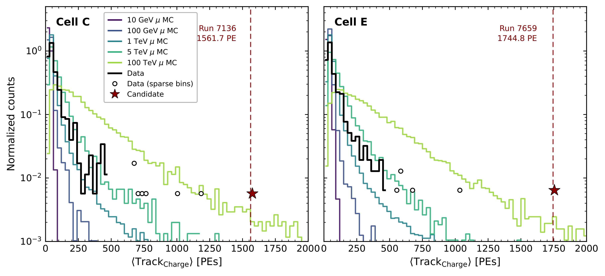
图注：Distributions of the average charge per pixel for tracks pointing to cells C and E, redrawn from Ref.~\cite{ICRC2019}, compared with the MC expectations for mono-energetic muons. The bulk of the population, consistent with the scattered-muon background of Ref.~\cite{Albert2022}, is separated from the two candidates by more than an order of magnitude in charge; the sparsely populated bins in between are discussed in Section~\ref{sec:threshold}.
对应解读：对应“建议重点查看的图表”第2项和第6项，以及“关键图表逐图导读”图2：公开 Monte Carlo 电荷分布、散射缪子背景与候选事件在电荷轴上的位置。
入选理由：这是判断候选事件是否落在散射缪子背景模型尾端之外的核心图。图中直接比较了 C、E 两个方向的平均像素电荷分布与单能缪子 MC 预期，显示普通背景主体与两个候选事件在电荷上相差超过一个数量级，最直接支撑日报中关于 \(10^3\text{--}10^4\) photoelectrons 窗口和背景模型覆盖范围不足的讨论。
来源与置信度：arxiv_source；high；arxiv_source / HAWCNuCandidatesarXivV2.tex:figure[5]
Fig02
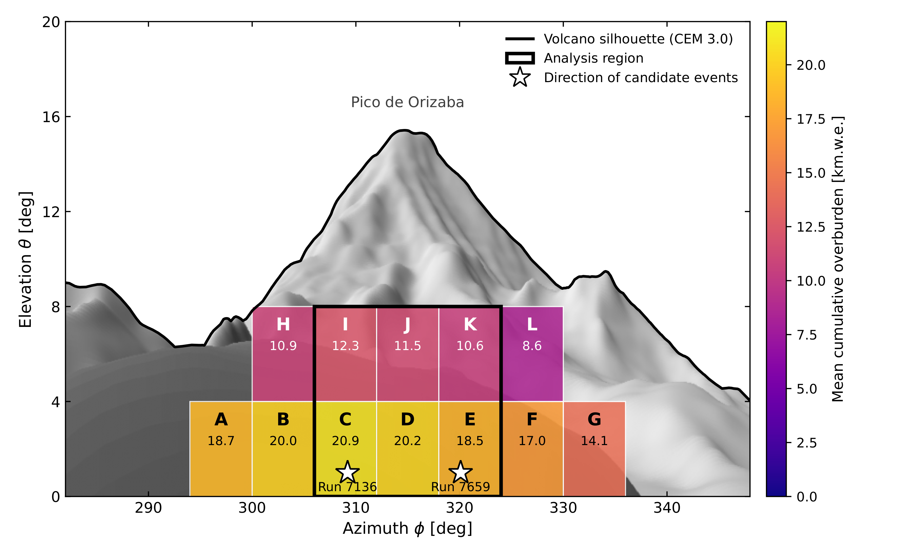
图注：Analysis cells of Ref.~\cite{ICRC2019} on the silhouette of the Pico de Orizaba as seen from the center of the HAWC array. The relief is obtained by ray tracing the INEGI digital elevation model (CEM~3.0) \cite{INEGI} from the HAWC position, and the azimuth follows the convention of Ref.~\cite{Albert2022}, measured from East and clockwise. Each cell is shaded by the cumulative overburden averaged over its solid angle, from the same ray tracing; the value in $\kmwe$ is printed inside each cell. The heavy outline marks the six-cell analysis region and the stars mark the reconstructed directions of the two observed candidates. The lower row, which contains both candidates, is shielded by roughly twice the mass of the upper row, and part of cell H looks past the edge of the volcano. The smooth dark mass in the left foreground is a lava structure a few hundred metres from the array.
对应解读：对应“建议重点查看的图表”第1项，以及“关键图表逐图导读”图1：候选事件方向与 Pico de Orizaba 过burden 地图。
入选理由：该图把 HAWC 分析 cell、火山轮廓、平均等效水深和两个候选事件重建方向同时放在一张图中，是检验事件是否位于最大遮挡区域的最直接证据。它特别显示两个候选都落在下排高 overburden 区域，可支撑日报中关于 \(>18\\,\mathrm{km.w.e.}\) 最大遮挡区和直接大气缪子背景受强烈压低的解读。
来源与置信度：arxiv_source；high；arxiv_source / HAWCNuCandidatesarXivV2.tex:figure[2]
Fig04
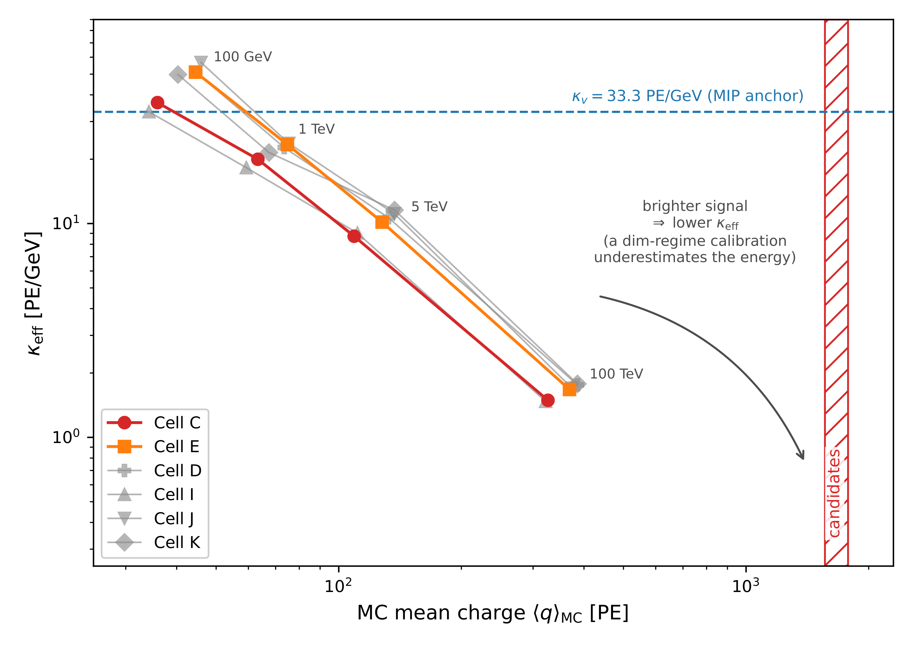
图注：Effective conversion factor $\kappa_{\rm eff}$ as a function of the MC mean charge, for the six analysis cells published in Ref.~\cite{ICRC2019}. The monotonic decrease establishes the unidirectional character of the calibration bias: energies estimated with a dim-regime calibration are underestimates.
对应解读：对应“建议重点查看的图表”第3项和第7项，以及“关键图表逐图导读”图3：电荷到能量沉积标定、系统误差方向和 \(Q_{\rm PE}\to E_{\rm dep}\) 转换。
入选理由：该图展示有效转换因子 \(\kappa_{\rm eff}\) 随 MC 平均电荷的变化，直接关系到候选事件能量沉积下限是否可信。它支撑日报中关于标定系统误差具有单向性、使用暗端标定会低估能量、候选沉积可能被推向更高能区的核心论点。
来源与置信度：arxiv_source；high；arxiv_source / HAWCNuCandidatesarXivV2.tex:figure[4]
Fig06
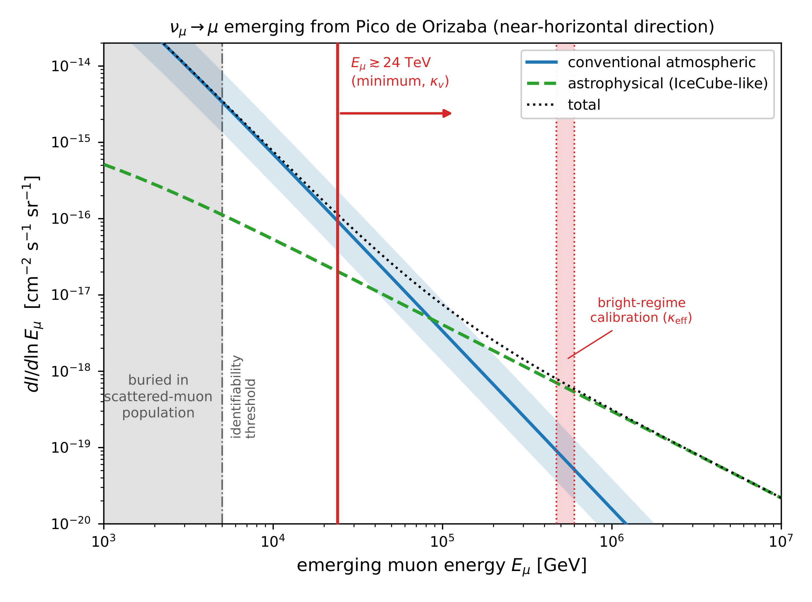
图注：Expected intensity of identifiable neutrino-induced muons per unit $\ln E_\mu$, emerging from the Pico de Orizaba along the near-horizontal direction, for the conventional atmospheric flux (band: factor 2--3 normalization uncertainty) and the astrophysical extrapolation. The abscissa is the energy $E_\mu$ of the emerging muon, not the neutrino energy of Table~\ref{tab:pnu}. The two red markers show what the candidate charges imply under the two admissible calibrations of Section~\ref{sec:keff}: the solid line with the arrow is the minimum obtained with the most conservative value, $\kappa_v = 33.3~\pe/{\rm GeV}$, and the dotted band is the result of the same chain with the calibration of the brightness regime the candidates populate, $\kappa_{\rm eff} = 1.5$--$1.7~\pe/{\rm GeV}$. The separation between them is the calibration systematic measured in Section~\ref{sec:keff} and not an uncertainty band on a measured energy; only the minimum is quoted in the text. The ordinate is a differential in $\ln E_\mu$, so the intensity above a threshold $E_0$ is $f(E_0)/\gamma$, the value of the curve at $E_0$ divided by its logarithmic slope, and not the area perceived on the logarithmic axes: at $E_0 = 5$~TeV the conventional atmospheric curve reads $f(E_0) = 3.4\times10^{-15}$ and $\gamma = 2.3$, giving the $I(E_\mu > 5~{\rm TeV}) \approx 1.5\times10^{-15}~{\rm cm^{-2}s^{-1}sr^{-1}}$ of Section~\ref{sec:rates}.
对应解读：对应“建议重点查看的图表”第6项和第8项，以及“关键图表逐图导读”图6：中微子诱导出射缪子强度、候选电荷对应能量和事件率比较。
入选理由：该图连接了中微子假设、出射缪子能量、常规大气通量和天体物理外推，并用红色标记展示候选电荷在不同标定下对应的能量范围。它不能完全替代 Poisson 显著性图，但能支撑日报中关于候选需要 \(\gtrsim20\) TeV 出射轻子、常规大气中微子预期偏低以及校准系统误差影响的讨论。
来源与置信度：arxiv_source；high；arxiv_source / HAWCNuCandidatesarXivV2.tex:figure[6]
Fig03
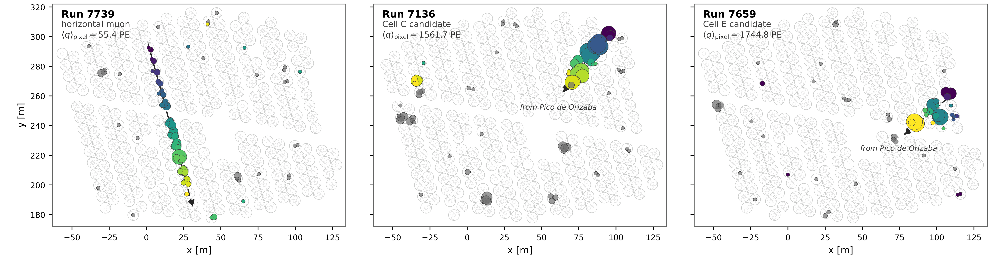
图注：Event displays published in Ref.~\cite{ICRC2019}, redrawn from the original figures. Left: the horizontal muon of Run 7739, which serves as a reference from the same instrument. Center and right: the two candidates. The three panels share axes, aspect ratio and marker scale, so that marker sizes are directly comparable. Marker size gives the deposited charge, on the scale of the original displays, whose minimum is the PMT radius and whose maximum is $1.5$ times the tank radius. Marker color encodes the relative arrival time of each PMT hit; the color range is set independently in each panel to the interval spanned by that panel's track, no absolute time scale is quoted, and hits arriving outside that interval are shown in gray. The dashed arrows indicate the approximate direction of the track defined by the highest-charge hits, and are a visual guide only. The isolated low-charge hits correspond to the vertical atmospheric muon noise contained in the same trigger window.
对应解读：对应“建议重点查看的图表”第5项，以及“模型拟合”中关于径迹质量、命中水箱时间、空间线性和高电荷水箱主导性的讨论。
入选理由：该图给出一个参考水平缪子和两个候选事件的事件显示，包含电荷大小、相对到达时间和近似径迹方向。虽然不是完整的时间残差或重建似然诊断，但它是候选事件是否呈现水平径迹状、是否由少数高电荷水箱主导、以及与普通水平缪子形态差异的最重要可视化依据。
来源与置信度：arxiv_source；high；arxiv_source / HAWCNuCandidatesarXivV2.tex:figure[3]
Fig01
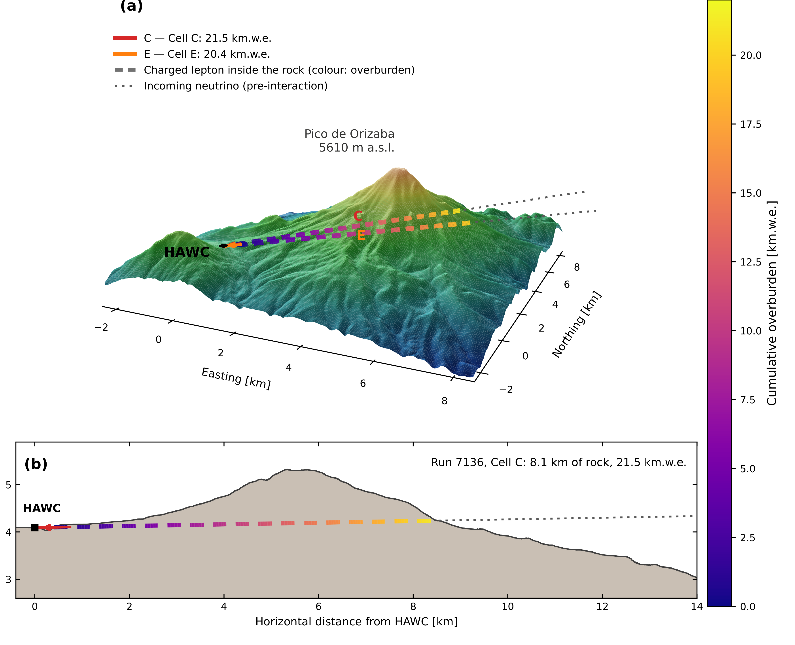
图注：Topography of the Pico de Orizaba volcano from the INEGI digital elevation model. (a) The two rays are traced back from the HAWC position along the candidate track directions measured in Section~\ref{sec:inputs}, at $1^\circ$ elevation. The dotted gray segment is the incoming neutrino before its interaction, the dashed color-coded segment the charged lepton inside the rock, and the solid colored segment the lepton in air; the color scale gives the cumulative overburden in $\kmwe$, which reaches 21.5 and 20.4~$\kmwe$ for cells C and E respectively. These are single-direction values and therefore exceed the cell-averaged figures quoted in the text, which average over the full solid angle of each cell. (b) Vertical section along the azimuth of the candidate of cell C, in which the trajectory is seen to cross 8.1~km of rock.
对应解读：对应“建议重点查看的图表”第1项和第4项，以及“关键图表逐图导读”图4中关于火山厚度、路径长度和直接大气缪子穿透条件的背景几何部分。
入选理由：该图给出了从 HAWC 沿候选方向回溯穿过 Pico de Orizaba 的三维地形和垂直剖面，标明累积 overburden 可达约 20--21.5 \(\mathrm{km.w.e.}\)，以及 C 方向穿越约 8.1 km 岩石。它不直接给出穿透概率或期望事件数，但为 \(E_\mu\gtrsim0.67\\,\mathrm{PeV}\) 这类直接缪子背景估算提供关键几何依据。
来源与置信度：arxiv_source；high；arxiv_source / HAWCNuCandidatesarXivV2.tex:figure[1]
强相关工作
这篇工作直接关联 HAWC 合作组关于地球掠射中微子搜索的同类分析，以及更广泛的山体/地球掠射 \(\nu_\tau\) 探测文献。由于本文是对已发表 HAWC 结果的公开信息再分析，读者应检索同一事件或同一分析的 HAWC Collaboration 论文、会议报告和补充材料，关键词包括 “HAWC Earth-skimming neutrino Pico de Orizaba”, “HAWC horizontal track-like events”, “HAWC volcano neutrino”, “scattered muon background HAWC”。
相似观测方面，可对照 Pierre Auger 对地球掠射 \(\nu_\tau\) 的限制、ANITA 异常上行事件争议、IceCube 的高能 starting events 和 through-going muons，以及未来 GRAND、Trinity、BEACON 等山体/地平线中微子概念。相反观点或潜在张力主要来自背景建模：高能大气缪子尾部、prompt-charm 通量、空气簇射缪子束、探测器饱和和重建异常都可能削弱中微子解释。检索关键词可用 “Earth-skimming tau neutrino review”, “mountain target neutrino detector”, “prompt atmospheric muon background”, “ANITA anomalous events interpretations”。
需要强调的是，目前我只确信本文 arXiv 页面和 HAWC 官方站点为可靠公开入口；具体同一 HAWC 原始搜索论文的题名和编号应由读者在 arXiv、NASA ADS 或 HAWC publication list 中用上述关键词核对，避免把会议摘要、白皮书和正式同行评议论文混为一谈。
同一事件 / 同类源线索：
相似工作：
（未提供）
基础理论 / 方法工作：
相反观点 / 张力线索：
（未提供）
8. Little Red Dots as Shock-Powered High-Energy Neutrino Sources
- 来源：arXiv / astro-ph.HE
- 链接：https://arxiv.org/abs/2608.28975v1
- 作者：Tyco Mera, Chris Ashall, Shunsaku Horiuchi, Rohan Naidu, Kyle Medler, Peter Hoeflich
- 评分：novelty 7/10，importance 7/10，relevance 9/10，final 8.70/10
- 推荐理由：Directly addresses high-energy neutrino production from an emerging high-redshift source class and its contribution to the IceCube diffuse flux. The model is simplified and contribution is likely small except in high-efficiency cases, but the astrophysical neutrino/source connection makes it worth reading.
中文题目：“小红点”能否作为激波供能的高能中微子源？
做了什么：这篇论文把 JWST 发现的高红移紧致红色源“小红点”解释为一种由快速中心引擎外流撞击致密周围物质供能的瞬变/准瞬变系统，并计算这种激波环境是否能加速宇宙线、通过强子相互作用产生高能中微子。作者用受 IIn 型超新星启发的简化激波模型估计光度，再把单源中微子产额积分到宇宙学小红点族群上。结论是：在保守的 IIn 型超新星类宇宙线参数下，小红点对 IceCube 弥散中微子强度的贡献通常只有亚百分比到几个百分点；若采用更高的宇宙线效率，最高可到约 \(13\%\)，但目前样本不完备和小红点本质不清使这个数字只能视为可行性估计。
为什么重要：小红点的物理本质仍有很大争议：它们可能是低质量活动星系核、被尘埃遮蔽的星暴、极端恒星族群，也可能涉及强相互作用瞬变。本文的重要性在于把它们从“红外/光学奇特源”推进到“高能多信使源候选”的框架中，检验一个可观测后果：若其光度来自致密介质中的强激波，就应伴随宇宙线加速和 \(pp\) 中微子产生。
理论 / 观测 / 仪器方法价值：对理论而言，本文给出了一套把 IIn 型超新星相互作用激波、中心引擎外流、小红点光度函数和 IceCube 弥散中微子背景连接起来的解析框架。对观测而言，它指出即使单个高红移小红点难以被 IceCube 定位探测，它们的累积贡献仍可作为族群层面的约束。对方法而言，文章展示了如何在源本质未定、样本不完备的阶段，用可调的激波光度 \(L_{\rm s}\)、宇宙线效率和光度分位数先做数量级闭合检验。
为什么应该关注：如果你关心 JWST 高红移紧致源、早期宇宙黑洞/恒星形成、IIn 型超新星相互作用激波或 IceCube 中微子起源，这篇文章都值得看。它的主要价值不是宣称小红点已经解释了 IceCube 背景，而是明确告诉我们：在什么激波功率、物质密度和宇宙线效率下，小红点才可能成为非忽略的中微子源；反过来，未来更完整的小红点样本和中微子统计可以排除哪些物理图像。
展开详细解读：文章讲解、背景、理论、重点章节、图表与相关工作
文章详细讲解
科学问题：小红点 \({\rm LRDs}\) 是 JWST 深场中发现的一类紧致、高红移、颜色很红的源，其谱形和线特征与若干已知天体类别都有相似之处，但没有一个解释已经压倒性胜出。本文抓住一个特别物理化的可能性：它们的辐射不是单纯来自恒星连续谱或普通活动星系核，而是由快速中心引擎外流与致密周围介质相互作用产生的激波供能。由于 IIn 型超新星正是通过激波撞击稠密星周物质产生窄线和高光度，作者把小红点与 IIn 型超新星作类比，并追问这类激波是否也会产生高能宇宙线和中微子。
作者怎么做：论文建立了一个有意简化的模型。一个快速中心引擎外流在致密介质中驱动激波，激波在接近小红点光球处减速或停滞，但仍有部分物质穿过激波并耗散动能。作者在 IIn 型超新星和小红点观测/推断性质所允许的参数范围内，计算可产生的激波光度 \(L_{\rm s}\)，得到大约 \(2.2\times10^{43}\) 到 \(3.5\times10^{44}\,{\rm erg\,s^{-1}}\) 的范围。随后，他们用致密激波环境中的解析宇宙线加速和强子相互作用模型，估计每个源的中微子产额。
关键结果：在以 IIn 型超新星为参照的基准宇宙线参数下，小红点对 IceCube 弥散中微子强度的贡献并不主导。按小红点光度分位数看，在 \(E_\nu\lesssim2\times10^5\,{\rm GeV}\) 的能段，最低光度五分位平均贡献约为 \(0.2\%\)，最高光度五分位约为 \(2\%\)。作者还给出一个更高宇宙线效率的示例情形，其中贡献可达约 \(13\%\)。这说明小红点不是默认的 IceCube 主源，但在激波效率较高、样本存在大量漏检、光度函数高端被低估时，它们可能成为有意义的亚主导成分。
局限和下一步：本文最大的限制是小红点本身还不是一个物理同质的源类，当前观测样本也受 JWST 选择函数、红移确认、尘埃消光、活动星系核污染和光度估计影响。模型方面，激波结构、辐射转移、宇宙线逃逸、磁场放大、最大能量和源演化都被压缩进少数参数。下一步需要更大的小红点光谱样本、可靠的体积率/光度函数、与 IIn 型超新星或活动星系核模型的可区分预言，以及面向 IceCube-Gen2 或 KM3NeT 的族群堆叠/交叉相关分析。
关键结果是怎么做出来的
本文最核心的证据链从样本和光度出发，而不是从某个单个中微子事件出发。作者采用当前已知的小红点观测性质作为族群输入，并按光度分位数讨论代表性源。由于小红点样本仍不完整，论文没有把某个具体目录当成最终真值，而是用观测到和推断出的光度范围来设定激波模型参数。读者应特别注意：文中的百分比贡献是对 IceCube 弥散强度的模型积分结果，不是某个显著空间关联的探测声明。
单源部分的关键量是激波光度 \(L_{\rm s}\)。作者让快速外流撞击致密周围物质，并要求激波供能能够达到小红点所需的辐射功率。他们得到的 \(L_{\rm s}\) 范围约为 \(2.2\times10^{43}\) 至 \(3.5\times10^{44}\,{\rm erg\,s^{-1}}\)。这个范围支撑了后续中微子计算：若 \(L_{\rm s}\) 太低，宇宙线注入功率不足；若 \(L_{\rm s}\) 足够高且 \(pp\) 相互作用近似量热，则中微子产额与宇宙线效率近似线性相关。
统计意义上，本文更像参数空间可行性和弥散背景预算分析，而非传统意义上的 \(5\sigma\) 探测论文。作者把单源中微子谱按宇宙学族群积分，比较得到的 \(E_\nu^2\Phi_\nu\) 与 IceCube 弥散中微子强度。基准模型中，低光度五分位到高光度五分位的贡献从约 \(0.2\%\) 增至约 \(2\%\)；高效率示例可达约 \(13\%\)。这里的“显著性”应理解为相对于观测弥散强度的预算比例，而不是观测过量的统计显著性。
支撑结论的图表应包括：激波光度随外流/介质参数变化的图；不同小红点光度分位数对应的中微子谱；与 IceCube 弥散通量数据或拟合带的比较图；以及参数变化如宇宙线效率、最大能量、相互作用效率对结果的影响图。读者看这些图时应检查模型曲线是否只在 \(E_\nu\lesssim2\times10^5\,{\rm GeV}\) 附近有主要贡献，以及高效率模型是否会在其他能段超出 IceCube 或伽马射线背景约束。
主要系统误差来自三层：第一，小红点体积密度和光度函数可能因 JWST 选择函数和红移不确定性被低估或高估；第二，激波是否真能解释小红点光谱和连续谱仍未定；第三，宇宙线加速效率、磁场、\(pp\) 光学深度和中微子逃逸都高度模型依赖。稳健性检验的重点不是某个参数的最佳值，而是结论在保守和高效率参数之间如何变化：保守情形给出“小贡献但非零”，极端情形给出“可到十个百分点量级但仍非唯一解释”。
展开背景、理论、公式、模型、章节和图表导读
背景知识
小红点是 JWST 时代出现的一个新问题。它们通常表现为高红移、角尺度很小、颜色很红、光度相对较高的源；一些对象显示宽线或类似活动星系核的特征，另一些则可被极端恒星族群或尘埃遮蔽解释。名称本身是形态和颜色描述，不等同于一个已知物理类别，因此把小红点直接称作“早期黑洞”或“迷你类星体”都过于简化。
IIn 型超新星提供了本文的物理类比。IIn 型超新星的窄发射线来自未被激波加速的慢速星周物质，而强光度常由超新星抛射物与致密星周介质碰撞供能。若小红点的光谱在某些方面类似 IIn 型超新星，那么致密介质相互作用激波就是一个自然候选机制。当然，小红点位于更高红移、持续时间和空间尺度可能不同，不能简单把 IIn 型超新星模板平移过去。
高能中微子背景是另一个背景线索。IceCube 已经测到天体弥散中微子通量，但其主要源类仍未完全确定。星暴星系、活动星系核、潮汐瓦解事件、伽马射线暴、强相互作用超新星和隐蔽加速器都被提出过。致密激波环境的吸引力在于：高密度靶物质能让宇宙线高效发生 \(pp\) 碰撞，同时伽马射线可能被吸收或级联，从而形成“中微子亮、伽马射线不显眼”的源。
为什么现在值得重新看？因为 JWST 显著扩大了高红移紧致红源的样本空间，而 IceCube 的弥散通量和源约束也越来越成熟。过去缺少足够的高红移小尺度红源样本，很难讨论它们的族群贡献；现在至少可以做第一轮能量预算。常见误区是把“能解释一部分 IceCube 通量”理解成“已经识别出 IceCube 源”，或把“小红点类似 IIn 型超新星”理解成“它们就是超新星”。本文实际上只证明该通道在某些参数下能量学可行。
基础理论 / 方法脉络
从基本物理图像看，强激波把有序外流动能转化为热能、辐射和非热粒子。若外流速度足够高、上游介质足够致密，激波处的一阶费米加速可以产生近似幂律的宇宙线质子分布。质子在致密气体中与质子碰撞，产生带电和中性介子；带电介子衰变给出中微子，中性介子衰变给出伽马射线。对高密度、光学厚环境，中微子能逃逸，而伽马射线可能被吸收或再处理。
本文的关键假设是小红点可由中心引擎驱动的快速外流和周围致密介质相互作用供能。激波光度 \(L_{\rm s}\) 由穿过激波的质量流率和速度决定，非热宇宙线功率可写成 \(L_{\rm CR}=\epsilon_{\rm CR}L_{\rm s}\)。这里 \(\epsilon_{\rm CR}\) 是宇宙线加速效率，通常是结果中最敏感的参数之一。若 \(pp\) 相互作用效率 \(f_{pp}\) 接近 \(1\)，源近似是强子量热器；若 \(f_{pp}\ll1\)，大部分宇宙线逃逸，中微子效率降低。
观测连接分为两步。第一步是把小红点的光学/红外光度与模型中的激波功率联系起来，判断所需 \(L_{\rm s}\) 是否落在物理可接受范围。第二步是把单源中微子谱经红移修正后对宇宙学体积和光度函数积分，得到弥散通量 \(\Phi_\nu\)。由于单个小红点太远、太暗，本文关注的是累积背景贡献而不是点源探测。
主要退化关系包括：\(L_{\rm s}\) 与 \(\epsilon_{\rm CR}\) 的乘积退化，因为中微子归一化近似由 \(\epsilon_{\rm CR}L_{\rm s}\) 控制；介质密度与源尺寸退化，因为 \(pp\) 光学深度取决于柱密度；红移分布与光度函数退化，因为高红移源数量多但单源通量被距离和能量红移削弱；小红点本质退化，因为活动星系核、星暴和激波模型可能产生相似的宽带颜色。系统误差主要来自样本不完备、光谱分类、消光校正和宇宙线微物理。
公式与推导
第一步从激波能量通量开始。若质量以速率 \(\dot M_{\rm sh}\) 穿过速度为 \(v_{\rm sh}\) 的强激波，可供耗散的动能光度数量级为
这里 \(L_{\rm s}\) 是激波功率，\(\dot M_{\rm sh}\) 是穿越激波的质量流率，\(v_{\rm sh}\) 是激波相对上游介质速度；它给出小红点光度能量学闭合的最低要求。
若激波在半径 \(R\) 处扫过密度为 \(\rho\) 的介质，质量流率可近似写成
代回上式得到 \(L_{\rm s}\propto R^2\rho v_{\rm sh}^3\)，说明速度误差会被三次方放大，而密度和半径控制可供碰撞的靶物质量。
非热宇宙线功率通常参数化为
其中 \(\epsilon_{\rm CR}\) 是宇宙线加速效率。本文的保守与高效率情形本质上是在改变 \(\epsilon_{\rm CR}\) 以及相关微物理参数，从而改变中微子归一化。
若宇宙线质子注入谱近似为幂律，常写为
其中 \(Q_p(E_p)\) 是每单位能量每单位时间的质子注入率，\(s\) 是谱指数，\(\mathcal R_p\) 是把有限能区归一化到总宇宙线功率的因子，\(E_{p,0}\) 是参考能量。
质子与气体的 \(pp\) 损失时间为
其中 \(n\) 是靶气体数密度，\(\sigma_{pp}\) 是非弹性 \(pp\) 截面，\(\kappa_{pp}\) 是非弹性能量损失比例，\(c\) 是光速。与动力学或逃逸时间 \(t_{\rm esc}\) 比较，可得相互作用效率
当 \(t_{\rm esc}\gg t_{pp}\) 时，\(f_{pp}\to1\)，源接近强子量热器。
中微子光度的数量级可由带电介子能量分配估计为
因子 \(3/8\) 表示 \(pp\) 碰撞中约一半能量进入带电介子、再由三个中微子分享主要能量；关系 \(E_p\simeq20E_\nu\) 是常用近似。
单个红移为 \(z\) 的源对观测通量的贡献为
其中 \(d_L\) 是光度距离，带撇号的 \(E_\nu'\) 是源系能量。这个式子体现了能量红移和到达率时间膨胀。
弥散通量需对宇宙学体积和光度函数积分：
这里 \(\Psi(L_{\rm s},z)\) 是小红点的共动光度函数或等效事件/源密度，\(dV_c/dz\) 是共动体积元。本文的族群百分比贡献就是把这个 \(\Phi_\nu\) 与 IceCube 测得的弥散 \(\Phi_\nu^{\rm IC}\) 比较：
\(\eta_{\rm LRD}\) 不是探测显著性，而是能量预算比例；本文报告的约 \(0.2\%\)、\(2\%\) 和示例 \(13\%\) 都应按这个意义理解。
模型拟合 / 应用方法
本文不是以大量自由参数拟合单个光谱的传统观测论文，而是把小红点观测性质映射到一组物理参数区间，再计算对应的中微子输出。被“拟合”或调节的核心量包括激波光度 \(L_{\rm s}\)、激波速度、致密介质密度或柱密度、宇宙线效率 \(\epsilon_{\rm CR}\)、质子谱指数 \(s\)、最大能量以及小红点族群光度函数。读者应把结果看成参数空间扫描和能量预算，而不是单一最佳模型。
似然层面，若未来要把本文框架转化为严格统计推断，可把 IceCube 弥散谱点、上限和协方差写入高斯或泊松似然，同时把小红点光度函数作为先验或层级模型。当前文章的比较更接近模型曲线与 IceCube 弥散强度的相对归一化比较。关键残差不是某个点的 \(\chi^2\) 是否最小，而是模型是否在某些能段系统性超出中微子数据，或是否需要不合理高的 \(\epsilon_{\rm CR}\) 才能达到可观贡献。
参数退化很强。\(\epsilon_{\rm CR}\) 与 \(L_{\rm s}\) 近似线性退化；密度 \(n\) 与逃逸时间控制 \(f_{pp}\)，在量热极限下继续提高密度不会显著提高中微子光度；最大质子能量与磁场、激波速度和年龄相关，会影响中微子谱的高能截断；红移分布与光度函数高端影响总体归一化。仅靠当前小红点光度和 IceCube 弥散谱很难同时打破这些退化。
系统误差方面，小红点样本不完备可能使总体贡献被低估，但错误分类或活动星系核污染又可能使激波族群被高估。小红点光度若有强透镜放大、尘埃校正错误或活动星系核连续谱贡献，映射到 \(L_{\rm s}\) 的结果会偏移。中微子方面，IceCube 弥散谱本身存在南北天区、能段选择和味比例假设的差异；若用不同 IceCube 数据集归一化，百分比贡献也会改变。
实际应用上，本文框架适合做三类后续分析：第一，用更完整的 JWST 小红点目录重建 \(\Psi(L_{\rm s},z)\)；第二，对小红点天区位置与 IceCube 事件做堆叠或交叉相关，尽管单源信号很弱；第三，把中微子预算与电磁约束联合起来，特别是 X 射线、红外谱线、伽马射线背景和 IIn 型超新星相互作用模型，以排除过高的宇宙线效率或不合理的介质柱密度。
重点章节 / 结果段落怎么读
数据/样本与动机部分：读者应先看作者如何定义小红点、引用了哪些观测性质、为什么认为其光谱与 IIn 型超新星有可比性。重点不是名称，而是小红点的光度、红移、紧致性和谱线特征能否支持致密介质相互作用的解释。
激波供能模型部分：这是论文的物理核心。应检查作者如何设定中心引擎外流、周围介质、激波停滞或接近光球的位置，以及如何从这些参数得到 \(L_{\rm s}\)。特别要看 \(2.2\times10^{43}\) 到 \(3.5\times10^{44}\,{\rm erg\,s^{-1}}\) 这个范围对应什么参数，而不是只记住数字。
宇宙线和中微子计算部分：应看作者采用的解析强子模型、\(pp\) 相互作用效率、宇宙线加速效率、谱指数和最大能量。这里决定了小红点是亚百分比源还是十个百分点源。建议读者把基准 IIn 型超新星参数和高效率示例分开理解。
族群积分与 IceCube 比较部分：应重点看小红点光度分位数如何进入积分，以及模型谱与 IceCube 弥散强度在哪个能段比较。文中结论集中在 \(E_\nu\lesssim2\times10^5\,{\rm GeV}\) 的贡献比例，不能外推为所有能段或所有小红点模型。
讨论和局限部分：这是判断论文可信度的关键。需要关注作者如何处理当前小红点 census 不完备、物理分类不确定、激波模型简化和宇宙线参数不可直接约束等问题。若这些限制没有被纳入，百分比贡献很容易被误读成精确预测。
建议重点查看的图表
-
小红点光度或光度分位数分布图：看样本是否覆盖高光度端，误差条或选择函数是否显示明显不完备；高光度端对弥散中微子贡献特别敏感。
-
激波光度 \(L_{\rm s}\) 的参数空间图：看哪些外流速度、密度、半径组合能产生 \(10^{43}\) 到 \(10^{44}\,{\rm erg\,s^{-1}}\) 量级光度；注意速度三次方依赖带来的不确定性。
-
单源中微子谱图：看 \(E_\nu^2Q_\nu\) 或等效光度随能量的峰值、截断和归一化；区分基准 IIn 型超新星参数与高效率示例。
-
弥散中微子通量与 IceCube 数据比较图：看模型曲线相对 IceCube 谱点或置信带的位置，尤其是 \(E_\nu\lesssim2\times10^5\,{\rm GeV}\) 区间。
-
光度分位数贡献图或表：看最低五分位到最高五分位从约 \(0.2\%\) 到约 \(2\%\) 的变化是否由源数、光度还是红移分布驱动。
-
参数敏感性或稳健性检验图：看改变 \(\epsilon_{\rm CR}\)、\(f_{pp}\)、最大能量、光度函数归一化后，贡献是否可达约 \(13\%\)，以及是否需要极端假设。
关键图表逐图导读
图 1：若论文给出小红点样本或示意图，横轴通常应是红移、光度或颜色，纵轴是源数、绝对星等或谱特征强度。数据点代表当前 JWST 小红点候选，模型线或阴影区代表作者采用的参数范围。读图陷阱是把观测候选直接当作完整体积样本；选择函数和红移确认率会强烈影响族群积分。
图 2：激波供能参数图通常会以半径、密度、质量流率或速度为坐标，等值线给出 \(L_{\rm s}\)。应检查达到 \(2.2\times10^{43}\) 到 \(3.5\times10^{44}\,{\rm erg\,s^{-1}}\) 的区域是否需要过高质量流率或不合理致密介质。模型线若很陡，说明结果对 \(v_{\rm sh}\) 或 \(R\) 很敏感。
图 3：单源中微子谱图的横轴应是 \(E_\nu\)，纵轴可能是 \(E_\nu^2Q_\nu\) 或 \(E_\nu^2\phi_\nu\)。不同颜色通常对应不同 \(L_{\rm s}\) 分位数或宇宙线效率。关键是看高光度分位数是否只提高归一化，还是也改变谱峰/截断；后者意味着最大能量或冷却过程也在变化。
图 4：弥散通量比较图应把 \(E_\nu^2\Phi_\nu\) 与 IceCube 弥散强度放在同一坐标。基准模型若位于 IceCube 数据下方两个数量级以内，说明其为亚主导源；高效率示例若接近 \(10\%\) 量级，应检查是否在某能段超过观测带。读图陷阱是只看峰值比例，而忽略积分能段和谱形匹配。
图 5：光度分位数或贡献百分比图/表应显示最低到最高五分位的平均贡献，从约 \(0.2\%\) 增至约 \(2\%\)。应看误差带是否包含样本不完备和光度函数高端不确定性；若没有，这些百分比只能作为条件预测。
图 6：稳健性或高效率案例图应显示 \(\epsilon_{\rm CR}\) 或相关微物理参数变化后模型如何升高到约 \(13\%\)。读者应问：这个参数是否仍与 IIn 型超新星、伽马射线背景和源能量预算相容？如果只有极端参数才能显著贡献，结论应理解为上限式可行性而非默认预测。
论文原图 / 可嵌入图片
Fig03
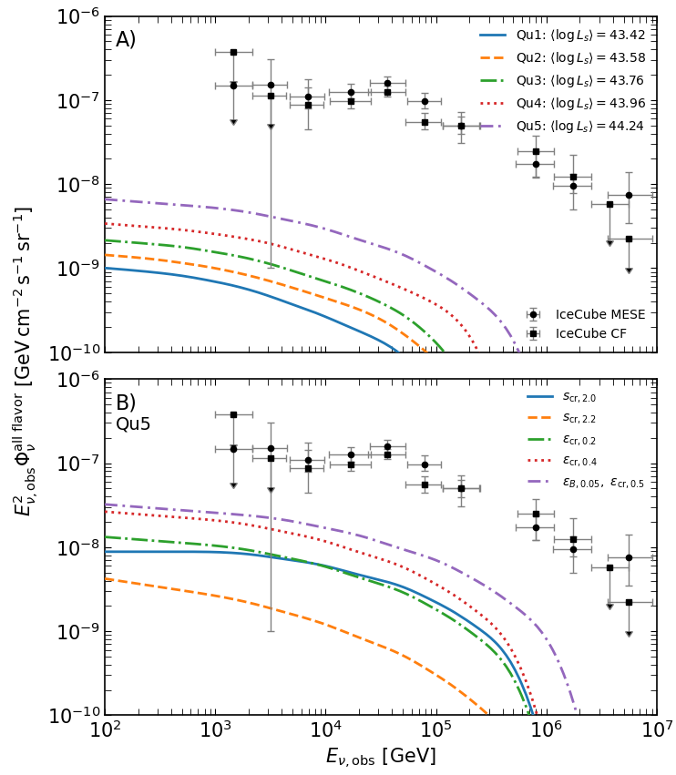
图注：A) Diffuse all-flavor neutrino intensity expected from LRDs compared with IceCube measurements, adopting the fiducial values $\epsilon_{\rm cr}=0.1$, $\epsilon_B=0.01$, and $s_{\rm cr}=2.1$. The accepted models shown in Figure~\ref{fig:solutions} are divided into five equally populated quintiles (Qu1--Qu5) according to their shock luminosity, $L_s$. Each curve shows the mean diffuse neutrino intensity of all models within the corresponding quintile. B) Dependence of the Qu5 neutrino intensity on the assumed cosmic-ray parameters. We vary $s_{\rm cr}=2.0$ and $2.2$, and $\epsilon_{\rm cr}=0.2$ and $0.4$, while holding the remaining parameters the same as A). We additionally show a higher-efficiency case with $\epsilon_B=0.05$ and $\epsilon_{\rm cr}=0.5$.
对应解读：对应“建议重点查看的图表”第3、4、5、6项，以及关键图表逐图导读中的图3、图4、图5、图6和模型拟合段落关于IceCube相对归一化、光度五分位贡献与宇宙线参数敏感性的讨论。
入选理由：这是最核心的结果图：A面直接给出LRD弥散全味中微子强度与IceCube观测的比较，并按激波光度五分位Qu1--Qu5展示平均贡献，可检验最低到最高光度分位贡献从约0.2%到约2%的趋势；B面改变宇宙线谱指数、宇宙线效率和磁场效率，展示高效率情形能否达到约13%量级。因此它同时支撑中微子谱形、IceCube比较、光度分位贡献和参数稳健性四个日报重点。
来源与置信度：arxiv_source；high；arxiv_source / main.tex:figure[3]
Fig02
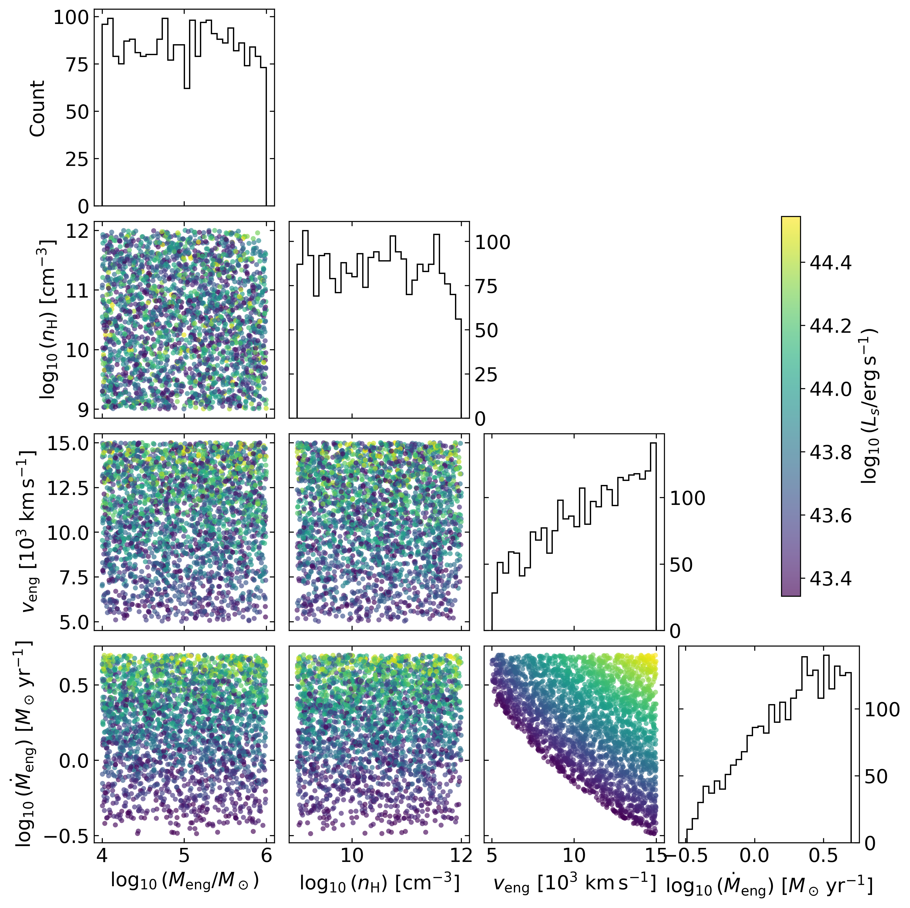
图注：Corner plot showing viable solutions of the shock model constrained by the observed bolometric luminosities of LRDs, the diffuse all-flavor neutrino intensity measured by IceCube, and the requirement $M_{\rm esc}\leq M_{\rm eng}$. The color scale indicates the total shock luminosity, $L_s$, of each model.
对应解读：对应“建议重点查看的图表”第2项，以及关键图表逐图导读中的图2和模型拟合段落关于激波光度L_s、外流/介质参数空间、M_esc≤M_eng约束和参数退化的讨论。
入选理由：该角图展示满足LRD光度、IceCube弥散强度和质量约束的激波模型解，颜色编码总激波光度L_s，是理解论文如何从物理参数映射到2.2×10^43至3.5×10^44 erg/s激波光度范围的关键图。相比单纯示意图，它更直接揭示哪些参数组合可行，以及L_s对模型参数的敏感性和退化。
来源与置信度：arxiv_source；high；arxiv_source / main.tex:figure[2]
Fig01
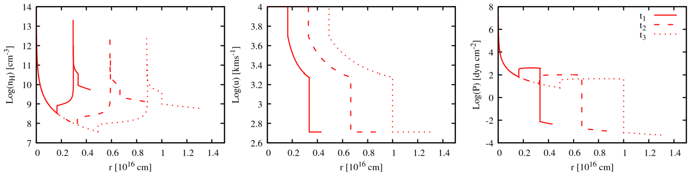
图注：Demonstration of the initial shock formation that powers an LRD, calculated using a modified version of the SPICE software \citep{2016Dragulin}. The hydrodynamic equations governing the shock interaction regions have self-similar solutions, so all models exhibit the same overall structure while differing in their physical scalings. As an illustrative example, we show a model with $M_{\rm eng}=10^{5}~\Msol$, $n_{\rm H}=10^{9}$ \ccm, $\dot{M}_{\rm eng}=0.3~\mdot$, and $v_{\rm eng}=10^{4}~\kms$, where the photosphere is defined at $R_{\rm ph}=10^{16}$ cm. As a function of radius, we show: Left: the hydrogen number density, $n_{\rm H}$ (\ccm); Middle: the velocity, $u$ (\kms); and Right: the pressure, $P$ (dyn cm$^{-2}$). From smaller to larger radii, the sharp transitions correspond to the reverse shock, contact discontinuity, and forward shock, respectively. The three snapshots shown correspond to $t_{1,2,3}=0.45$, $0.91$, and $1.35$ yr. The time scaling differs between models, but the forward shock typically reaches $R_{\rm ph}$ in less than $\sim3$ yr, much shorter than the expected lifetime of an LRD.
对应解读：对应关键图表逐图导读中的图1，以及详细解读中关于快速中心引擎外流、反向激波、接触间断、正向激波和光球半径附近停滞的物理图像。
入选理由：该图给出初始激波形成的流体动力学结构，展示密度、速度和压力随半径的变化以及反向激波、接触间断和正向激波的位置，有助于读者理解LRD由致密介质相互作用激波供能的基本设定。它不直接给出IceCube比较或贡献百分比，但能支撑论文物理模型的直观解释。
来源与置信度：arxiv_source；high；arxiv_source / main.tex:figure[1]
强相关工作
这篇工作与两条文献线直接相连。第一条是小红点本身的 JWST 观测和解释，包括高红移紧致红源、低质量活动星系核、尘埃遮蔽星暴、极端恒星族群和宽线源的讨论。应检索关键词：\({\rm Little\ Red\ Dots}\)、\({\rm JWST\ compact\ red\ sources}\)、\({\rm high\ redshift\ broad\ line\ AGN}\)、\({\rm red\ compact\ galaxies\ JWST}\)。这些同类源论文决定本文族群密度、光度函数和物理分类是否可靠。
第二条是致密介质相互作用瞬变作为中微子源的研究，尤其是 IIn 型超新星、隐蔽超新星、星暴环境和其他 \(pp\) 量热器模型。应检索关键词：\({\rm Type\ IIn\ supernova\ neutrinos}\)、\({\rm shock\ powered\ transients\ cosmic\ rays}\)、\({\rm choked\ jets\ neutrino}\)、\({\rm hidden\ cosmic\ ray\ accelerators}\)。与相反观点的关系在于：IceCube 弥散背景也可由星暴星系、活动星系核核区、潮汐瓦解事件或多源混合解释；本文的小红点通道在基准参数下只是少量贡献，不构成排他性解释。
同一事件 / 同类源线索：
- https://arxiv.org/abs/2608.28975
- https://arxiv.org/search/astro-ph?query=%22Little+Red+Dots%22&searchtype=all
- https://ui.adsabs.harvard.edu/search/q=%22Little%20Red%20Dots%22
相似工作：
- https://arxiv.org/search/astro-ph?query=%22Type%20IIn%22%20neutrino&searchtype=all
- https://arxiv.org/search/astro-ph?query=%22shock-powered%22%20neutrino&searchtype=all
- https://ui.adsabs.harvard.edu/search/q=%22Type%20IIn%22%20neutrino
基础理论 / 方法工作：
相反观点 / 张力线索：
说明
评分由 LLM 给出初评，再由本地阈值策略过滤；IACT、TeV 伽马射线和高能中微子天文学按重点方向处理。